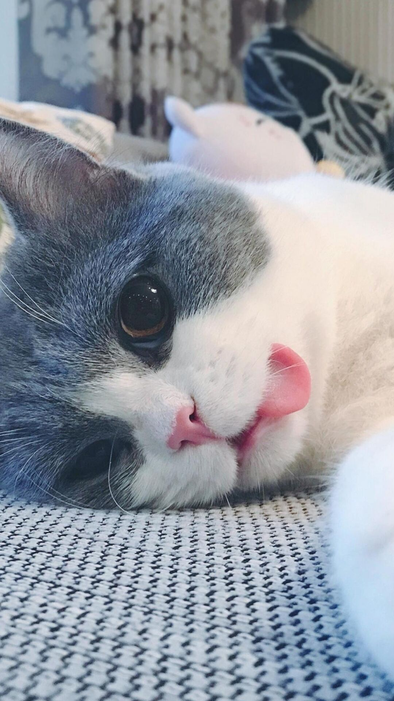

<!DOCTYPE html>
<html>
<head><meta name="generator" content="Hexo 3.9.0">
  <meta charset="utf-8">
  
  <meta name="renderer" content="webkit">
  <meta http-equiv="X-UA-Compatible" content="IE=edge">
  <link rel="dns-prefetch" href="http://yoursite.com">
  <title>Mr.Song blogs</title>
  <meta name="viewport" content="width=device-width, initial-scale=1, maximum-scale=1">
  <meta property="og:type" content="website">
<meta property="og:title" content="Mr.Song blogs">
<meta property="og:url" content="http://yoursite.com/index.html">
<meta property="og:site_name" content="Mr.Song blogs">
<meta property="og:locale" content="en">
<meta name="twitter:card" content="summary">
<meta name="twitter:title" content="Mr.Song blogs">
  
    <link rel="alternative" href="/atom.xml" title="Mr.Song blogs" type="application/atom+xml">
  
  
    <link rel="icon" href="/favicon.png">
  
  <link rel="stylesheet" type="text/css" href="/./main.0cf68a.css">
  <style type="text/css">
  
    #container.show {
      background: linear-gradient(200deg,#a0cfe4,#e8c37e);
    }
  </style>
  

  

</head>
</html>
<body>
  <div id="container" q-class="show:isCtnShow">
    <canvas id="anm-canvas" class="anm-canvas"></canvas>
    <div class="left-col" q-class="show:isShow">
      
<div class="overlay" style="background: #4d4d4d"></div>
<div class="intrude-less">
	<header id="header" class="inner">
		<a href="/" class="profilepic">
			
		</a>
		<hgroup>
		  <h1 class="header-author"><a href="/">Mr. Song</a></h1>
		</hgroup>
		

		<nav class="header-menu">
			<ul>
			
				<li><a href="/">主页</a></li>
	        
				<li><a href="/tags/随笔/">随笔</a></li>
	        
			</ul>
		</nav>
		<nav class="header-smart-menu">
    		
    			
    			<a q-on="click: openSlider(e, 'innerArchive')" href="javascript:void(0)">所有文章</a>
    			
            
    			
    			<a q-on="click: openSlider(e, 'friends')" href="javascript:void(0)">友链</a>
    			
            
    			
    			<a q-on="click: openSlider(e, 'aboutme')" href="javascript:void(0)">关于我</a>
    			
            
		</nav>
		<nav class="header-nav">
			<div class="social">
				
					<a class="github" target="_blank" href="#" title="github"><i class="icon-github"></i></a>
		        
					<a class="weibo" target="_blank" href="#" title="weibo"><i class="icon-weibo"></i></a>
		        
					<a class="rss" target="_blank" href="#" title="rss"><i class="icon-rss"></i></a>
		        
					<a class="zhihu" target="_blank" href="#" title="zhihu"><i class="icon-zhihu"></i></a>
		        
			</div>
		</nav>
	</header>		
</div>

    </div>
    <div class="mid-col" q-class="show:isShow,hide:isShow|isFalse">
      
<nav id="mobile-nav">
  	<div class="overlay js-overlay" style="background: #4d4d4d"></div>
	<div class="btnctn js-mobile-btnctn">
  		<div class="slider-trigger list" q-on="click: openSlider(e)"><i class="icon icon-sort"></i></div>
	</div>
	<div class="intrude-less">
		<header id="header" class="inner">
			<div class="profilepic">
				
			</div>
			<hgroup>
			  <h1 class="header-author js-header-author">Mr. Song</h1>
			</hgroup>
			
			
			
				
			
				
			
			
			
			<nav class="header-nav">
				<div class="social">
					
						<a class="github" target="_blank" href="#" title="github"><i class="icon-github"></i></a>
			        
						<a class="weibo" target="_blank" href="#" title="weibo"><i class="icon-weibo"></i></a>
			        
						<a class="rss" target="_blank" href="#" title="rss"><i class="icon-rss"></i></a>
			        
						<a class="zhihu" target="_blank" href="#" title="zhihu"><i class="icon-zhihu"></i></a>
			        
				</div>
			</nav>

			<nav class="header-menu js-header-menu">
				<ul style="width: 50%">
				
				
					<li style="width: 50%"><a href="/">主页</a></li>
		        
					<li style="width: 50%"><a href="/tags/随笔/">随笔</a></li>
					
		        
				</ul>
			</nav>
		</header>				
	</div>
	<div class="mobile-mask" style="display:none" q-show="isShow"></div>
</nav>

      <div id="wrapper" class="body-wrap">
        <div class="menu-l">
          <div class="canvas-wrap">
            <canvas data-colors="#eaeaea" data-sectionHeight="100" data-contentId="js-content" id="myCanvas1" class="anm-canvas"></canvas>
          </div>
          <div id="js-content" class="content-ll">
            
  
    <article id="post-idea_01" class="article article-type-post  article-index" itemscope itemprop="blogPost">
  <div class="article-inner">
    
      <header class="article-header">
        
  
    <h1 itemprop="name">
      <a class="article-title" href="javascript:;">2019常见java面试题</a>
    </h1>
  

        
        <a href="javascript:;" class="archive-article-date">
  	<time datetime="2019-09-15T07:39:37.669Z" itemprop="datePublished"><i class="icon-calendar icon"></i>2019-09-15</time>
</a>
        
      </header>
    
    <div class="article-entry" itemprop="articleBody">
      
       


<pre style="background: #fff;border: 0;">共包含 208 道面试题，本文的宗旨是为读者朋友们整理一份详实而又权威的面试清单，下面一起进入主题吧。

====================================================================

<h3>一. Java 基础模块</h3>

<h4>1.JDK 和 JRE 有什么区别？</h4>

JDK：Java Development Kit 的简称，Java 开发工具包，提供了 Java 的开发环境和运行环境。

JRE：Java Runtime Environment 的简称，Java 运行环境，为 Java 的运行提供了所需环境。

具体来说 JDK 其实包含了 JRE，同时还包含了编译 Java 源码的编译器 Javac，还包含了很多 Java 程序调试和分析的工具。简单来说：如果你需要运行 Java 程序，只需安装 JRE 就可以了，如果你需要编写 Java 程序，需要安装 JDK。

<h4>2.== 和 equals 的区别是什么？</h4>

== 解读:

对于基本类型和引用类型 == 的作用效果是不同的，如下所示：

基本类型：比较的是值是否相同；

引用类型：比较的是引用是否相同；

代码示例：

String x = "string";

String y = "string";

String z = new String("string");

System.out.println(x==y); // true

System.out.println(x==z); // false

System.out.println(x.equals(y)); // true

System.out.println(x.equals(z)); // true

代码解读：因为 x 和 y 指向的是同一个引用，所以 == 也是 true，而 new String()方法则重写开辟了内存空间，所以 == 结果为 false，而 equals 比较的一直是值，所以结果都为 true。

equals 解读:

equals 本质上就是 ==，只不过 String 和 Integer 等重写了 equals 方法，把它变成了值比较。看下面的代码就明白了。

首先来看默认情况下 equals 比较一个有相同值的对象，代码如下：

class Cat {

public Cat(String name) {

this.name = name;

}

private String name; 

public String getName() {

return name;

} 

public void setName(String name) {

this.name = name;

}

}

Cat c1 = new Cat("精彩猿笔记");

Cat c2 = new Cat("精彩猿笔记");

System.out.println(c1.equals(c2)); // false

输出结果出乎我们的意料，竟然是 false？这是怎么回事，看了 equals 源码就知道了，源码如下：

public boolean equals(Object obj) {

return (this == obj);

}

原来 equals 本质上就是 ==。

那问题来了，两个相同值的 String 对象，为什么返回的是 true？代码如下：

String s1 = new String("精彩猿笔记");

String s2 = new String("精彩猿笔记");

System.out.println(s1.equals(s2)); // true

同样的，当我们进入 String 的 equals 方法，找到了答案，代码如下：

public boolean equals(Object anObject) {

if (this == anObject) {

return true;

}

if (anObject instanceof String) {

String anotherString = (String)anObject;

int n = value.length;

if (n == anotherString.value.length) {

char v1[] = value;

char v2[] = anotherString.value;

int i = 0;

while (n-- != 0) {

if (v1[i] != v2[i])

return false;

i++;

}

return true;

}

}

return false;

}

原来是 String 重写了 Object 的 equals 方法，把引用比较改成了值比较。

总结 ：== 对于基本类型来说是值比较，对于引用类型来说是比较的是引用；而 equals 默认情况下是引用比较，只是很多类重新了 equals 方法，比如 String、Integer 等把它变成了值比较，所以一般情况下 equals 比较的是值是否相等。

<h4>3.两个对象的 hashCode() 相同，则 equals() 也一定为 true，对吗？</h4>

不对，两个对象的 hashCode() 相同，equals() 不一定 true。

代码示例：

String str1 = "精彩";

String str2 = "笔记";

System. out. println(String. format("str1：%d | str2：%d", str1. hashCode(),str2. hashCode()));

System. out. println(str1. equals(str2));

执行的结果：

str1：1179395 | str2：1179395

false

代码解读：很显然“精彩”和“笔记”的 hashCode() 相同，然而 equals() 则为 false，因为在散列表中，hashCode() 相等即两个键值对的哈希值相等，然而哈希值相等，并不一定能得出键值对相等。

<h4>4.final 在 Java 中有什么作用？</h4>

final 修饰的类叫最终类，该类不能被继承。

final 修饰的方法不能被重写。

final 修饰的变量叫常量，常量必须初始化，初始化之后值就不能被修改。

<h4>5.Java 中的 Math. round(-1. 5) 等于多少？</h4>

等于 -1。round()是四舍五入，注意负数5是舍的，例如：Math.round(1.5)值是2，Math.round(-1.5)值是-1。

<h4>6.String 属于基础的数据类型吗？</h4>

String 不属于基础类型，基础类型有 8 种：byte、boolean、char、short、int、float、long、double，而 String 属于对象。

<h4>7.Java 中操作字符串都有哪些类？它们之间有什么区别？</h4>

操作字符串的类有：String、StringBuffer、StringBuilder。

三者区别：

StringBuffer和StringBuilder都继承自抽象类AbstractStringBuilder。

String 声明的是不可变的对象，每次操作都会生成新的 String 对象，然后将指针指向新的 String 对象，而 StringBuffer、StringBuilder 存储数据的字符数组没有被final修饰，说明值可以改变，抽象类AbstractStringBuilder内部都提供了一个自动扩容机制，当发现长度不够的时候(初始默认长度是16)，会自动进行扩容工作，扩展为原数组长度的2倍加2，创建一个新的数组，并将数组的数据复制到新数组，所以对于拼接字符串效率要比String要高。

线程安全性：StringBuffer由于很多方法都被 synchronized 修饰了所以线程安全，但是当多线程访问时，加锁和释放锁的过程很平凡，所以效率相比StringBuilder要低。StringBuilder相反执行效率高，但是线程不安全。所以单线程环境下推荐使用 StringBuilder，多线程环境下推荐使用 StringBuffer。

执行速度:StringBuilder > StringBuffer > String。

<h4>8.String str="i"与 String str=new String(“i”)一样吗？</h4>

不一样，因为内存的分配方式不一样。String str=“i"的方式，Java 虚拟机会将其分配到常量池中，如果常量池中有"i”，就返回"i"的地址，如果没有就创建"i"，然后返回"i"的地址；而 String str=new String(“i”) 则会被分到堆内存中新开辟一块空间。

<h4>9.如何将字符串反转？</h4>

使用 StringBuilder 或者 stringBuffer 的 reverse() 方法。

示例代码：

// StringBuffer reverse

StringBuffer stringBuffer = new StringBuffer();

stringBuffer. append("abcdefg");

System. out. println(stringBuffer. reverse()); // gfedcba

// StringBuilder reverse

StringBuilder stringBuilder = new StringBuilder();

stringBuilder. append("abcdefg");

System. out. println(stringBuilder. reverse()); // gfedcba

<h4>10.String 类的常用方法都有那些？</h4>

indexOf()：返回指定字符的索引。

charAt()：返回指定索引处的字符。

replace()：字符串替换。

trim()：去除字符串两端空白。

split()：分割字符串，返回一个分割后的字符串数组。

getBytes()：返回字符串的 byte 类型数组。

length()：返回字符串长度。

toLowerCase()：将字符串转成小写字母。

toUpperCase()：将字符串转成大写字符。

substring()：截取字符串。

equals()：字符串比较。

<h4>11.抽象类必须要有抽象方法吗？</h4>

不需要，抽象类不一定非要有抽象方法；但是包含一个抽象方法的类一定是抽象类。

示例代码：

abstract class Cat {

public static void sayHi() {

System. out. println("hi~");

}

}

1

2

3

4

5

上面代码，抽象类并没有抽象方法但完全可以正常运行。

<h4>12.普通类和抽象类有哪些区别？</h4>

普通类不能包含抽象方法，抽象类可以包含抽象方法。

抽象类是不能被实例化的，就是不能用new调出构造方法创建对象，普通类可以直接实例化。

如果一个类继承于抽象类，则该子类必须实现父类的抽象方法。如果子类没有实现父类的抽象方法，则必须将子类也定义为abstract类。

<h4>13.抽象类能使用 final 修饰吗？</h4>

不能，定义抽象类就是让其他类继承的，如果定义为 final 该类就不能被继承，这样彼此就会产生矛盾，所以 final 不能修饰抽象类，如下图所示，编辑器也会提示错误信息：

<h4>14.接口和抽象类有什么区别？</h4>

实现：抽象类的子类使用 extends 来继承；接口必须使用 implements 来实现接口。

构造函数：抽象类可以有构造函数；接口不能有。

实现数量：类可以实现很多个接口；但只能继承一个抽象类【java只支持单继承】。

访问修饰符：接口中的方法默认使用 public 修饰；抽象类中的抽象方法可以使用Public和Protected修饰，如果抽象方法修饰符为Private，则报错：The abstract method 方法名 in type Test can only set a visibility modifier, one of public or protected。

<h4>15.Java 中 IO 流分为几种？</h4>

按功能来分：输入流（input）、输出流（output）。

按类型来分：字节流和字符流。

字节流和字符流的区别是：字节流按 8 位传输以字节为单位输入输出数据，字符流按 16 位传输以字符为单位输入输出数据。

<h4>16.BIO、NIO、AIO 有什么区别？</h4>

BIO：Block IO 同步阻塞式 IO，就是我们平常使用的传统 IO，它的特点是模式简单使用方便，并发处理能力低。

NIO：New IO 同步非阻塞 IO，是传统 IO 的升级，客户端和服务器端通过 Channel（通道）通讯，实现了多路复用。

AIO：Asynchronous IO 是 NIO 的升级，也叫 NIO2，实现了异步非堵塞 IO ，异步 IO 的操作基于事件和回调机制。

<h4>17.Files的常用方法都有哪些？</h4>

Files. exists()：检测文件路径是否存在。

Files. createFile()：创建文件。

Files. createDirectory()：创建文件夹。

Files. delete()：删除一个文件或目录。

Files. copy()：复制文件。

Files. move()：移动文件。

Files. size()：查看文件个数。

Files. read()：读取文件。

Files. write()：写入文件。

···

====================================================================

<h3>二. Java 容器模块</h3>

<h4>18.Java 容器都有哪些？</h4>

Java 容器分为 Collection 和 Map 两大类，其下又有很多子类，如下所示：

Collection

List

ArrayList

LinkedList

Vector

Stack

Set

HashSet

LinkedHashSet

TreeSet

Map

HashMap

LinkedHashMap

TreeMap

ConcurrentHashMap

Hashtable

<h4>19.Collection 和 Collections 有什么区别？</h4>

Collection 是一个集合接口，它提供了对集合对象进行基本操作的通用接口方法，所有集合都是它的子类，比如 List、Set 等。

Collections 是一个包装类，包含了很多静态方法，不能被实例化，就像一个工具类，比如提供的排序方法： Collections. sort(list)。

<h4>20.List、Set、Map 之间的区别是什么？</h4>

List、Set、Map 的区别主要体现在两个方面：元素是否有序、是否允许元素重复。

三者之间的区别，如下表：

<h4>21. HashMap 和 Hashtable 有什么区别？</h4>

HashMap是继承自AbstractMap类，而HashTable是继承自Dictionary类。不过它们都实现了同时实现了map、Cloneable（可复制）、Serializable（可序列化）这三个接口。

Hashtable比HashMap多提供了elments() 和contains() 两个方法。

HashMap的key-value支持key-value，null-null，key-null，null-value四种。而Hashtable只支持key-value一种（即key和value都不为null这种形式）。既然HashMap支持带有null的形式，那么在HashMap中不能由get()方法来判断HashMap中是否存在某个键， 而应该用containsKey()方法来判断，因为使用get的时候，当返回null时，你无法判断到底是不存在这个key，还是这个key就是null，还是key存在但value是null。

线程安全性不同：HashMap的方法都没有使用synchronized关键字修饰，都是非线程安全的，而Hashtable的方法几乎都是被synchronized关键字修饰的。但是，当我们需要HashMap是线程安全的时，怎么办呢？我们可以通过Collections.synchronizedMap(hashMap)来进行处理，亦或者我们使用线程安全的ConcurrentHashMap。ConcurrentHashMap虽然也是线程安全的，但是它的效率比Hashtable要高好多倍。因为ConcurrentHashMap使用了分段锁，并不对整个数据进行锁定。

初始容量大小和每次扩充容量大小的不同：Hashtable默认的初始大小为11，之后每次扩充，容量变为原来的2n+1。HashMap默认的初始化大小为16。之后每次扩充，容量变为原来的2倍。

计算hash值的方法不同：为了得到元素的位置，首先需要根据元素的 KEY计算出一个hash值，然后再用这个hash值来计算得到最终的位置。Hashtable直接使用对象的hashCode。hashCode是JDK根据对象的地址或者字符串或者数字算出来的int类型的数值。然后再使用除留余数发来获得最终的位置。

<h4>22.如何决定使用 HashMap 还是 TreeMap？</h4>

对于在 Map 中插入、删除、定位一个元素这类操作，HashMap 是最好的选择，因为相对而言 HashMap 的插入会更快，但如果你要对一个 key 集合进行有序的遍历，那 TreeMap 是更好的选择。

<h4>23.说一下 HashMap 的实现原理？</h4>

HashMap 基于 Hash 算法实现的，我们通过 put(key,value)存储，get(key)来获取。当传入 key 时，HashMap 会根据 key. hashCode() 计算出 hash 值，根据 hash 值将 value 保存在 bucket 里。当计算出的 hash 值相同时，我们称之为 hash 冲突，HashMap 的做法是用链表和红黑树存储相同 hash 值的 value。当 hash 冲突的个数比较少时，使用链表否则使用红黑树。

<h4>24.说一下 HashSet 的实现原理？</h4>

HashSet 是基于 HashMap 实现的，HashSet 底层使用 HashMap 来保存所有元素，因此 HashSet 的实现比较简单，相关 HashSet 的操作，基本上都是直接调用底层 HashMap 的相关方法来完成，HashSet 不允许重复的值。

<h4>25.ArrayList 和 LinkedList 的区别是什么？</h4>

数据结构实现：ArrayList 是动态数组的数据结构实现，而 LinkedList 是双向链表的数据结构实现。

随机访问效率：ArrayList 比 LinkedList 在随机访问的时候效率要高，因为 LinkedList 是线性的数据存储方式，所以需要移动指针从前往后依次查找。

增加和删除效率：在非首尾的增加和删除操作，LinkedList 要比 ArrayList 效率要高，因为 ArrayList 增删操作要影响数组内的其他数据的下标。

综合来说，在需要频繁读取集合中的元素时，更推荐使用 ArrayList，而在插入和删除操作较多时，更推荐使用 LinkedList。

<h4>26.如何实现数组和 List 之间的转换？</h4>

数组转 List：使用 Arrays. asList(array) 进行转换。

List 转数组：使用 List 自带的 toArray() 方法。

代码示例：

// list to array

List<String> list = new ArrayList<String>();

list. add("☞精◈彩◈猿◈笔◈记☜");

list. add("的博客");

list. toArray();

// array to list

String[] array = new String[]{"☞精◈彩◈猿◈笔◈记☜","的博客"};

Arrays. asList(array);

<h4>27.ArrayList 和 Vector 的区别是什么？</h4>

线程安全：Vector 使用了 Synchronized 来实现线程同步，是线程安全的，而 ArrayList 是非线程安全的。

性能：ArrayList 在性能方面要优于 Vector。

扩容：ArrayList 和 Vector 都会根据实际的需要动态的调整容量，只不过在 Vector 扩容每次会增加 1 倍，而 ArrayList 只会增加 50%。

<h4>28.Array 和 ArrayList 有何区别？</h4>

Array 可以存储基本数据类型和对象，ArrayList 只能存储对象。

Array 是指定固定大小的，而 ArrayList 大小是自动扩展的。

Array 内置方法没有 ArrayList 多，比如 addAll、removeAll、iteration 等方法只有 ArrayList 有。

<h4>29.在 Queue 中 poll()和 remove()有什么区别？</h4>

相同点：都是返回第一个元素，并在队列中删除返回的对象。

不同点：如果没有元素 remove()会直接抛出NoSuchElementException 异常，而 poll()会返回 null。

代码示例：

Queue<String> queue = new LinkedList<String>();

queue. offer("string"); // add

System. out. println(queue. poll());

System. out. println(queue. remove());

System. out. println(queue. size());

<h4>30.哪些集合类是线程安全的？</h4>

Vector、Hashtable、Stack 都是线程安全的，而像 HashMap 则是非线程安全的，不过在 JDK 1.5 之后随着 Java. util. concurrent 并发包的出现，它们也有了自己对应的线程安全类，比如 HashMap 对应的线程安全类就是 ConcurrentHashMap。

<h4>31.迭代器 Iterator 是什么？</h4>

Iterator 接口提供遍历任何 Collection 的接口。我们可以从一个 Collection 中使用迭代器方法来获取迭代器实例。迭代器取代了 Java 集合框架中的 Enumeration，迭代器允许调用者在迭代过程中移除元素。

<h4>32.Iterator 怎么使用？有什么特点？</h4>

Iterator 使用代码如下：

List<String> list = new ArrayList<>();

Iterator<String> it = list. iterator();

while(it. hasNext()){

String obj = it. next();

System. out. println(obj);

}

Iterator 的特点是更加安全，因为它可以确保，在当前遍历的集合元素被更改的时候，就会抛出 ConcurrentModificationException 异常。

<h4>33.Iterator 和 ListIterator 有什么区别？</h4>

Iterator 可以遍历 Set 和 List 集合，而 ListIterator 只能遍历 List。

Iterator 只能单向遍历，而 ListIterator 可以双向遍历（向前/后遍历）。

ListIterator 从 Iterator 接口继承，然后添加了一些额外的功能，比如添加一个元素、替换一个元素、获取前面或后面元素的索引位置。

<h4>34.怎么确保一个集合不能被修改？</h4>

可以使用 Collections. unmodifiableCollection(Collection c) 方法来创建一个只读集合，这样改变集合的任何操作都会抛出 Java. lang. UnsupportedOperationException 异常。

示例代码如下：

List<String> list = new ArrayList<>();

list. add("x");

Collection<String> clist = Collections. unmodifiableCollection(list);

clist. add("y"); // 运行时此行报错

System. out. println(list. size());

====================================================================

三. Java 多线程模块

<h4>35.并行和并发有什么区别？</h4>

并行：多个处理器或多核处理器同时处理多个任务。

并发：多个任务在同一个 CPU 核上，按细分的时间片轮流(交替)执行，从逻辑上来看那些任务是同时执行。

如下图：【并发 = 两个队列和一台咖啡机】 【并行 = 两个队列和两台咖啡机】

<h4>36.线程和进程的区别？</h4>

一个程序下至少有一个进程，一个进程下至少有一个线程，一个进程下也可以有多个线程来增加程序的执行速度。

<h4>37.守护线程是什么？</h4>

守护线程是运行在后台的一种特殊进程。它独立于控制终端并且周期性地执行某种任务或等待处理某些发生的事件。在 Java 中垃圾回收线程就是特殊的守护线程。

<h4>38.多线程有几种实现方式？</h4>

有4种，分别是：

继承Thread类

实现Runnable接口

实现Callable接口通过FutureTask包装器来创建Thread线程

通过线程池创建线程，使用线程池接口ExecutorService结合Callable、Future实现有返回结果的多线程。

前面两种【无返回值】原因：通过重写run方法，run方法的返回值是void，所以没有办法返回结果。

后面两种【有返回值】原因：通过Callable接口，就要实现call方法，这个方法的返回值是Object，所以返回的结果可以放在Object对象中。

<h4>39.说一下 Runnable和 Callable有什么区别？</h4>

Runnable没有返回值，Callable可以拿到有返回值，Callable可以看作是 Runnable的补充。

<h4>40.线程有哪些状态？</h4>

线程的6种状态：

初始(NEW)：新创建了一个线程对象，但还没有调用start()方法。

运行(RUNNABLE)：Java线程中将就绪（ready）和运行中（running）两种状态笼统的称为“运行”。线程对象创建后，其他线程(比如main线程）调用了该对象的start()方法。该状态的线程位于可运行线程池中，等待被线程调度选中，获取CPU的使用权，此时处于就绪状态（ready）。就绪状态的线程在获得CPU时间片后变为运行中状态（running）。

阻塞(BLOCKED)：表示线程阻塞于锁。

等待(WAITING)：进入该状态的线程需要等待其他线程做出一些特定动作（通知或中断）。

超时等待(TIMED_WAITING)：该状态不同于WAITING，它可以在指定的时间后自行返回。

终止(TERMINATED)：表示该线程已经执行完毕。

<h4>41.sleep() 和 wait() 有什么区别？</h4>

类的不同：sleep() 来自 Thread，wait() 来自 Object。

释放锁：sleep() 不释放锁；wait() 释放锁。

用法不同：sleep() 时间到会自动恢复；wait() 可以使用 notify()/notifyAll()直接唤醒。

<h4>42.notify()和 notifyAll()有什么区别？</h4>

notifyAll()会唤醒所有的线程，notify()之后唤醒一个线程。notifyAll() 调用后，会将全部线程由等待池移到锁池，然后参与锁的竞争，竞争成功则继续执行，如果不成功则留在锁池等待锁被释放后再次参与竞争。而 notify()只会唤醒一个线程，具体唤醒哪一个线程由虚拟机控制。

<h4>43.线程的 run() 和 start() 有什么区别？</h4>

start() 方法用于启动线程，run() 方法用于执行线程的运行时代码。run() 可以重复调用，而 start() 只能调用一次。

<h4>44.创建线程池有哪几种方式？</h4>

线程池创建有七种方式，最核心的是最后一种：

newSingleThreadExecutor()：它的特点在于工作线程数目被限制为 1，操作一个无界的工作队列，所以它保证了所有任务的都是被顺序执行，最多会有一个任务处于活动状态，并且不允许使用者改动线程池实例，因此可以避免其改变线程数目；

newCachedThreadPool()：它是一种用来处理大量短时间工作任务的线程池，具有几个鲜明特点：它会试图缓存线程并重用，当无缓存线程可用时，就会创建新的工作线程；如果线程闲置的时间超过 60 秒，则被终止并移出缓存；长时间闲置时，这种线程池，不会消耗什么资源。其内部使用 SynchronousQueue 作为工作队列；

newFixedThreadPool(int nThreads)：重用指定数目（nThreads）的线程，其背后使用的是无界的工作队列，任何时候最多有 nThreads 个工作线程是活动的。这意味着，如果任务数量超过了活动队列数目，将在工作队列中等待空闲线程出现；如果有工作线程退出，将会有新的工作线程被创建，以补足指定的数目 nThreads；

newSingleThreadScheduledExecutor()：创建单线程池，返回 ScheduledExecutorService，可以进行定时或周期性的工作调度；

newScheduledThreadPool(int corePoolSize)：和newSingleThreadScheduledExecutor()类似，创建的是个 ScheduledExecutorService，可以进行定时或周期性的工作调度，区别在于单一工作线程还是多个工作线程；

newWorkStealingPool(int parallelism)：这是一个经常被人忽略的线程池，Java 8 才加入这个创建方法，其内部会构建ForkJoinPool，利用Work-Stealing算法，并行地处理任务，不保证处理顺序；

ThreadPoolExecutor()：是最原始的线程池创建，上面1-3创建方式都是对ThreadPoolExecutor的封装。

<h4>45.线程池都有哪些状态？</h4>

RUNNING：这是最正常的状态，接受新的任务，处理等待队列中的任务。

SHUTDOWN：不接受新的任务提交，但是会继续处理等待队列中的任务。

STOP：不接受新的任务提交，不再处理等待队列中的任务，中断正在执行任务的线程。

TIDYING：所有的任务都销毁了，workCount 为 0，线程池的状态在转换为 TIDYING 状态时，会执行钩子方法 terminated()。

TERMINATED：terminated()方法结束后，线程池的状态就会变成这个。

<h4>46.线程池中 submit() 和 execute() 方法有什么区别？</h4>

execute()：只能执行 Runnable 类型的任务。

submit()：可以执行 Runnable 和 Callable 类型的任务。

Callable 类型的任务可以获取执行的返回值，而 Runnable 执行无返回值。

<h4>47.在 Java 程序中怎么保证多线程的运行安全？</h4>

方法一：使用安全类，比如 Java. util. concurrent 下的类。

方法二：使用自动锁 synchronized。

方法三：使用手动锁 Lock。

手动锁 Java 示例代码如下：

Lock lock = new ReentrantLock();

lock. lock();

try {

System. out. println("获得锁");

} catch (Exception e) {

// TODO: handle exception

} finally {

System. out. println("释放锁");

lock. unlock();

}

<h4>48.多线程中 synchronized 锁升级的原理是什么？</h4>

synchronized 锁升级原理：在锁对象的对象头里面有一个 threadid 字段，在第一次访问的时候 threadid 为空，jvm 让其持有偏向锁，并将 threadid 设置为其线程 id，再次进入的时候会先判断 threadid 是否与其线程 id 一致，如果一致则可以直接使用此对象，如果不一致，则升级偏向锁为轻量级锁，通过自旋循环一定次数来获取锁，执行一定次数之后，如果还没有正常获取到要使用的对象，此时就会把锁从轻量级升级为重量级锁，此过程就构成了 synchronized 锁的升级。

锁的升级的目的：锁升级是为了减低了锁带来的性能消耗。在 Java 6 之后优化 synchronized 的实现方式，使用了偏向锁升级为轻量级锁再升级到重量级锁的方式，从而减低了锁带来的性能消耗。

<h4>49.什么是死锁？</h4>

当线程 A 持有独占锁a，并尝试去获取独占锁 b 的同时，线程 B 持有独占锁 b，并尝试获取独占锁 a 的情况下，就会发生 AB 两个线程由于互相持有对方需要的锁，而发生的阻塞现象，我们称为死锁。

<h4>50.怎么防止死锁？</h4>

尽量使用 tryLock(long timeout, TimeUnit unit)的方法(ReentrantLock、ReentrantReadWriteLock)，设置超时时间，超时可以退出防止死锁。

尽量使用 Java. util. concurrent 并发类代替自己手写锁。

尽量降低锁的使用粒度，尽量不要几个功能用同一把锁。

尽量减少同步的代码块。

<h4>51.ThreadLocal 是什么？有哪些使用场景？</h4>

ThreadLocal 为每个使用该变量的线程提供独立的变量副本，所以每一个线程都可以独立地改变自己的副本，而不会影响其它线程所对应的副本。

ThreadLocal 的经典使用场景是数据库连接和 session 管理等。

<h4>52.说一下 synchronized 底层实现原理？</h4>

synchronized 是由一对 monitorenter/monitorexit 指令实现的，monitor 对象是同步的基本实现单元。在 Java 6 之前，monitor 的实现完全是依靠操作系统内部的互斥锁，因为需要进行用户态到内核态的切换，所以同步操作是一个无差别的重量级操作，性能也很低。但在 Java 6 的时候，Java 虚拟机 对此进行了大刀阔斧地改进，提供了三种不同的 monitor 实现，也就是常说的三种不同的锁：偏向锁（Biased Locking）、轻量级锁和重量级锁，大大改进了其性能。

<h4>53.synchronized 和 volatile 的区别是什么？</h4>

volatile 是变量修饰符；synchronized 是修饰类、方法、代码段。

volatile 仅能实现变量的修改可见性，不能保证原子性；而 synchronized 则可以保证变量的修改可见性和原子性。

volatile 不会造成线程的阻塞；synchronized 可能会造成线程的阻塞。

<h4>54.synchronized 和 Lock 有什么区别？</h4>

synchronized 可以给类、方法、代码块加锁；而 lock 只能给代码块加锁。

synchronized 不需要手动获取锁和释放锁，使用简单，发生异常会自动释放锁，不会造成死锁；而 lock 需要自己加锁和释放锁，如果使用不当没有 unLock()去释放锁就会造成死锁。

通过 Lock 可以知道有没有成功获取锁，而 synchronized 却无法办到。

<h4>55.synchronized 和 ReentrantLock 区别是什么？</h4>

synchronized 早期的实现比较低效，对比 ReentrantLock，大多数场景性能都相差较大，但是在 Java 6 中对 synchronized 进行了非常多的改进。

主要区别如下：

ReentrantLock 使用起来比较灵活，但是必须有释放锁的配合动作；

ReentrantLock 必须手动获取与释放锁，而 synchronized 不需要手动释放和开启锁；

ReentrantLock 只适用于代码块锁，而 synchronized 可用于修饰方法、代码块等。

ReentrantLock 标记的变量不会被编译器优化；synchronized 标记的变量可以被编译器优化。

<h4>56.说一下 atomic 的原理？</h4>

atomic 主要利用 CAS (Compare And Swap) 和 volatile 和 native 方法来保证原子操作，从而避免 synchronized 的高开销，执行效率大为提升。

···

====================================================================

<h3>四. Java 反射模块</h3>

<h4>57.什么是反射？</h4>

反射是在运行状态中，对于任意一个类，都能够知道这个类的所有属性和方法；对于任意一个对象，都能够调用它的任意一个方法和属性；这种动态获取的信息以及动态调用对象的方法的功能称为 Java 语言的反射机制。

<h4>58.什么是 Java 序列化？什么情况下需要序列化？</h4>

Java 序列化是为了保存各种对象在内存中的状态，并且可以把保存的对象状态再读出来。

以下情况需要使用 Java 序列化：

想把的内存中的对象状态保存到一个文件中或者数据库中时候；

想用套接字在网络上传送对象的时候；

想通过RMI（远程方法调用）传输对象的时候。

<h4>59.动态代理是什么？有哪些应用？</h4>

动态代理是运行时动态生成代理类。

动态代理的应用有 spring aop、hibernate 数据查询、测试框架的后端 mock、rpc，Java注解对象获取等。

<h4>60.怎么实现动态代理？</h4>

JDK 原生动态代理和 cglib 动态代理。JDK 原生动态代理是基于接口实现的，而 cglib 是基于继承当前类的子类实现的。

···

====================================================================

<h3>五. Java 对象拷贝模块</h3>

<h4>61.为什么要使用克隆？</h4>

克隆的对象可能包含一些已经修改过的属性，而 new 出来的对象的属性都还是初始化时候的值，所以当需要一个新的对象来保存当前对象的“状态”就靠克隆方法了。

<h4>62.如何实现对象克隆？</h4>

实现 Cloneable 接口并重写 Object 类中的 clone() 方法。

实现 Serializable 接口，通过对象的序列化和反序列化实现克隆，可以实现真正的深度克隆。

<h4>63.深拷贝和浅拷贝区别是什么？</h4>

浅拷贝：当对象被复制时只复制它本身和其中包含的值类型的成员变量，而引用类型的成员对象并没有复制。

深拷贝：除了对象本身被复制外，对象所包含的所有成员变量也将复制。

···

====================================================================

<h3>六. Java Web模块</h3>

<h4>64.JSP 和 servlet 有什么区别？</h4>

JSP 是 servlet 技术的扩展，本质上就是 servlet 的简易方式。servlet 和 JSP 最主要的不同点在于，servlet 的应用逻辑是在 Java 文件中，并且完全从表示层中的 html 里分离开来，而 JSP 的情况是 Java 和 html 可以组合成一个扩展名为 JSP 的文件。JSP 侧重于视图，servlet 主要用于控制逻辑。

<h4>65.JSP 有哪些内置对象？作用分别是什么？</h4>

JSP 有 9 大内置对象：

request：封装客户端的请求，其中包含来自 get 或 post 请求的参数；

response：封装服务器对客户端的响应；

pageContext：通过该对象可以获取其他对象；

session：封装用户会话的对象；

application：封装服务器运行环境的对象；

out：输出服务器响应的输出流对象；

config：Web 应用的配置对象；

page：JSP 页面本身（相当于 Java 程序中的 this）；

exception：封装页面抛出异常的对象。

66.说一下 JSP 的 4 种作用域？

page：代表与一个页面相关的对象和属性。

request：代表与客户端发出的一个请求相关的对象和属性。一个请求可能跨越多个页面，涉及多个 Web 组件；需要在页面显示的临时数据可以置于此作用域。

session：代表与某个用户与服务器建立的一次会话相关的对象和属性。跟某个用户相关的数据应该放在用户自己的 session 中。

application：代表与整个 Web 应用程序相关的对象和属性，它实质上是跨越整个 Web 应用程序，包括多个页面、请求和会话的一个全局作用域。

<h4>67.session 和 cookie 有什么区别？</h4>

session：是一种将会话状态保存在服务器端的技术。

Cookie ：是在 HTTP 协议下， Web 服务器保存在用户浏览器（客户端）上的小文本文件，它可以包含有关用户的信息。无论何时用户链接到服务器，Web 站点都可以访问 Cookie 信息 。

存储位置不同：session 存储在服务器端；cookie 存储在浏览器端。

安全性不同：cookie 安全性一般，在浏览器存储，可以被伪造和修改。

容量和个数限制：cookie 有容量限制，每个站点下的 cookie 也有个数限制。

存储的多样性：session 可以存储在 Redis 中、数据库中、应用程序中；而 cookie 只能存储在浏览器中。

<h4>68.说一下 session 的工作原理？</h4>

session 的工作原理是客户端登录完成之后，服务器会创建对应的 session，session 创建完之后，会把 session 的 id 发送给客户端，客户端再存储到浏览器中。这样客户端每次访问服务器时，都会带着 sessionid，服务器拿到 sessionid 之后，在内存找到与之对应的 session 这样就可以正常工作了。

<h4>69.如果客户端禁止 cookie 能实现 session 还能用吗？</h4>

可以用，session 只是依赖 cookie 存储 sessionid，如果 cookie 被禁用了，可以使用 url 中添加 sessionid 的方式保证 session 能正常使用。

<h4>70.spring mvc 和 struts 的区别是什么？</h4>

拦截级别：struts2 是类级别的拦截；spring mvc 是方法级别的拦截。

数据独立性：spring mvc 的方法之间基本上独立的，独享 request 和 response 数据，请求数据通过参数获取，处理结果通过 ModelMap 交回给框架，方法之间不共享变量；而 struts2 虽然方法之间也是独立的，但其所有 action 变量是共享的，这不会影响程序运行，却给我们编码和读程序时带来了一定的麻烦。

拦截机制：struts2 有以自己的 interceptor 机制，spring mvc 用的是独立的 aop 方式，这样导致struts2 的配置文件量比 spring mvc 大。

对 ajax 的支持：spring mvc 集成了ajax，所有 ajax 使用很方便，只需要一个注解 @ResponseBody 就可以实现了；而 struts2 一般需要安装插件或者自己写代码才行。

<h4>71.如何避免 SQL 注入？</h4>

使用预处理 PreparedStatement。

使用正则表达式过滤掉字符中的特殊字符。

<h4>72.什么是 XSS 攻击，如何避免？</h4>

XSS 攻击：即跨站脚本攻击，它是 Web 程序中常见的漏洞。原理是攻击者往 Web 页面里插入恶意的脚本代码（css 代码、Javascript 代码等），当用户浏览该页面时，嵌入其中的脚本代码会被执行，从而达到恶意攻击用户的目的，如盗取用户 cookie、破坏页面结构、重定向到其他网站等。

预防 XSS 的核心是必须对输入的数据做过滤处理。

<h4>73.什么是 CSRF 攻击，如何避免？</h4>

CSRF：Cross-Site Request Forgery（中文：跨站请求伪造），可以理解为攻击者盗用了你的身份，以你的名义发送恶意请求，比如：以你名义发送邮件、发消息、购买商品，虚拟货币转账等。

防御手段：

验证请求来源地址；

关键操作添加验证码；

在请求地址添加 token 并验证。

···

====================================================================

<h3>七. Java 异常模块</h3>

<h4>74.throw 和 throws 的区别？</h4>

throw：是真实抛出一个异常。

throws：是声明可能会抛出一个异常。

<h4>75.final、finally、finalize 有什么区别？</h4>

final：是修饰符，如果修饰类，此类不能被继承；如果修饰方法和变量，则表示此方法和此变量不能在被改变，只能使用。

finally：是 try{} catch{} finally{} 最后一部分，表示不论发生任何情况都会执行，finally 部分可以省略，但如果 finally 部分存在，则一定会执行 finally 里面的代码。

finalize： 是Object的protected方法，子类可以覆盖该方法以实现资源清理工作，GC在回收对象之前调用该方法。

<h4>76.try-catch-finally 中哪个部分可以省略？</h4>

try-catch-finally 其中 catch 和 finally 都可以被省略，但是不能同时省略，也就是说有 try 的时候，必须后面跟一个 catch 或者 finally。

<h4>77.try-catch-finally 中，如果 catch 中 return 了，finally 还会执行吗？</h4>

finally 一定会执行，即使是 catch 中 return 了，catch 中的 return 会等 finally 中的代码执行完之后，才会执行。

<h4>78.常见的异常类有哪些？</h4>

NullPointerException 空指针异常

ClassNotFoundException 指定类不存在

NumberFormatException 字符串转换为数字异常

IndexOutOfBoundsException 数组下标越界异常

ClassCastException 数据类型转换异常

FileNotFoundException 文件未找到异常

NoSuchMethodException 方法不存在异常

IOException IO 异常

SocketException Socket 异常

···

====================================================================

<h3>八. 网络模块</h3>

<h4>79.http 响应码 301 和 302 代表的是什么？有什么区别？</h4>

301：永久重定向；302：暂时重定向。

它们的区别是，301 对搜索引擎优化（SEO）更加有利；302 有被提示为网络拦截的风险。

<h4>80.forward 和 redirect 的区别？</h4>

forward 是转发 和 redirect 是重定向：

地址栏 url 显示：foward url 不会发生改变，redirect url 会发生改变；

数据共享：forward 可以共享 request 里的数据，redirect 不能共享；

效率：forward 比 redirect 效率高。

<h4>81.简述 tcp 和 udp的区别？</h4>

tcp 和 udp 是 OSI 模型中的运输层中的协议。tcp 提供可靠的通信传输，而 udp 则常被用于让广播和细节控制交给应用的通信传输。

两者的区别大致如下：

tcp 面向连接，udp 面向非连接即发送数据前不需要建立链接；

tcp 提供可靠的服务（数据传输），udp 无法保证；

tcp 面向字节流，udp 面向报文；

tcp 数据传输慢，udp 数据传输快；

<h4>82.tcp 为什么要三次握手，两次不行吗？为什么？</h4>

　我们假设A和B是通信的双方。我理解的握手实际上就是通信，发一次信息就是进行一次握手。

第一次握手： A给B打电话说，你可以听到我说话吗？

第二次握手： B收到了A的信息，然后对A说： 我可以听得到你说话啊，你能听得到我说话吗？

第三次握手： A收到了B的信息，然后说可以的，我要给你发信息啦！

在三次握手之后，A和B都能确定这么一件事： 我说的话，你能听到； 你说的话，我也能听到。 这样，就可以开始正常通信了。

注意： HTTP是基于TCP协议的，所以每次都是客户端发送请求，服务器应答，但是TCP还可以给其他应用层提供服务，即可能A、B在建立链接之后，谁都可能先开始通信。

如果采用两次握手，那么只要服务器发出确认数据包就会建立连接，但由于客户端此时并未响应服务器端的请求，那此时服务器端就会一直在等待客户端，这样服务器端就白白浪费了一定的资源。若采用三次握手，服务器端没有收到来自客户端的再此确认，则就会知道客户端并没有要求建立请求，就不会浪费服务器的资源。

<h4>83.说一下 tcp 粘包是怎么产生的？</h4>

tcp 粘包可能发生在发送端或者接收端，分别来看两端各种产生粘包的原因：

发送端粘包：发送端需要等缓冲区满才发送出去，造成粘包；

接收方粘包：接收方不及时接收缓冲区的包，造成多个包接收。

<h4>84.OSI 的七层模型都有哪些？</h4>

物理层：利用传输介质为数据链路层提供物理连接，实现比特流的透明传输。

数据链路层：负责建立和管理节点间的链路。

网络层：通过路由选择算法，为报文或分组通过通信子网选择最适当的路径。

传输层：向用户提供可靠的端到端的差错和流量控制，保证报文的正确传输。

会话层：向两个实体的表示层提供建立和使用连接的方法。

表示层：处理用户信息的表示问题，如编码、数据格式转换和加密解密等。

应用层：直接向用户提供服务，完成用户希望在网络上完成的各种工作。

<h4>85.get 和 post 请求有哪些区别？</h4>

get 请求会被浏览器主动缓存，而 post 不会。

get 传递参数有大小限制，而 post 没有。

post 参数传输更安全，get 的参数会明文限制在 url 上，post 不会。

<h4>86.如何实现跨域？</h4>

实现跨域有以下几种方案：

服务器端运行跨域 设置 CORS 等于 *；

在单个接口使用注解 @CrossOrigin 运行跨域；

使用 jsonp 跨域；

<h4>87.说一下 JSONP 实现原理？</h4>

jsonp：JSON with Padding，它是利用script标签的 src 连接可以访问不同源的特性，加载远程返回的“JS 函数”来执行的。

···

====================================================================

<h3>九. 设计模式模块</h3>

<h4>88.说一下你熟悉的设计模式？</h4>

单例模式：保证被创建一次，节省系统开销。

工厂模式（简单工厂、抽象工厂）：解耦代码。

观察者模式：定义了对象之间的一对多的依赖，这样一来，当一个对象改变时，它的所有的依赖者都会收到通知并自动更新。

外观模式：提供一个统一的接口，用来访问子系统中的一群接口，外观定义了一个高层的接口，让子系统更容易使用。

模版方法模式：定义了一个算法的骨架，而将一些步骤延迟到子类中，模版方法使得子类可以在不改变算法结构的情况下，重新定义算法的步骤。

状态模式：允许对象在内部状态改变时改变它的行为，对象看起来好像修改了它的类。

<h4>89.简单工厂和抽象工厂有什么区别？</h4>

简单工厂：用来生产同一等级结构中的任意产品，对于增加新的产品，无能为力。

工厂方法：用来生产同一等级结构中的固定产品，支持增加任意产品。

抽象工厂：用来生产不同产品族的全部产品，对于增加新的产品，无能为力；支持增加产品族。

···

====================================================================

<h3>十. Spring/Spring MVC模块</h3>

<h4>90.为什么要使用 spring？</h4>

spring 提供 ioc 技术，容器会帮你管理依赖的对象，从而不需要自己创建和管理依赖对象了，更轻松的实现了程序的解耦。

spring 提供了事务支持，使得事务操作变的更加方便。

spring 提供了面向切片编程，这样可以更方便的处理某一类的问题。

更方便的框架集成，spring 可以很方便的集成其他框架，比如 MyBatis、hibernate 等。

<h4>91.解释一下什么是 aop？</h4>

aop 是面向切面编程，通过预编译方式和运行期动态代理实现程序功能的统一维护的一种技术。

简单来说就是统一处理某一“切面”（类）的问题的编程思想，比如统一处理日志、异常等。

<h4>92.解释一下什么是 ioc？</h4>

ioc：Inversionof Control（中文：控制反转）是 spring 的核心，对于 spring 框架来说，就是由 spring 来负责控制对象的生命周期和对象间的关系。

简单来说，控制指的是当前对象对内部成员的控制权；控制反转指的是，这种控制权不由当前对象管理了，由其他（类,第三方容器）来管理。

<h4>93.spring 有哪些主要模块？</h4>

spring core：框架的最基础部分，提供 ioc 和依赖注入特性。

spring context：构建于 core 封装包基础上的 context 封装包，提供了一种框架式的对象访问方法。

spring dao：Data Access Object 提供了JDBC的抽象层。

spring aop：提供了面向切面的编程实现，让你可以自定义拦截器、切点等。

spring Web：提供了针对 Web 开发的集成特性，例如文件上传，利用 servlet listeners 进行 ioc 容器初始化和针对 Web 的 ApplicationContext。

spring Web mvc：spring 中的 mvc 封装包提供了 Web 应用的 Model-View-Controller（MVC）的实现。

<h4>94.spring 常用的注入方式有哪些？</h4>

setter 属性注入

构造方法注入

注解方式注入

<h4>95.spring 中的 bean 是线程安全的吗？</h4>

spring 中的 bean 默认是单例模式，spring 框架并没有对单例 bean 进行多线程的封装处理。

实际上大部分时候 spring bean 无状态的（比如 dao 类），所有某种程度上来说 bean 也是安全的，但如果 bean 有状态的话（比如 view model 对象），那就要开发者自己去保证线程安全了，最简单的就是改变 bean 的作用域，把“singleton”变更为“prototype”，这样请求 bean 相当于 new Bean()了，所以就可以保证线程安全了。

有状态就是有数据存储功能。

无状态就是不会保存数据。

<h4>96.spring 支持几种 bean 的作用域？</h4>

spring 支持 5 种作用域，如下：

singleton：spring ioc 容器中只存在一个 bean 实例，bean 以单例模式存在，是系统默认值；

prototype：每次从容器调用 bean 时都会创建一个新的示例，既每次 getBean()相当于执行 new Bean()操作；

request：每次 http 请求都会创建一个 bean；

session：同一个 http session 共享一个 bean 实例；

global-session：用于 portlet 容器，因为每个 portlet 有单独的 session，globalsession 提供一个全局性的 http session。

注意： 使用 prototype 作用域需要慎重的思考，因为频繁创建和销毁 bean 会带来很大的性能开销。

<h4>97.spring 自动装配 bean 有哪些方式？</h4>

no：默认值，表示没有自动装配，应使用显式 bean 引用进行装配。

byName：它根据 bean 的名称注入对象依赖项。

byType：它根据类型注入对象依赖项。

构造函数：通过构造函数来注入依赖项，需要设置大量的参数。

autodetect：容器首先通过构造函数使用 autowire 装配，如果不能，则通过 byType 自动装配。

<h4>98.spring 事务实现方式有哪些？</h4>

声明式事务：声明式事务也有两种实现方式，基于 xml 配置文件的方式和注解方式（在类上添加 @Transaction 注解）。

编码方式：提供编码的形式管理和维护事务。

<h4>99.说一下 spring 的事务隔离？</h4>

spring 有五大隔离级别，默认值为 ISOLATION_DEFAULT（使用数据库的设置），其他四个隔离级别和数据库的隔离级别一致：

ISOLATION_DEFAULT：用底层数据库的设置隔离级别，数据库设置的是什么我就用什么；

ISOLATIONREADUNCOMMITTED：未提交读，最低隔离级别、事务未提交前，就可被其他事务读取（会出现幻读、脏读、不可重复读）；

ISOLATIONREADCOMMITTED：提交读，一个事务提交后才能被其他事务读取到（会造成幻读、不可重复读），SQL server 的默认级别；

ISOLATIONREPEATABLEREAD：可重复读，保证多次读取同一个数据时，其值都和事务开始时候的内容是一致，禁止读取到别的事务未提交的数据（会造成幻读），MySQL 的默认级别；

ISOLATION_SERIALIZABLE：序列化，代价最高最可靠的隔离级别，该隔离级别能防止脏读、不可重复读、幻读。

脏读 ：表示一个事务能够读取另一个事务中还未提交的数据。比如，某个事务尝试插入记录 A，此时该事务还未提交，然后另一个事务尝试读取到了记录 A。

不可重复读 ：是指在一个事务内，多次读同一数据。

幻读 ：指同一个事务内多次查询返回的结果集不一样。比如同一个事务 A 第一次查询时候有 n 条记录，但是第二次同等条件下查询却有 n+1 条记录，这就好像产生了幻觉。发生幻读的原因也是另外一个事务新增或者删除或者修改了第一个事务结果集里面的数据，同一个记录的数据内容被修改了，所有数据行的记录就变多或者变少了。

<h4>100.说一下 spring mvc 运行流程？</h4>

spring mvc 先将请求发送给 DispatcherServlet。

DispatcherServlet 查询一个或多个 HandlerMapping，找到处理请求的 Controller。

DispatcherServlet 再把请求提交到对应的 Controller。

Controller 进行业务逻辑处理后，会返回一个ModelAndView。

Dispathcher 查询一个或多个 ViewResolver 视图解析器，找到 ModelAndView 对象指定的视图对象。

视图对象负责渲染返回给客户端。

<h4>101.spring mvc 有哪些组件？</h4>

前置控制器 DispatcherServlet。

映射控制器 HandlerMapping。

处理器 Controller。

模型和视图 ModelAndView。

视图解析器 ViewResolver。

<h4>102.@RequestMapping 的作用是什么？</h4>

将 http 请求映射到相应的类/方法上。

<h4>103.@Autowired 的作用是什么？</h4>

@Autowired 它可以对类成员变量、方法及构造函数进行标注，完成自动装配的工作，通过@Autowired 的使用来消除 set/get 方法。

···

====================================================================

<h3>十一. Spring Boot/Spring Cloud模块</h3>

<h4>104.什么是 spring boot？

spring boot 是为 spring 服务的，是用来简化新 spring 应用的初始搭建以及开发过程的。

<h4>105.为什么要用 spring boot？</h4>

配置简单

独立运行

自动装配

无代码生成和 xml 配置

提供应用监控

易上手

提升开发效率

<h4>106.spring boot 核心配置文件是什么？</h4>

spring boot 核心的两个配置文件：

bootstrap (. yml 或者 . properties)：boostrap 由父 ApplicationContext 加载的，比 applicaton 优先加载，且 boostrap 里面的属性不能被覆盖；

application (. yml 或者 . properties)：用于 spring boot 项目的自动化配置。

<h4>107.spring boot 配置文件有哪几种类型？它们有什么区别？</h4>

配置文件有 . properties 格式和 . yml 格式，它们主要的区别是书法风格不同。

properties 配置如下：

spring. RabbitMQ. port=5672

yml 配置如下：

spring:

RabbitMQ:

port: 5672

yml 格式不支持 @PropertySource 注解导入。

<h4>108.spring boot 有哪些方式可以实现热部署？</h4>

使用 devtools 启动热部署，添加 devtools 库，在配置文件中把 spring. devtools. restart. enabled 设置为 true；

使用 Intellij Idea 编辑器，勾上自动编译或手动重新编译。

<h4>109.jpa 和 hibernate 有什么区别？</h4>

jpa 全称 Java Persistence API，是 Java 持久化接口规范，hibernate 属于 jpa 的具体实现。

<h4>110.什么是 spring cloud？</h4>

spring cloud 是一系列框架的有序集合。它利用 spring boot 的开发便利性巧妙地简化了分布式系统基础设施的开发，如服务发现注册、配置中心、消息总线、负载均衡、断路器、数据监控等，都可以用 spring boot 的开发风格做到一键启动和部署。

<h4>111.spring cloud 断路器的作用是什么？</h4>

在分布式架构中，断路器模式的作用也是类似的，当某个服务单元发生故障（类似用电器发生短路）之后，通过断路器的故障监控（类似熔断保险丝），向调用方返回一个错误响应，而不是长时间的等待。这样就不会使得线程因调用故障服务被长时间占用不释放，避免了故障在分布式系统中的蔓延。

<h4>112.spring cloud 的核心组件有哪些？</h4>

Eureka：服务注册于发现。

Feign：基于动态代理机制，根据注解和选择的机器，拼接请求 url 地址，发起请求。

Ribbon：实现负载均衡，从一个服务的多台机器中选择一台。

Hystrix：提供线程池，不同的服务走不同的线程池，实现了不同服务调用的隔离，避免了服务雪崩的问题。

Zuul：网关管理，由 Zuul 网关转发请求给对应的服务。

···

====================================================================

<h3>十二. Hibernate模块</h3>

<h4>113.为什么要使用 hibernate？</h4>

hibernate 是对 jdbc 的封装，大大简化了数据访问层的繁琐的重复性代码。

hibernate 是一个优秀的 ORM 实现，很多程度上简化了 DAO 层的编码功能。

可以很方便的进行数据库的移植工作。

提供了缓存机制，是程序执行更改的高效。

<h4>114.什么是 ORM 框架？</h4>

ORM（Object Relation Mapping）对象关系映射，是把数据库中的关系数据映射成为程序中的对象。

使用 ORM 的优点：提高了开发效率降低了开发成本、开发更简单更对象化、可移植更强。

<h4>115.hibernate 中如何在控制台查看打印的 SQL 语句？</h4>

在 Config 里面把 hibernate. show_SQL 设置为 true 就可以。但不建议开启，开启之后会降低程序的运行效率。

<h4>116.hibernate 有几种查询方式？</h4>

三种：hql、原生 SQL、条件查询 Criteria。

<h4>117.hibernate 实体类可以被定义为 final 吗？</h4>

实体类可以定义为 final 类，但这样的话就不能使用 hibernate 代理模式下的延迟关联提供性能了，所以不建议定义实体类为 final。

<h4>118.在 hibernate 中使用 Integer 和 int 做映射有什么区别？</h4>

Integer 类型为对象，它的值允许为 null，而 int 属于基础数据类型，值不能为 null。

<h4>119.hibernate 是如何工作的？</h4>

读取并解析配置文件。

读取并解析映射文件，创建 SessionFactory。

打开 Session。

创建事务。

进行持久化操作。

提交事务。

关闭 Session。

关闭 SessionFactory。

<h4>120.get()和 load()的区别？</h4>

数据查询时，没有 OID 指定的对象，get() 返回 null；load() 返回一个代理对象。

load()支持延迟加载；get() 不支持延迟加载。

<h4>121.说一下 hibernate 的缓存机制？</h4>

hibernate 常用的缓存有一级缓存和二级缓存：

一级缓存：也叫 Session 缓存，只在 Session 作用范围内有效，不需要用户干涉，由 hibernate 自身维护，可以通过：evict(object)清除 object 的缓存；clear()清除一级缓存中的所有缓存；flush()刷出缓存；

二级缓存：应用级别的缓存，在所有 Session 中都有效，支持配置第三方的缓存，如：EhCache。

<h4>122.hibernate 对象有哪些状态？</h4>

临时/瞬时状态：直接 new 出来的对象，该对象还没被持久化（没保存在数据库中），不受 Session 管理。

持久化状态：当调用 Session 的 save/saveOrupdate/get/load/list 等方法的时候，对象就是持久化状态。

游离状态：Session 关闭之后对象就是游离状态。

<h4>123.在 hibernate 中 getCurrentSession 和 openSession 的区别是什么？</h4>

getCurrentSession 会绑定当前线程，而 openSession 则不会。

getCurrentSession 事务是 Spring 控制的，并且不需要手动关闭，而 openSession 需要我们自己手动开启和提交事务。

124.hibernate 实体类必须要有无参构造函数吗？为什么？

hibernate 中每个实体类必须提供一个无参构造函数，因为 hibernate 框架要使用 reflection api，通过调用 ClassnewInstance() 来创建实体类的实例，如果没有无参的构造函数就会抛出异常。

···

====================================================================

<h3>十三. MyBatis模块</h3>

<h4>125.MyBatis 中 #{}和 ${}的区别是什么？</h4>

#{}是预编译处理，${}是字符替换。 在使用 #{}时，MyBatis 会将 SQL 中的 #{}替换成“?”，配合 PreparedStatement 的 set 方法赋值，这样可以有效的防止 SQL 注入，保证程序的运行安全。

<h4>126.MyBatis 有几种分页方式？</h4>

分页方式：逻辑分页和物理分页。

逻辑分页： 使用 MyBatis 自带的 RowBounds 进行分页，它是一次性查询很多数据，然后在数据中再进行检索。

物理分页： 自己手写 SQL 分页或使用分页插件 PageHelper，去数据库查询指定条数的分页数据的形式。

<h4>127.RowBounds 是一次性查询全部结果吗？为什么？</h4>

RowBounds 表面是在“所有”数据中检索数据，其实并非是一次性查询出所有数据，因为 MyBatis 是对 jdbc 的封装，在 jdbc 驱动中有一个 Fetch Size 的配置，它规定了每次最多从数据库查询多少条数据，假如你要查询更多数据，它会在你执行 next()的时候，去查询更多的数据。就好比你去自动取款机取 10000 元，但取款机每次最多能取 2500 元，所以你要取 4 次才能把钱取完。只是对于 jdbc 来说，当你调用 next()的时候会自动帮你完成查询工作。这样做的好处可以有效的防止内存溢出。

Fetch Size 官方相关文档：http://t. cn/EfSE2g3

<h4>128.MyBatis 逻辑分页和物理分页的区别是什么？</h4>

逻辑分页是一次性查询很多数据，然后再在结果中检索分页的数据。这样做弊端是需要消耗大量的内存、有内存溢出的风险、对数据库压力较大。

物理分页是从数据库查询指定条数的数据，弥补了一次性全部查出的所有数据的种种缺点，比如需要大量的内存，对数据库查询压力较大等问题。

<h4>129.MyBatis 是否支持延迟加载？延迟加载的原理是什么？</h4>

MyBatis 支持延迟加载，设置 lazyLoadingEnabled=true 即可。

延迟加载的原理的是调用的时候触发加载，而不是在初始化的时候就加载信息。比如调用 a. getB(). getName()，这个时候发现 a. getB() 的值为 null，此时会单独触发事先保存好的关联 B 对象的 SQL，先查询出来 B，然后再调用 a. setB(b)，而这时候再调用 a. getB(). getName() 就有值了，这就是延迟加载的基本原理。

<h4>130.说一下 MyBatis 的一级缓存和二级缓存？</h4>

一级缓存：基于 PerpetualCache 的 HashMap 本地缓存，它的声明周期是和 SQLSession 一致的，有多个 SQLSession 或者分布式的环境中数据库操作，可能会出现脏数据。当 Session flush 或 close 之后，该 Session 中的所有 Cache 就将清空，默认一级缓存是开启的。

二级缓存：也是基于 PerpetualCache 的 HashMap 本地缓存，不同在于其存储作用域为 Mapper 级别的，如果多个SQLSession之间需要共享缓存，则需要使用到二级缓存，并且二级缓存可自定义存储源，如 Ehcache。默认不打开二级缓存，要开启二级缓存，使用二级缓存属性类需要实现 Serializable 序列化接口(可用来保存对象的状态)。

开启二级缓存数据查询流程：二级缓存 -> 一级缓存 -> 数据库。

缓存更新机制：当某一个作用域(一级缓存 Session/二级缓存 Mapper)进行了C/U/D 操作后，默认该作用域下所有 select 中的缓存将被 clear。

<h4>131.MyBatis 和 hibernate 的区别有哪些？</h4>

灵活性：MyBatis 更加灵活，自己可以写 SQL 语句，使用起来比较方便。

可移植性：MyBatis 有很多自己写的 SQL，因为每个数据库的 SQL 可以不相同，所以可移植性比较差。

学习和使用门槛：MyBatis 入门比较简单，使用门槛也更低。

二级缓存：hibernate 拥有更好的二级缓存，它的二级缓存可以自行更换为第三方的二级缓存。

<h4>132.MyBatis 有哪些执行器（Executor）？</h4>

MyBatis 有三种基本的Executor执行器：

SimpleExecutor：每执行一次 update 或 select 就开启一个 Statement 对象，用完立刻关闭 Statement 对象；

ReuseExecutor：执行 update 或 select，以 SQL 作为 key 查找 Statement 对象，存在就使用，不存在就创建，用完后不关闭 Statement 对象，而是放置于 Map 内供下一次使用。简言之，就是重复使用 Statement 对象；

BatchExecutor：执行 update（没有 select，jdbc 批处理不支持 select），将所有 SQL 都添加到批处理中（addBatch()），等待统一执行（executeBatch()），它缓存了多个 Statement 对象，每个 Statement 对象都是 addBatch()完毕后，等待逐一执行 executeBatch()批处理，与 jdbc 批处理相同。

<h4>133.MyBatis 分页插件的实现原理是什么？</h4>

分页插件的基本原理是使用 MyBatis 提供的插件接口，实现自定义插件，在插件的拦截方法内拦截待执行的 SQL，然后重写 SQL，根据 dialect 方言，添加对应的物理分页语句和物理分页参数。

<h4>134.MyBatis 如何编写一个自定义插件？</h4>

自定义插件实现原理：

MyBatis 自定义插件针对 MyBatis 四大对象（Executor、StatementHandler、ParameterHandler、ResultSetHandler）进行拦截：

Executor：拦截内部执行器，它负责调用 StatementHandler 操作数据库，并把结果集通过 ResultSetHandler 进行自动映射，另外它还处理了二级缓存的操作；

StatementHandler：拦截 SQL 语法构建的处理，它是 MyBatis 直接和数据库执行 SQL 脚本的对象，另外它也实现了 MyBatis 的一级缓存；

ParameterHandler：拦截参数的处理；

ResultSetHandler：拦截结果集的处理。

自定义插件实现关键：

MyBatis 插件要实现 Interceptor 接口，接口包含的方法，如下：

public interface Interceptor { 

Object intercept(Invocation invocation) throws Throwable; 

Object plugin(Object target); 

void setProperties(Properties properties);

}

setProperties 方法是在 MyBatis 进行配置插件的时候可以配置自定义相关属性，即：接口实现对象的参数配置；

plugin 方法是插件用于封装目标对象的，通过该方法我们可以返回目标对象本身，也可以返回一个它的代理，可以决定是否要进行拦截进而决定要返回一个什么样的目标对象，官方提供了示例：return Plugin. wrap(target, this)；

intercept 方法就是要进行拦截的时候要执行的方法。

自定义插件实现示例：

官方插件实现：

@Intercepts({@Signature(type = Executor. class, method = "query",

args = {MappedStatement. class, Object. class, RowBounds. class, ResultHandler. class})})

public class TestInterceptor implements Interceptor {

public Object intercept(Invocation invocation) throws Throwable {

Object target = invocation. getTarget(); //被代理对象

Method method = invocation. getMethod(); //代理方法

Object[] args = invocation. getArgs(); //方法参数

// do something . . . . . . 方法拦截前执行代码块

Object result = invocation. proceed();

// do something . . . . . . . 方法拦截后执行代码块

return result;

}

public Object plugin(Object target) {

return Plugin. wrap(target, this);

}

}

====================================================================

<h3>十四. RabbitMQ模块</h3>

<h4>135.RabbitMQ 的使用场景有哪些？</h4>

抢购活动，削峰填谷，防止系统崩塌。

延迟信息处理，比如 10 分钟之后给下单未付款的用户发送邮件提醒。

解耦系统，对于新增的功能可以单独写模块扩展，比如用户确认评价之后，新增了给用户返积分的功能，这个时候不用在业务代码里添加新增积分的功能，只需要把新增积分的接口订阅确认评价的消息队列即可，后面再添加任何功能只需要订阅对应的消息队列即可。

<h4>136.RabbitMQ 有哪些重要的角色？</h4>

RabbitMQ 中重要的角色有：生产者、消费者和代理：

生产者：消息的创建者，负责创建和推送数据到消息服务器；

消费者：消息的接收方，用于处理数据和确认消息；

代理：就是 RabbitMQ 本身，用于扮演“快递”的角色，本身不生产消息，只是扮演“快递”的角色。

<h4>137.RabbitMQ 有哪些重要的组件？</h4>

ConnectionFactory（连接管理器）：应用程序与Rabbit之间建立连接的管理器，程序代码中使用。

Channel（信道）：消息推送使用的通道。

Exchange（交换器）：用于接受、分配消息。

Queue（队列）：用于存储生产者的消息。

RoutingKey（路由键）：用于把生成者的数据分配到交换器上。

BindingKey（绑定键）：用于把交换器的消息绑定到队列上。

<h4>138.RabbitMQ 中 vhost 的作用是什么？</h4>

vhost：每个 RabbitMQ 都能创建很多 vhost，我们称之为虚拟主机，每个虚拟主机其实都是 mini 版的RabbitMQ，它拥有自己的队列，交换器和绑定，拥有自己的权限机制。

<h4>139.RabbitMQ 的消息是怎么发送的？</h4>

首先客户端必须连接到 RabbitMQ 服务器才能发布和消费消息，客户端和 rabbit server 之间会创建一个 tcp 连接，一旦 tcp 打开并通过了认证（认证就是你发送给 rabbit 服务器的用户名和密码），你的客户端和 RabbitMQ 就创建了一条 amqp 信道（channel），信道是创建在“真实” tcp 上的虚拟连接，amqp 命令都是通过信道发送出去的，每个信道都会有一个唯一的 id，不论是发布消息，订阅队列都是通过这个信道完成的。

<h4>140.RabbitMQ 怎么保证消息的稳定性？</h4>

提供了事务的功能。

通过将 channel 设置为 confirm（确认）模式。

<h4>141.RabbitMQ 怎么避免消息丢失？</h4>

把消息持久化磁盘，保证服务器重启消息不丢失。

每个集群中至少有一个物理磁盘，保证消息落入磁盘。

<h4>142.要保证消息持久化成功的条件有哪些？</h4>

声明队列必须设置持久化 durable 设置为 true.

消息推送投递模式必须设置持久化，deliveryMode 设置为 2（持久）。

消息已经到达持久化交换器。

消息已经到达持久化队列。

以上四个条件都满足才能保证消息持久化成功。

<h4>143.RabbitMQ 持久化有什么缺点？</h4>

持久化的缺地就是降低了服务器的吞吐量，因为使用的是磁盘而非内存存储，从而降低了吞吐量。可尽量使用 ssd 硬盘来缓解吞吐量的问题。

<h4>144.RabbitMQ 有几种广播类型？</h4>

direct（默认方式）：最基础最简单的模式，发送方把消息发送给订阅方，如果有多个订阅者，默认采取轮询的方式进行消息发送。

headers：与 direct 类似，只是性能很差，此类型几乎用不到。

fanout：分发模式，把消费分发给所有订阅者。

topic：匹配订阅模式，使用正则匹配到消息队列，能匹配到的都能接收到。

<h4>145.RabbitMQ 怎么实现延迟消息队列？</h4>

延迟队列的实现有两种方式：

通过消息过期后进入死信交换器，再由交换器转发到延迟消费队列，实现延迟功能；

使用 RabbitMQ-delayed-message-exchange 插件实现延迟功能。

<h4>146.RabbitMQ 集群有什么用？</h4>

集群主要有以下两个用途：

高可用：某个服务器出现问题，整个 RabbitMQ 还可以继续使用；

高容量：集群可以承载更多的消息量。

<h4>147.RabbitMQ 节点的类型有哪些？</h4>

磁盘节点：消息会存储到磁盘。

内存节点：消息都存储在内存中，重启服务器消息丢失，性能高于磁盘类型。

<h4>148.RabbitMQ 集群搭建需要注意哪些问题？</h4>

各节点之间使用“–link”连接，此属性不能忽略。

各节点使用的 erlang cookie 值必须相同，此值相当于“秘钥”的功能，用于各节点的认证。

整个集群中必须包含一个磁盘节点。

<h4>149.RabbitMQ 每个节点是其他节点的完整拷贝吗？为什么？</h4>

不是，原因有以下两个：

存储空间的考虑：如果每个节点都拥有所有队列的完全拷贝，这样新增节点不但没有新增存储空间，反而增加了更多的冗余数据；

性能的考虑：如果每条消息都需要完整拷贝到每一个集群节点，那新增节点并没有提升处理消息的能力，最多是保持和单节点相同的性能甚至是更糟。

<h4>150.RabbitMQ 集群中唯一一个磁盘节点崩溃了会发生什么情况？</h4>

如果唯一磁盘的磁盘节点崩溃了，不能进行以下操作：

不能创建队列

不能创建交换器

不能创建绑定

不能添加用户

不能更改权限

不能添加和删除集群节点

唯一磁盘节点崩溃了，集群是可以保持运行的，但你不能更改任何东西。

<h4>151.RabbitMQ 对集群节点停止顺序有要求吗？</h4>

RabbitMQ 对集群的停止的顺序是有要求的，应该先关闭内存节点，最后再关闭磁盘节点。如果顺序恰好相反的话，可能会造成消息的丢失。

···

====================================================================

<h3>十五. Kafka</h3>

<h4>152.kafka 可以脱离 zookeeper 单独使用吗？为什么？</h4>

kafka 不能脱离 zookeeper 单独使用，因为 kafka 使用 zookeeper 管理和协调 kafka 的节点服务器。

<h4>153.kafka 有几种数据保留的策略？</h4>

kafka 有两种数据保存策略：按照过期时间保留和按照存储的消息大小保留。

<h4>154.kafka 同时设置了 7 天和 10G 清除数据，到第五天的时候消息达到了 10G，这个时候 kafka 将如何处理？

这个时候 kafka 会执行数据清除工作，时间和大小不论那个满足条件，都会清空数据。

<h4>155.什么情况会导致 kafka 运行变慢？</h4>

cpu 性能瓶颈

磁盘读写瓶颈

网络瓶颈

<h4>156.使用 kafka 集群需要注意什么？</h4>

集群的数量不是越多越好，最好不要超过 7 个，因为节点越多，消息复制需要的时间就越长，整个群组的吞吐量就越低。

集群数量最好是单数，因为超过一半故障集群就不能用了，设置为单数容错率更高。

···

====================================================================

<h3>十六. Zookeeper模块</h3>

<h4>157.zookeeper 是什么？

zookeeper 是一个分布式的，开放源码的分布式应用程序协调服务，是 google chubby 的开源实现，是 hadoop 和 hbase 的重要组件。它是一个为分布式应用提供一致性服务的软件，提供的功能包括：配置维护、域名服务、分布式同步、组服务等。

<h4>158.zookeeper 都有哪些功能？</h4>

集群管理：监控节点存活状态、运行请求等。

主节点选举：主节点挂掉了之后可以从备用的节点开始新一轮选主，主节点选举说的就是这个选举的过程，使用 zookeeper 可以协助完成这个过程。

分布式锁：zookeeper 提供两种锁：独占锁、共享锁。独占锁即一次只能有一个线程使用资源，共享锁是读锁共享，读写互斥，即可以有多线线程同时读同一个资源，如果要使用写锁也只能有一个线程使用。zookeeper可以对分布式锁进行控制。

命名服务：在分布式系统中，通过使用命名服务，客户端应用能够根据指定名字来获取资源或服务的地址，提供者等信息。

<h4>159.zookeeper 有几种部署模式？</h4>

zookeeper 有三种部署模式：

单机部署：一台集群上运行；

集群部署：多台集群运行；

伪集群部署：一台集群启动多个 zookeeper 实例运行。

<h4>160.zookeeper 怎么保证主从节点的状态同步？</h4>

zookeeper 的核心是原子广播，这个机制保证了各个 server 之间的同步。实现这个机制的协议叫做 zab 协议。 zab 协议有两种模式，分别是恢复模式（选主）和广播模式（同步）。当服务启动或者在领导者崩溃后，zab 就进入了恢复模式，当领导者被选举出来，且大多数 server 完成了和 leader 的状态同步以后，恢复模式就结束了。状态同步保证了 leader 和 server 具有相同的系统状态。

<h4>161.集群中为什么要有主节点？</h4>

在分布式环境中，有些业务逻辑只需要集群中的某一台机器进行执行，其他的机器可以共享这个结果，这样可以大大减少重复计算，提高性能，所以就需要主节点。

<h4>162.集群中有 3 台服务器，其中一个节点宕机，这个时候 zookeeper 还可以使用吗？</h4>

可以继续使用，单数服务器只要没超过一半的服务器宕机就可以继续使用。

<h4>163.说一下 zookeeper 的通知机制？</h4>

客户端端会对某个 znode 建立一个 watcher 事件，当该 znode 发生变化时，这些客户端会收到 zookeeper 的通知，然后客户端可以根据 znode 变化来做出业务上的改变。

···

====================================================================

<h3>十七. MySQL模块</h3>

<h4>164.数据库的三范式是什么？</h4>

第一范式（1NF）：强调的是列的原子性，即数据库表的每一列都是不可分割的原子数据项。

第二范式（2NF）：要求实体的属性完全依赖于主关键字。所谓完全依赖是指不能存在仅依赖主关键字一部分的属性。（在1NF基础上消除非主属性对主键的部分函数依赖）

第三范式（3NF）：任何非主属性不依赖于其它非主属性。（在2NF基础上消除传递依赖）

<h4>165.一张自增表里面总共有 7 条数据，删除了最后 2 条数据，重启 MySQL 数据库，又插入了一条数据，此时 id 是几？</h4>

表类型如果是 MyISAM ，那 id 就是 8。

表类型如果是 InnoDB，那 id 就是 6。

InnoDB 表只会把自增主键的最大 id 记录在内存中，所以重启之后会导致最大 id 丢失。

<h4>166.如何获取当前数据库版本？</h4>

使用 select version() 获取当前 MySQL 数据库版本。

<h4>167.说一下 ACID 是什么？</h4>

Atomicity（原子性）：一个事务（transaction）中的所有操作，或者全部完成，或者全部不完成，不会结束在中间某个环节。事务在执行过程中发生错误，会被恢复（Rollback）到事务开始前的状态，就像这个事务从来没有执行过一样。即，事务不可分割、不可约简。

Consistency（一致性）：在事务开始之前和事务结束以后，数据库的完整性没有被破坏。这表示写入的资料必须完全符合所有的预设约束、触发器、级联回滚等。

Isolation（隔离性）：数据库允许多个并发事务同时对其数据进行读写和修改的能力，隔离性可以防止多个事务并发执行时由于交叉执行而导致数据的不一致。事务隔离分为不同级别，包括读未提交（Read uncommitted）、读提交（read committed）、可重复读（repeatable read）和串行化（Serializable）。

Durability（持久性）：事务处理结束后，对数据的修改就是永久的，即便系统故障也不会丢失。

<h4>168.char 和 varchar 的区别是什么？</h4>

char(n) ：固定长度类型，比如订阅 char(10)，当你输入"abc"三个字符的时候，它们占的空间还是 10 个字节，其他 7 个是空字节。

优点：效率高；缺点：占用空间；适用场景：存储密码的 md5 值，固定长度的，使用 char 非常合适。

varchar(n) ：可变长度，存储的值是每个值占用的字节再加上一个用来记录其长度的字节的长度。

所以，从空间上考虑 varcahr 比较合适；从效率上考虑 char 比较合适，二者使用需要权衡。

<h4>169.float 和 double 的区别是什么？</h4>

float 最多可以存储 8 位的十进制数，并在内存中占 4 字节。

double 最可可以存储 16 位的十进制数，并在内存中占 8 字节。

<h4>170.MySQL 的内连接、左连接、右连接有什么区别？</h4>

内连接关键字：inner join；左连接：left join；右连接：right join。

内连接是把匹配的关联数据显示出来；左连接是左边的表全部显示出来，右边的表显示出符合条件的数据；右连接正好相反。

<h4>171.MySQL 索引是怎么实现的？</h4>

索引是满足某种特定查找算法的数据结构，而这些数据结构会以某种方式指向数据，从而实现高效查找数据。

具体来说 MySQL 中的索引，不同的数据引擎实现有所不同，但目前主流的数据库引擎的索引都是 B+ 树实现的，B+ 树的搜索效率，可以到达二分法的性能，找到数据区域之后就找到了完整的数据结构了，所有索引的性能也是更好的。

<h4>172.怎么验证 MySQL 的索引是否满足需求？</h4>

使用 explain 查看 SQL 是如何执行查询语句的，从而分析你的索引是否满足需求。

explain 语法：explain select * from table where type=1。

<h4>173.说一下数据库的事务隔离？</h4>

MySQL 的事务隔离是在 MySQL. ini 配置文件里添加的，在文件的最后添加：

transaction-isolation = REPEATABLE-READ

1

可用的配置值：READ-UNCOMMITTED、READ-COMMITTED、REPEATABLE-READ、SERIALIZABLE。

READ-UNCOMMITTED：未提交读，最低隔离级别、事务未提交前，就可被其他事务读取（会出现幻读、脏读、不可重复读）。

READ-COMMITTED：提交读，一个事务提交后才能被其他事务读取到（会造成幻读、不可重复读）。

REPEATABLE-READ：可重复读，默认级别，保证多次读取同一个数据时，其值都和事务开始时候的内容是一致，禁止读取到别的事务未提交的数据（会造成幻读）。

SERIALIZABLE：序列化，代价最高最可靠的隔离级别，该隔离级别能防止脏读、不可重复读、幻读。

脏读 ：表示一个事务能够读取另一个事务中还未提交的数据。比如，某个事务尝试插入记录 A，此时该事务还未提交，然后另一个事务尝试读取到了记录 A。

不可重复读 ：是指在一个事务内，多次读同一数据。

幻读 ：指同一个事务内多次查询返回的结果集不一样。比如同一个事务 A 第一次查询时候有 n 条记录，但是第二次同等条件下查询却有 n+1 条记录，这就好像产生了幻觉。发生幻读的原因也是另外一个事务新增或者删除或者修改了第一个事务结果集里面的数据，同一个记录的数据内容被修改了，所有数据行的记录就变多或者变少了。

<h4>174.说一下 MySQL 常用的引擎？</h4>

InnoDB 引擎：InnoDB 引擎提供了对数据库 acid 事务的支持，并且还提供了行级锁和外键的约束，它的设计的目标就是处理大数据容量的数据库系统。MySQL 运行的时候，InnoDB 会在内存中建立缓冲池，用于缓冲数据和索引。但是该引擎是不支持全文搜索，同时启动也比较的慢，它是不会保存表的行数的，所以当进行 select count(*) from table 指令的时候，需要进行扫描全表。由于锁的粒度小，写操作是不会锁定全表的,所以在并发度较高的场景下使用会提升效率的。

MyIASM 引擎：MySQL 的默认引擎，但不提供事务的支持，也不支持行级锁和外键。因此当执行插入和更新语句时，即执行写操作的时候需要锁定这个表，所以会导致效率会降低。不过和 InnoDB 不同的是，MyIASM 引擎是保存了表的行数，于是当进行 select count(*) from table 语句时，可以直接的读取已经保存的值而不需要进行扫描全表。所以，如果表的读操作远远多于写操作时，并且不需要事务的支持的，可以将 MyIASM 作为数据库引擎的首选。

<h4>175.说一下 MySQL 的行锁和表锁？</h4>

MyISAM 只支持表锁，InnoDB 支持表锁和行锁，默认为行锁。

表级锁：开销小，加锁快，不会出现死锁。锁定粒度大，发生锁冲突的概率最高，并发量最低。

行级锁：开销大，加锁慢，会出现死锁。锁力度小，发生锁冲突的概率小，并发度最高。

<h4>176.说一下乐观锁和悲观锁？</h4>

乐观锁：每次去拿数据的时候都认为别人不会修改，所以不会上锁，但是在提交更新的时候会判断一下在此期间别人有没有去更新这个数据。

悲观锁：每次去拿数据的时候都认为别人会修改，所以每次在拿数据的时候都会上锁，这样别人想拿这个数据就会阻止，直到这个锁被释放。

数据库的乐观锁需要自己实现，在表里面添加一个 version 字段，每次修改成功值加 1，这样每次修改的时候先对比一下，自己拥有的 version 和数据库现在的 version 是否一致，如果不一致就不修改，这样就实现了乐观锁。

<h4>177.MySQL 问题排查都有哪些手段？</h4>

使用 show processlist 命令查看当前所有连接信息。

使用 explain 命令查询 SQL 语句执行计划。

开启慢查询日志，查看慢查询的 SQL。

<h4>178.如何做 MySQL 的性能优化？</h4>

为搜索字段创建索引。

避免使用 select *，列出需要查询的字段。

垂直分割分表。

选择正确的存储引擎。

···

====================================================================

<h3>十八. Redis模块</h3>

<h4>179.Redis 是什么？都有哪些使用场景？</h4>

Redis 是一个使用 C 语言开发的高速缓存数据库。

redis是一个key-value存储系统。和Memcached类似，它支持存储的value类型相对更多，包括string(字符串)、list(链表)、set(集合)、zset(sorted set --有序集合)和hash（哈希类型）。这些数据类型都支持push/pop、add/remove及取交集并集和差集及更丰富的操作，而且这些操作都是原子性的。在此基础上，redis支持各种不同方式的排序。与memcached一样，为了保证效率，数据都是缓存在内存中。区别的是redis会周期性的把更新的数据写入磁盘或者把修改操作写入追加的记录文件，并且在此基础上实现了master-slave主从同步【主从同步：数据可以从主服务器向任意数量的从服务器上同步】。

Redis 是一个高性能的key-value数据库。 redis的出现，很大程度补偿了memcached这类key/value存储的不足，在部 分场合可以对关系数据库起到很好的补充作用。它提供了Java，C/C++，C#，PHP，JavaScript，Perl，Object-C，Python，Ruby，Erlang等客户端，使用很方便。

Redis 使用场景：

记录帖子点赞数、点击数、评论数；

缓存近期热帖；

缓存文章详情信息；

记录用户会话信息。

<h4>180.Redis 有哪些功能？</h4>

数据缓存功能

分布式锁的功能

支持数据持久化

支持事务

支持消息队列

<h4>181.Redis 和 memcache 有什么区别？</h4>

存储方式不同：memcache 把数据全部存在内存之中，断电后会挂掉，数据不能超过内存大小；Redis 有部份存在硬盘上，这样能保证数据的持久性。

数据支持类型：memcache 对数据类型支持相对简单；Redis 有复杂的数据类型。

使用底层模型不同：它们之间底层实现方式，以及与客户端之间通信的应用协议不一样，Redis 自己构建了 vm 机制，因为一般的系统调用系统函数的话，会浪费一定的时间去移动和请求。

value 值大小不同：Redis 最大可以达到 1gb；memcache 只有 1mb。

<h4>182.Redis 为什么是单线程的？</h4>

因为 cpu 不是 Redis 的瓶颈，Redis 的瓶颈最有可能是机器内存或者网络带宽。既然单线程容易实现，而且 cpu 又不会成为瓶颈，那就顺理成章地采用单线程的方案了。

关于 Redis 的性能，官方网站也有，普通笔记本轻松处理每秒几十万的请求。而且单线程并不代表就慢， nginx 和 node.js 也都是高性能单线程的代表。

<h4>183.什么是缓存穿透？怎么解决？</h4>

缓存穿透：指查询一个一定不存在的数据，由于缓存是不命中时需要从数据库查询，查不到数据则不写入缓存，这将导致这个不存在的数据每次请求都要到数据库去查询，造成缓存穿透。

解决方案：最简单粗暴的方法如果一个查询返回的数据为空（不管是数据不存在，还是系统故障），我们就把这个空结果进行缓存，但它的过期时间会很短，最长不超过五分钟。

<h4>184.Redis 支持的数据类型有哪些？</h4>

Redis 支持的数据类型：string（字符串）、list（列表）、hash（字典）、set（集合）、zset（有序集合）。

<h4>185.Redis 支持的 Java 客户端都有哪些？</h4>

支持的 Java 客户端有 Redisson、jedis、lettuce 等。

<h4>186.jedis 和 Redisson 有哪些区别？</h4>

jedis：提供了比较全面的 Redis 命令的支持。

Redisson：实现了分布式和可扩展的 Java 数据结构，与 jedis 相比 Redisson 的功能相对简单，不支持排序、事务、管道、分区等 Redis 特性。

<h4>187.怎么保证缓存和数据库数据的一致性？</h4>

合理设置缓存的过期时间。

新增、更改、删除数据库操作时同步更新 Redis，可以使用事物机制来保证数据的一致性。

<h4>188.Redis 持久化有几种方式？</h4>

Redis 的持久化有两种方式，或者说有两种策略：

RDB（Redis Database）：指定的时间间隔能对你的数据进行快照存储。

AOF（Append Only File）：每一个收到的写命令都通过write函数追加到文件中。

<h4>189.Redis 怎么实现分布式锁？</h4>

Redis 分布式锁其实就是在系统里面占一个“坑”，其他程序也要占“坑”的时候，占用成功了就可以继续执行，失败了就只能放弃或稍后重试。

占坑一般使用 setnx(set if not exists)指令，只允许被一个程序占有，使用完调用 del 释放锁。

<h4>190.Redis 分布式锁有什么缺陷？</h4>

Redis 分布式锁不能解决超时的问题，分布式锁有一个超时时间，程序的执行如果超出了锁的超时时间就会出现问题。

<h4>191.Redis 如何做内存优化？</h4>

尽量使用 Redis 的散列表，把相关的信息放到散列表里面存储，而不是把每个字段单独存储，这样可以有效的减少内存使用。比如将 Web 系统的用户对象，应该放到散列表里面再整体存储到 Redis，而不是把用户的姓名、年龄、密码、邮箱等字段分别设置 key 进行存储。

<h4>192.Redis 淘汰策略有哪些？</h4>

volatile-lru：从已设置过期时间的数据集（server. db[i]. expires）中挑选最近最少使用的数据淘汰。

volatile-ttl：从已设置过期时间的数据集（server. db[i]. expires）中挑选将要过期的数据淘汰。

volatile-random：从已设置过期时间的数据集（server. db[i]. expires）中任意选择数据淘汰。

allkeys-lru：从数据集（server. db[i]. dict）中挑选最近最少使用的数据淘汰。

allkeys-random：从数据集（server. db[i]. dict）中任意选择数据淘汰。

no-enviction（驱逐）：禁止驱逐数据。

<h4>193.Redis 常见的性能问题有哪些？该如何解决？</h4>

主服务器写内存快照，会阻塞主线程的工作，当快照比较大时对性能影响是非常大的，会间断性暂停服务，所以主服务器最好不要写内存快照。

Redis 主从复制的性能问题，为了主从复制的速度和连接的稳定性，主从库最好在同一个局域网内。

···

====================================================================

<h3>十九. JVM模块</h3>

<h4>194.说一下 JVM 的主要组成部分？及其作用？</h4>

类加载器（ClassLoader）

运行时数据区（Runtime Data Area）

执行引擎（Execution Engine）

本地库接口（Native Interface）

组件的作用： 首先通过类加载器（ClassLoader）会把 Java 代码转换成字节码，运行时数据区（Runtime Data Area）再把字节码加载到内存中，而字节码文件只是 JVM 的一套指令集规范，并不能直接交个底层操作系统去执行，因此需要特定的命令解析器执行引擎（Execution Engine），将字节码翻译成底层系统指令，再交由 CPU 去执行，而这个过程中需要调用其他语言的本地库接口（Native Interface）来实现整个程序的功能。

<h4>195.说一下 JVM 运行时数据区？</h4>

不同虚拟机的运行时数据区可能略微有所不同，但都会遵从 Java 虚拟机规范， Java 虚拟机规范规定的区域分为以下 5 个部分：

程序计数器（Program Counter Register）：当前线程所执行的字节码的行号指示器，字节码解析器的工作是通过改变这个计数器的值，来选取下一条需要执行的字节码指令，分支、循环、跳转、异常处理、线程恢复等基础功能，都需要依赖这个计数器来完成；

Java 虚拟机栈（Java Virtual Machine Stacks）：用于存储局部变量表、操作数栈、动态链接、方法出口等信息；

本地方法栈（Native Method Stack）：与虚拟机栈的作用是一样的，只不过虚拟机栈是服务 Java 方法的，而本地方法栈是为虚拟机调用 Native 方法服务的；

Java 堆（Java Heap）：Java 虚拟机中内存最大的一块，是被所有线程共享的，几乎所有的对象实例都在这里分配内存；

方法区（Methed Area）：用于存储已被虚拟机加载的类信息、常量、静态变量、即时编译后的代码等数据。

<h4>196.说一下堆栈的区别？</h4>

功能方面：堆是用来存放对象的，栈是用来执行程序的。

共享性：堆是线程共享的，栈是线程私有的。

空间大小：堆大小远远大于栈。

<h4>197.队列和栈是什么？有什么区别？</h4>

队列和栈都是被用来预存储数据的。

队列允许先进先出检索元素，但也有例外的情况，Deque 接口允许从两端检索元素。

栈和队列很相似，但它运行对元素进行后进先出进行检索。

<h4>198.什么是双亲委派模型？</h4>

在介绍双亲委派模型之前先说下类加载器。对于任意一个类，都需要由加载它的类加载器和这个类本身统一确立在 JVM 中的唯一性，每一个类加载器，都有一个独立的类名称空间。类加载器就是根据指定全限定名称将 class 文件加载到 JVM 内存，然后再转化为 class 对象。

类加载器分类：

启动类加载器（Bootstrap ClassLoader），是虚拟机自身的一部分，用来加载Java_HOME/lib/目录中的，或者被 -Xbootclasspath 参数所指定的路径中并且被虚拟机识别的类库；

其他类加载器：

扩展类加载器（Extension ClassLoader）：负责加载\lib\ext目录或Java. ext. dirs系统变量指定的路径中的所有类库；

应用程序类加载器（Application ClassLoader）。负责加载用户类路径（classpath）上的指定类库，我们可以直接使用这个类加载器。一般情况，如果我们没有自定义类加载器默认就是用这个加载器。

双亲委派模型：如果一个类加载器收到了类加载的请求，它首先不会自己去加载这个类，而是把这个请求委派给父类加载器去完成，每一层的类加载器都是如此，这样所有的加载请求都会被传送到顶层的启动类加载器中，只有当父加载无法完成加载请求（它的搜索范围中没找到所需的类）时，子加载器才会尝试去加载类。

<h4>199.说一下类装载的执行过程？</h4>

类装载分为以下 5 个步骤：

加载：根据查找路径找到相应的 class 文件然后导入；

检查：检查加载的 class 文件的正确性；

准备：给类中的静态变量分配内存空间；

解析：虚拟机将常量池中的符号引用替换成直接引用的过程。符号引用就理解为一个标示，而在直接引用直接指向内存中的地址；

初始化：对静态变量和静态代码块执行初始化工作。

<h4>200.怎么判断对象是否可以被回收？</h4>

一般有两种方法来判断：

引用计数器：为每个对象创建一个引用计数，有对象引用时计数器 +1，引用被释放时计数 -1，当计数器为 0 时就可以被回收。它有一个缺点不能解决循环引用的问题；

可达性分析：从 GC Roots 开始向下搜索，搜索所走过的路径称为引用链。当一个对象到 GC Roots 没有任何引用链相连时，则证明此对象是可以被回收的。

<h4>201.Java 中都有哪些引用类型？</h4>

强引用：发生 gc 的时候不会被回收。

软引用：有用但不是必须的对象，在发生内存溢出之前会被回收。

弱引用：有用但不是必须的对象，在下一次GC时会被回收。

虚引用（幽灵引用/幻影引用）：无法通过虚引用获得对象，用 PhantomReference 现虚引用，虚引用的用途是在 gc 时返回一个通知。

<h4>202.说一下 JVM 有哪些垃圾回收算法？</h4>

标记-清除算法：标记无用对象，然后进行清除回收。缺点：效率不高，无法清除垃圾碎片。

标记-整理算法：标记无用对象，让所有存活的对象都向一端移动，然后直接清除掉端边界以外的内存。

复制算法：按照容量划分二个大小相等的内存区域，当一块用完的时候将活着的对象复制到另一块上，然后再把已使用的内存空间一次清理掉。缺点：内存使用率不高，只有原来的一半。

分代算法：根据对象存活周期的不同将内存划分为几块，一般是新生代和老年代，新生代基本采用复制算法，老年代采用标记整理算法。

<h4>203.说一下 JVM 有哪些垃圾回收器？</h4>

Serial：最早的单线程串行垃圾回收器。

Serial Old：Serial 垃圾回收器的老年版本，同样也是单线程的，可以作为 CMS 垃圾回收器的备选预案。

ParNew：是 Serial 的多线程版本。

Parallel 和 ParNew 收集器类似是多线程的，但 Parallel 是吞吐量优先的收集器，可以牺牲等待时间换取系统的吞吐量。

Parallel Old 是 Parallel 老生代版本，Parallel 使用的是复制的内存回收算法，Parallel Old 使用的是标记-整理的内存回收算法。

CMS：一种以获得最短停顿时间为目标的收集器，非常适用 B/S 系统。

G1：一种兼顾吞吐量和停顿时间的 GC 实现，是 JDK 9 以后的默认 GC 选项。

<h4>204.详细介绍一下 CMS 垃圾回收器？</h4>

CMS 是英文 Concurrent Mark-Sweep 的简称，是以牺牲吞吐量为代价来获得最短回收停顿时间的垃圾回收器。对于要求服务器响应速度的应用上，这种垃圾回收器非常适合。在启动 JVM 的参数加上“-XX:+UseConcMarkSweepGC”来指定使用 CMS 垃圾回收器。

CMS 使用的是标记-清除的算法实现的，所以在 gc 的时候回产生大量的内存碎片，当剩余内存不能满足程序运行要求时，系统将会出现 Concurrent Mode Failure，临时 CMS 会采用 Serial Old 回收器进行垃圾清除，此时的性能将会被降低。

<h4>205.新生代垃圾回收器和老生代垃圾回收器都有哪些？有什么区别？</h4>

新生代回收器：Serial、ParNew、Parallel Scavenge

老年代回收器：Serial Old、Parallel Old、CMS

整堆回收器：G1

新生代垃圾回收器一般采用的是复制算法，复制算法的优点是效率高，缺点是内存利用率低；老年代回收器一般采用的是标记-整理的算法进行垃圾回收。

<h4>206.简述分代垃圾回收器是怎么工作的？</h4>

分代回收器有两个分区：老生代和新生代，新生代默认的空间占比总空间的 1/3，老生代的默认占比是 2/3。

新生代使用的是复制算法，新生代里有 3 个分区：Eden、To Survivor、From Survivor，它们的默认占比是 8:1:1，它的执行流程如下：

把 Eden + From Survivor 存活的对象放入 To Survivor 区；

清空 Eden 和 From Survivor 分区；

From Survivor 和 To Survivor 分区交换，From Survivor 变 To Survivor，To Survivor 变 From Survivor。

每次在 From Survivor 到 To Survivor 移动时都存活的对象，年龄就 +1，当年龄到达 15（默认配置是 15）时，升级为老生代。大对象也会直接进入老生代。

老生代当空间占用到达某个值之后就会触发全局垃圾收回，一般使用标记整理的执行算法。以上这些循环往复就构成了整个分代垃圾回收的整体执行流程。

<h4>207.说一下 JVM 调优的工具？</h4>

JDK 自带了很多监控工具，都位于 JDK 的 bin 目录下，其中最常用的是 jconsole 和 jvisualvm 这两款视图监控工具。

jconsole：用于对 JVM 中的内存、线程和类等进行监控；

jvisualvm：JDK 自带的全能分析工具，可以分析：内存快照、线程快照、程序死锁、监控内存的变化、gc 变化等。

<h4>208.常用的 JVM 调优的参数都有哪些？</h4>

-Xms2g：初始化推大小为 2g；

-Xmx2g：堆最大内存为 2g；

-XX:NewRatio=4：设置年轻的和老年代的内存比例为 1:4；

-XX:SurvivorRatio=8：设置新生代 Eden 和 Survivor 比例为 8:2；

–XX:+UseParNewGC：指定使用 ParNew + Serial Old 垃圾回收器组合；

-XX:+UseParallelOldGC：指定使用 ParNew + ParNew Old 垃圾回收器组合；

-XX:+UseConcMarkSweepGC：指定使用 CMS + Serial Old 垃圾回收器组合；

-XX:+PrintGC：开启打印 gc 信息；

-XX:+PrintGCDetails：打印 gc 详细信息。</pre>

 


      

      
    </div>
    <div class="article-info article-info-index">
      
      
      

      
        <p class="article-more-link">
          <a class="article-more-a" href="javascript:;">展开全文 >></a>
        </p>
      

      
      <div class="clearfix"></div>
    </div>
  </div>
</article>

<aside class="wrap-side-operation">
    <div class="mod-side-operation">
        
        <div class="jump-container" id="js-jump-container" style="display:none;">
            <a href="javascript:void(0)" class="mod-side-operation__jump-to-top">
                <i class="icon-font icon-back"></i>
            </a>
            <div id="js-jump-plan-container" class="jump-plan-container" style="top: -11px;">
                <i class="icon-font icon-plane jump-plane"></i>
            </div>
        </div>
        
        
    </div>
</aside>


  
  


          </div>
        </div>
      </div>
      <footer id="footer">
  <div class="outer">
    <div id="footer-info">
    	<div class="footer-left">
    		&copy; 2019 Mr. Song
    	</div>
      	<div class="footer-right">
      		<!--<a href="http://hexo.io/" target="_blank">Hexo</a>  Theme <a href="https://github.com/litten/hexo-theme-yilia" target="_blank">Yilia</a> by Litten-->
      	</div>
    </div>
  </div>
</footer>
    </div>
    <script>
	var yiliaConfig = {
		mathjax: false,
		isHome: true,
		isPost: false,
		isArchive: false,
		isTag: false,
		isCategory: false,
		open_in_new: false,
		toc_hide_index: true,
		root: "/",
		innerArchive: true,
		showTags: false
	}
</script>

<script>!function(t){function n(e){if(r[e])return r[e].exports;var i=r[e]={exports:{},id:e,loaded:!1};return t[e].call(i.exports,i,i.exports,n),i.loaded=!0,i.exports}var r={};n.m=t,n.c=r,n.p="./",n(0)}([function(t,n,r){r(195),t.exports=r(191)},function(t,n,r){var e=r(3),i=r(52),o=r(27),u=r(28),c=r(53),f="prototype",a=function(t,n,r){var s,l,h,v,p=t&a.F,d=t&a.G,y=t&a.S,g=t&a.P,b=t&a.B,m=d?e:y?e[n]||(e[n]={}):(e[n]||{})[f],x=d?i:i[n]||(i[n]={}),w=x[f]||(x[f]={});d&&(r=n);for(s in r)l=!p&&m&&void 0!==m[s],h=(l?m:r)[s],v=b&&l?c(h,e):g&&"function"==typeof h?c(Function.call,h):h,m&&u(m,s,h,t&a.U),x[s]!=h&&o(x,s,v),g&&w[s]!=h&&(w[s]=h)};e.core=i,a.F=1,a.G=2,a.S=4,a.P=8,a.B=16,a.W=32,a.U=64,a.R=128,t.exports=a},function(t,n,r){var e=r(6);t.exports=function(t){if(!e(t))throw TypeError(t+" is not an object!");return t}},function(t,n){var r=t.exports="undefined"!=typeof window&&window.Math==Math?window:"undefined"!=typeof self&&self.Math==Math?self:Function("return this")();"number"==typeof __g&&(__g=r)},function(t,n){t.exports=function(t){try{return!!t()}catch(t){return!0}}},function(t,n){var r=t.exports="undefined"!=typeof window&&window.Math==Math?window:"undefined"!=typeof self&&self.Math==Math?self:Function("return this")();"number"==typeof __g&&(__g=r)},function(t,n){t.exports=function(t){return"object"==typeof t?null!==t:"function"==typeof t}},function(t,n,r){var e=r(126)("wks"),i=r(76),o=r(3).Symbol,u="function"==typeof o;(t.exports=function(t){return e[t]||(e[t]=u&&o[t]||(u?o:i)("Symbol."+t))}).store=e},function(t,n){var r={}.hasOwnProperty;t.exports=function(t,n){return r.call(t,n)}},function(t,n,r){var e=r(94),i=r(33);t.exports=function(t){return e(i(t))}},function(t,n,r){t.exports=!r(4)(function(){return 7!=Object.defineProperty({},"a",{get:function(){return 7}}).a})},function(t,n,r){var e=r(2),i=r(167),o=r(50),u=Object.defineProperty;n.f=r(10)?Object.defineProperty:function(t,n,r){if(e(t),n=o(n,!0),e(r),i)try{return u(t,n,r)}catch(t){}if("get"in r||"set"in r)throw TypeError("Accessors not supported!");return"value"in r&&(t[n]=r.value),t}},function(t,n,r){t.exports=!r(18)(function(){return 7!=Object.defineProperty({},"a",{get:function(){return 7}}).a})},function(t,n,r){var e=r(14),i=r(22);t.exports=r(12)?function(t,n,r){return e.f(t,n,i(1,r))}:function(t,n,r){return t[n]=r,t}},function(t,n,r){var e=r(20),i=r(58),o=r(42),u=Object.defineProperty;n.f=r(12)?Object.defineProperty:function(t,n,r){if(e(t),n=o(n,!0),e(r),i)try{return u(t,n,r)}catch(t){}if("get"in r||"set"in r)throw TypeError("Accessors not supported!");return"value"in r&&(t[n]=r.value),t}},function(t,n,r){var e=r(40)("wks"),i=r(23),o=r(5).Symbol,u="function"==typeof o;(t.exports=function(t){return e[t]||(e[t]=u&&o[t]||(u?o:i)("Symbol."+t))}).store=e},function(t,n,r){var e=r(67),i=Math.min;t.exports=function(t){return t>0?i(e(t),9007199254740991):0}},function(t,n,r){var e=r(46);t.exports=function(t){return Object(e(t))}},function(t,n){t.exports=function(t){try{return!!t()}catch(t){return!0}}},function(t,n,r){var e=r(63),i=r(34);t.exports=Object.keys||function(t){return e(t,i)}},function(t,n,r){var e=r(21);t.exports=function(t){if(!e(t))throw TypeError(t+" is not an object!");return t}},function(t,n){t.exports=function(t){return"object"==typeof t?null!==t:"function"==typeof t}},function(t,n){t.exports=function(t,n){return{enumerable:!(1&t),configurable:!(2&t),writable:!(4&t),value:n}}},function(t,n){var r=0,e=Math.random();t.exports=function(t){return"Symbol(".concat(void 0===t?"":t,")_",(++r+e).toString(36))}},function(t,n){var r={}.hasOwnProperty;t.exports=function(t,n){return r.call(t,n)}},function(t,n){var r=t.exports={version:"2.4.0"};"number"==typeof __e&&(__e=r)},function(t,n){t.exports=function(t){if("function"!=typeof t)throw TypeError(t+" is not a function!");return t}},function(t,n,r){var e=r(11),i=r(66);t.exports=r(10)?function(t,n,r){return e.f(t,n,i(1,r))}:function(t,n,r){return t[n]=r,t}},function(t,n,r){var e=r(3),i=r(27),o=r(24),u=r(76)("src"),c="toString",f=Function[c],a=(""+f).split(c);r(52).inspectSource=function(t){return f.call(t)},(t.exports=function(t,n,r,c){var f="function"==typeof r;f&&(o(r,"name")||i(r,"name",n)),t[n]!==r&&(f&&(o(r,u)||i(r,u,t[n]?""+t[n]:a.join(String(n)))),t===e?t[n]=r:c?t[n]?t[n]=r:i(t,n,r):(delete t[n],i(t,n,r)))})(Function.prototype,c,function(){return"function"==typeof this&&this[u]||f.call(this)})},function(t,n,r){var e=r(1),i=r(4),o=r(46),u=function(t,n,r,e){var i=String(o(t)),u="<"+n;return""!==r&&(u+=" "+r+'="'+String(e).replace(/"/g,"&quot;")+'"'),u+">"+i+"</"+n+">"};t.exports=function(t,n){var r={};r[t]=n(u),e(e.P+e.F*i(function(){var n=""[t]('"');return n!==n.toLowerCase()||n.split('"').length>3}),"String",r)}},function(t,n,r){var e=r(115),i=r(46);t.exports=function(t){return e(i(t))}},function(t,n,r){var e=r(116),i=r(66),o=r(30),u=r(50),c=r(24),f=r(167),a=Object.getOwnPropertyDescriptor;n.f=r(10)?a:function(t,n){if(t=o(t),n=u(n,!0),f)try{return a(t,n)}catch(t){}if(c(t,n))return i(!e.f.call(t,n),t[n])}},function(t,n,r){var e=r(24),i=r(17),o=r(145)("IE_PROTO"),u=Object.prototype;t.exports=Object.getPrototypeOf||function(t){return t=i(t),e(t,o)?t[o]:"function"==typeof t.constructor&&t instanceof t.constructor?t.constructor.prototype:t instanceof Object?u:null}},function(t,n){t.exports=function(t){if(void 0==t)throw TypeError("Can't call method on  "+t);return t}},function(t,n){t.exports="constructor,hasOwnProperty,isPrototypeOf,propertyIsEnumerable,toLocaleString,toString,valueOf".split(",")},function(t,n){t.exports={}},function(t,n){t.exports=!0},function(t,n){n.f={}.propertyIsEnumerable},function(t,n,r){var e=r(14).f,i=r(8),o=r(15)("toStringTag");t.exports=function(t,n,r){t&&!i(t=r?t:t.prototype,o)&&e(t,o,{configurable:!0,value:n})}},function(t,n,r){var e=r(40)("keys"),i=r(23);t.exports=function(t){return e[t]||(e[t]=i(t))}},function(t,n,r){var e=r(5),i="__core-js_shared__",o=e[i]||(e[i]={});t.exports=function(t){return o[t]||(o[t]={})}},function(t,n){var r=Math.ceil,e=Math.floor;t.exports=function(t){return isNaN(t=+t)?0:(t>0?e:r)(t)}},function(t,n,r){var e=r(21);t.exports=function(t,n){if(!e(t))return t;var r,i;if(n&&"function"==typeof(r=t.toString)&&!e(i=r.call(t)))return i;if("function"==typeof(r=t.valueOf)&&!e(i=r.call(t)))return i;if(!n&&"function"==typeof(r=t.toString)&&!e(i=r.call(t)))return i;throw TypeError("Can't convert object to primitive value")}},function(t,n,r){var e=r(5),i=r(25),o=r(36),u=r(44),c=r(14).f;t.exports=function(t){var n=i.Symbol||(i.Symbol=o?{}:e.Symbol||{});"_"==t.charAt(0)||t in n||c(n,t,{value:u.f(t)})}},function(t,n,r){n.f=r(15)},function(t,n){var r={}.toString;t.exports=function(t){return r.call(t).slice(8,-1)}},function(t,n){t.exports=function(t){if(void 0==t)throw TypeError("Can't call method on  "+t);return t}},function(t,n,r){var e=r(4);t.exports=function(t,n){return!!t&&e(function(){n?t.call(null,function(){},1):t.call(null)})}},function(t,n,r){var e=r(53),i=r(115),o=r(17),u=r(16),c=r(203);t.exports=function(t,n){var r=1==t,f=2==t,a=3==t,s=4==t,l=6==t,h=5==t||l,v=n||c;return function(n,c,p){for(var d,y,g=o(n),b=i(g),m=e(c,p,3),x=u(b.length),w=0,S=r?v(n,x):f?v(n,0):void 0;x>w;w++)if((h||w in b)&&(d=b[w],y=m(d,w,g),t))if(r)S[w]=y;else if(y)switch(t){case 3:return!0;case 5:return d;case 6:return w;case 2:S.push(d)}else if(s)return!1;return l?-1:a||s?s:S}}},function(t,n,r){var e=r(1),i=r(52),o=r(4);t.exports=function(t,n){var r=(i.Object||{})[t]||Object[t],u={};u[t]=n(r),e(e.S+e.F*o(function(){r(1)}),"Object",u)}},function(t,n,r){var e=r(6);t.exports=function(t,n){if(!e(t))return t;var r,i;if(n&&"function"==typeof(r=t.toString)&&!e(i=r.call(t)))return i;if("function"==typeof(r=t.valueOf)&&!e(i=r.call(t)))return i;if(!n&&"function"==typeof(r=t.toString)&&!e(i=r.call(t)))return i;throw TypeError("Can't convert object to primitive value")}},function(t,n,r){var e=r(5),i=r(25),o=r(91),u=r(13),c="prototype",f=function(t,n,r){var a,s,l,h=t&f.F,v=t&f.G,p=t&f.S,d=t&f.P,y=t&f.B,g=t&f.W,b=v?i:i[n]||(i[n]={}),m=b[c],x=v?e:p?e[n]:(e[n]||{})[c];v&&(r=n);for(a in r)(s=!h&&x&&void 0!==x[a])&&a in b||(l=s?x[a]:r[a],b[a]=v&&"function"!=typeof x[a]?r[a]:y&&s?o(l,e):g&&x[a]==l?function(t){var n=function(n,r,e){if(this instanceof t){switch(arguments.length){case 0:return new t;case 1:return new t(n);case 2:return new t(n,r)}return new t(n,r,e)}return t.apply(this,arguments)};return n[c]=t[c],n}(l):d&&"function"==typeof l?o(Function.call,l):l,d&&((b.virtual||(b.virtual={}))[a]=l,t&f.R&&m&&!m[a]&&u(m,a,l)))};f.F=1,f.G=2,f.S=4,f.P=8,f.B=16,f.W=32,f.U=64,f.R=128,t.exports=f},function(t,n){var r=t.exports={version:"2.4.0"};"number"==typeof __e&&(__e=r)},function(t,n,r){var e=r(26);t.exports=function(t,n,r){if(e(t),void 0===n)return t;switch(r){case 1:return function(r){return t.call(n,r)};case 2:return function(r,e){return t.call(n,r,e)};case 3:return function(r,e,i){return t.call(n,r,e,i)}}return function(){return t.apply(n,arguments)}}},function(t,n,r){var e=r(183),i=r(1),o=r(126)("metadata"),u=o.store||(o.store=new(r(186))),c=function(t,n,r){var i=u.get(t);if(!i){if(!r)return;u.set(t,i=new e)}var o=i.get(n);if(!o){if(!r)return;i.set(n,o=new e)}return o},f=function(t,n,r){var e=c(n,r,!1);return void 0!==e&&e.has(t)},a=function(t,n,r){var e=c(n,r,!1);return void 0===e?void 0:e.get(t)},s=function(t,n,r,e){c(r,e,!0).set(t,n)},l=function(t,n){var r=c(t,n,!1),e=[];return r&&r.forEach(function(t,n){e.push(n)}),e},h=function(t){return void 0===t||"symbol"==typeof t?t:String(t)},v=function(t){i(i.S,"Reflect",t)};t.exports={store:u,map:c,has:f,get:a,set:s,keys:l,key:h,exp:v}},function(t,n,r){"use strict";if(r(10)){var e=r(69),i=r(3),o=r(4),u=r(1),c=r(127),f=r(152),a=r(53),s=r(68),l=r(66),h=r(27),v=r(73),p=r(67),d=r(16),y=r(75),g=r(50),b=r(24),m=r(180),x=r(114),w=r(6),S=r(17),_=r(137),O=r(70),E=r(32),P=r(71).f,j=r(154),F=r(76),M=r(7),A=r(48),N=r(117),T=r(146),I=r(155),k=r(80),L=r(123),R=r(74),C=r(130),D=r(160),U=r(11),W=r(31),G=U.f,B=W.f,V=i.RangeError,z=i.TypeError,q=i.Uint8Array,K="ArrayBuffer",J="Shared"+K,Y="BYTES_PER_ELEMENT",H="prototype",$=Array[H],X=f.ArrayBuffer,Q=f.DataView,Z=A(0),tt=A(2),nt=A(3),rt=A(4),et=A(5),it=A(6),ot=N(!0),ut=N(!1),ct=I.values,ft=I.keys,at=I.entries,st=$.lastIndexOf,lt=$.reduce,ht=$.reduceRight,vt=$.join,pt=$.sort,dt=$.slice,yt=$.toString,gt=$.toLocaleString,bt=M("iterator"),mt=M("toStringTag"),xt=F("typed_constructor"),wt=F("def_constructor"),St=c.CONSTR,_t=c.TYPED,Ot=c.VIEW,Et="Wrong length!",Pt=A(1,function(t,n){return Tt(T(t,t[wt]),n)}),jt=o(function(){return 1===new q(new Uint16Array([1]).buffer)[0]}),Ft=!!q&&!!q[H].set&&o(function(){new q(1).set({})}),Mt=function(t,n){if(void 0===t)throw z(Et);var r=+t,e=d(t);if(n&&!m(r,e))throw V(Et);return e},At=function(t,n){var r=p(t);if(r<0||r%n)throw V("Wrong offset!");return r},Nt=function(t){if(w(t)&&_t in t)return t;throw z(t+" is not a typed array!")},Tt=function(t,n){if(!(w(t)&&xt in t))throw z("It is not a typed array constructor!");return new t(n)},It=function(t,n){return kt(T(t,t[wt]),n)},kt=function(t,n){for(var r=0,e=n.length,i=Tt(t,e);e>r;)i[r]=n[r++];return i},Lt=function(t,n,r){G(t,n,{get:function(){return this._d[r]}})},Rt=function(t){var n,r,e,i,o,u,c=S(t),f=arguments.length,s=f>1?arguments[1]:void 0,l=void 0!==s,h=j(c);if(void 0!=h&&!_(h)){for(u=h.call(c),e=[],n=0;!(o=u.next()).done;n++)e.push(o.value);c=e}for(l&&f>2&&(s=a(s,arguments[2],2)),n=0,r=d(c.length),i=Tt(this,r);r>n;n++)i[n]=l?s(c[n],n):c[n];return i},Ct=function(){for(var t=0,n=arguments.length,r=Tt(this,n);n>t;)r[t]=arguments[t++];return r},Dt=!!q&&o(function(){gt.call(new q(1))}),Ut=function(){return gt.apply(Dt?dt.call(Nt(this)):Nt(this),arguments)},Wt={copyWithin:function(t,n){return D.call(Nt(this),t,n,arguments.length>2?arguments[2]:void 0)},every:function(t){return rt(Nt(this),t,arguments.length>1?arguments[1]:void 0)},fill:function(t){return C.apply(Nt(this),arguments)},filter:function(t){return It(this,tt(Nt(this),t,arguments.length>1?arguments[1]:void 0))},find:function(t){return et(Nt(this),t,arguments.length>1?arguments[1]:void 0)},findIndex:function(t){return it(Nt(this),t,arguments.length>1?arguments[1]:void 0)},forEach:function(t){Z(Nt(this),t,arguments.length>1?arguments[1]:void 0)},indexOf:function(t){return ut(Nt(this),t,arguments.length>1?arguments[1]:void 0)},includes:function(t){return ot(Nt(this),t,arguments.length>1?arguments[1]:void 0)},join:function(t){return vt.apply(Nt(this),arguments)},lastIndexOf:function(t){return st.apply(Nt(this),arguments)},map:function(t){return Pt(Nt(this),t,arguments.length>1?arguments[1]:void 0)},reduce:function(t){return lt.apply(Nt(this),arguments)},reduceRight:function(t){return ht.apply(Nt(this),arguments)},reverse:function(){for(var t,n=this,r=Nt(n).length,e=Math.floor(r/2),i=0;i<e;)t=n[i],n[i++]=n[--r],n[r]=t;return n},some:function(t){return nt(Nt(this),t,arguments.length>1?arguments[1]:void 0)},sort:function(t){return pt.call(Nt(this),t)},subarray:function(t,n){var r=Nt(this),e=r.length,i=y(t,e);return new(T(r,r[wt]))(r.buffer,r.byteOffset+i*r.BYTES_PER_ELEMENT,d((void 0===n?e:y(n,e))-i))}},Gt=function(t,n){return It(this,dt.call(Nt(this),t,n))},Bt=function(t){Nt(this);var n=At(arguments[1],1),r=this.length,e=S(t),i=d(e.length),o=0;if(i+n>r)throw V(Et);for(;o<i;)this[n+o]=e[o++]},Vt={entries:function(){return at.call(Nt(this))},keys:function(){return ft.call(Nt(this))},values:function(){return ct.call(Nt(this))}},zt=function(t,n){return w(t)&&t[_t]&&"symbol"!=typeof n&&n in t&&String(+n)==String(n)},qt=function(t,n){return zt(t,n=g(n,!0))?l(2,t[n]):B(t,n)},Kt=function(t,n,r){return!(zt(t,n=g(n,!0))&&w(r)&&b(r,"value"))||b(r,"get")||b(r,"set")||r.configurable||b(r,"writable")&&!r.writable||b(r,"enumerable")&&!r.enumerable?G(t,n,r):(t[n]=r.value,t)};St||(W.f=qt,U.f=Kt),u(u.S+u.F*!St,"Object",{getOwnPropertyDescriptor:qt,defineProperty:Kt}),o(function(){yt.call({})})&&(yt=gt=function(){return vt.call(this)});var Jt=v({},Wt);v(Jt,Vt),h(Jt,bt,Vt.values),v(Jt,{slice:Gt,set:Bt,constructor:function(){},toString:yt,toLocaleString:Ut}),Lt(Jt,"buffer","b"),Lt(Jt,"byteOffset","o"),Lt(Jt,"byteLength","l"),Lt(Jt,"length","e"),G(Jt,mt,{get:function(){return this[_t]}}),t.exports=function(t,n,r,f){f=!!f;var a=t+(f?"Clamped":"")+"Array",l="Uint8Array"!=a,v="get"+t,p="set"+t,y=i[a],g=y||{},b=y&&E(y),m=!y||!c.ABV,S={},_=y&&y[H],j=function(t,r){var e=t._d;return e.v[v](r*n+e.o,jt)},F=function(t,r,e){var i=t._d;f&&(e=(e=Math.round(e))<0?0:e>255?255:255&e),i.v[p](r*n+i.o,e,jt)},M=function(t,n){G(t,n,{get:function(){return j(this,n)},set:function(t){return F(this,n,t)},enumerable:!0})};m?(y=r(function(t,r,e,i){s(t,y,a,"_d");var o,u,c,f,l=0,v=0;if(w(r)){if(!(r instanceof X||(f=x(r))==K||f==J))return _t in r?kt(y,r):Rt.call(y,r);o=r,v=At(e,n);var p=r.byteLength;if(void 0===i){if(p%n)throw V(Et);if((u=p-v)<0)throw V(Et)}else if((u=d(i)*n)+v>p)throw V(Et);c=u/n}else c=Mt(r,!0),u=c*n,o=new X(u);for(h(t,"_d",{b:o,o:v,l:u,e:c,v:new Q(o)});l<c;)M(t,l++)}),_=y[H]=O(Jt),h(_,"constructor",y)):L(function(t){new y(null),new y(t)},!0)||(y=r(function(t,r,e,i){s(t,y,a);var o;return w(r)?r instanceof X||(o=x(r))==K||o==J?void 0!==i?new g(r,At(e,n),i):void 0!==e?new g(r,At(e,n)):new g(r):_t in r?kt(y,r):Rt.call(y,r):new g(Mt(r,l))}),Z(b!==Function.prototype?P(g).concat(P(b)):P(g),function(t){t in y||h(y,t,g[t])}),y[H]=_,e||(_.constructor=y));var A=_[bt],N=!!A&&("values"==A.name||void 0==A.name),T=Vt.values;h(y,xt,!0),h(_,_t,a),h(_,Ot,!0),h(_,wt,y),(f?new y(1)[mt]==a:mt in _)||G(_,mt,{get:function(){return a}}),S[a]=y,u(u.G+u.W+u.F*(y!=g),S),u(u.S,a,{BYTES_PER_ELEMENT:n,from:Rt,of:Ct}),Y in _||h(_,Y,n),u(u.P,a,Wt),R(a),u(u.P+u.F*Ft,a,{set:Bt}),u(u.P+u.F*!N,a,Vt),u(u.P+u.F*(_.toString!=yt),a,{toString:yt}),u(u.P+u.F*o(function(){new y(1).slice()}),a,{slice:Gt}),u(u.P+u.F*(o(function(){return[1,2].toLocaleString()!=new y([1,2]).toLocaleString()})||!o(function(){_.toLocaleString.call([1,2])})),a,{toLocaleString:Ut}),k[a]=N?A:T,e||N||h(_,bt,T)}}else t.exports=function(){}},function(t,n){var r={}.toString;t.exports=function(t){return r.call(t).slice(8,-1)}},function(t,n,r){var e=r(21),i=r(5).document,o=e(i)&&e(i.createElement);t.exports=function(t){return o?i.createElement(t):{}}},function(t,n,r){t.exports=!r(12)&&!r(18)(function(){return 7!=Object.defineProperty(r(57)("div"),"a",{get:function(){return 7}}).a})},function(t,n,r){"use strict";var e=r(36),i=r(51),o=r(64),u=r(13),c=r(8),f=r(35),a=r(96),s=r(38),l=r(103),h=r(15)("iterator"),v=!([].keys&&"next"in[].keys()),p="keys",d="values",y=function(){return this};t.exports=function(t,n,r,g,b,m,x){a(r,n,g);var w,S,_,O=function(t){if(!v&&t in F)return F[t];switch(t){case p:case d:return function(){return new r(this,t)}}return function(){return new r(this,t)}},E=n+" Iterator",P=b==d,j=!1,F=t.prototype,M=F[h]||F["@@iterator"]||b&&F[b],A=M||O(b),N=b?P?O("entries"):A:void 0,T="Array"==n?F.entries||M:M;if(T&&(_=l(T.call(new t)))!==Object.prototype&&(s(_,E,!0),e||c(_,h)||u(_,h,y)),P&&M&&M.name!==d&&(j=!0,A=function(){return M.call(this)}),e&&!x||!v&&!j&&F[h]||u(F,h,A),f[n]=A,f[E]=y,b)if(w={values:P?A:O(d),keys:m?A:O(p),entries:N},x)for(S in w)S in F||o(F,S,w[S]);else i(i.P+i.F*(v||j),n,w);return w}},function(t,n,r){var e=r(20),i=r(100),o=r(34),u=r(39)("IE_PROTO"),c=function(){},f="prototype",a=function(){var t,n=r(57)("iframe"),e=o.length;for(n.style.display="none",r(93).appendChild(n),n.src="javascript:",t=n.contentWindow.document,t.open(),t.write("<script>document.F=Object<\/script>"),t.close(),a=t.F;e--;)delete a[f][o[e]];return a()};t.exports=Object.create||function(t,n){var r;return null!==t?(c[f]=e(t),r=new c,c[f]=null,r[u]=t):r=a(),void 0===n?r:i(r,n)}},function(t,n,r){var e=r(63),i=r(34).concat("length","prototype");n.f=Object.getOwnPropertyNames||function(t){return e(t,i)}},function(t,n){n.f=Object.getOwnPropertySymbols},function(t,n,r){var e=r(8),i=r(9),o=r(90)(!1),u=r(39)("IE_PROTO");t.exports=function(t,n){var r,c=i(t),f=0,a=[];for(r in c)r!=u&&e(c,r)&&a.push(r);for(;n.length>f;)e(c,r=n[f++])&&(~o(a,r)||a.push(r));return a}},function(t,n,r){t.exports=r(13)},function(t,n,r){var e=r(76)("meta"),i=r(6),o=r(24),u=r(11).f,c=0,f=Object.isExtensible||function(){return!0},a=!r(4)(function(){return f(Object.preventExtensions({}))}),s=function(t){u(t,e,{value:{i:"O"+ ++c,w:{}}})},l=function(t,n){if(!i(t))return"symbol"==typeof t?t:("string"==typeof t?"S":"P")+t;if(!o(t,e)){if(!f(t))return"F";if(!n)return"E";s(t)}return t[e].i},h=function(t,n){if(!o(t,e)){if(!f(t))return!0;if(!n)return!1;s(t)}return t[e].w},v=function(t){return a&&p.NEED&&f(t)&&!o(t,e)&&s(t),t},p=t.exports={KEY:e,NEED:!1,fastKey:l,getWeak:h,onFreeze:v}},function(t,n){t.exports=function(t,n){return{enumerable:!(1&t),configurable:!(2&t),writable:!(4&t),value:n}}},function(t,n){var r=Math.ceil,e=Math.floor;t.exports=function(t){return isNaN(t=+t)?0:(t>0?e:r)(t)}},function(t,n){t.exports=function(t,n,r,e){if(!(t instanceof n)||void 0!==e&&e in t)throw TypeError(r+": incorrect invocation!");return t}},function(t,n){t.exports=!1},function(t,n,r){var e=r(2),i=r(173),o=r(133),u=r(145)("IE_PROTO"),c=function(){},f="prototype",a=function(){var t,n=r(132)("iframe"),e=o.length;for(n.style.display="none",r(135).appendChild(n),n.src="javascript:",t=n.contentWindow.document,t.open(),t.write("<script>document.F=Object<\/script>"),t.close(),a=t.F;e--;)delete a[f][o[e]];return a()};t.exports=Object.create||function(t,n){var r;return null!==t?(c[f]=e(t),r=new c,c[f]=null,r[u]=t):r=a(),void 0===n?r:i(r,n)}},function(t,n,r){var e=r(175),i=r(133).concat("length","prototype");n.f=Object.getOwnPropertyNames||function(t){return e(t,i)}},function(t,n,r){var e=r(175),i=r(133);t.exports=Object.keys||function(t){return e(t,i)}},function(t,n,r){var e=r(28);t.exports=function(t,n,r){for(var i in n)e(t,i,n[i],r);return t}},function(t,n,r){"use strict";var e=r(3),i=r(11),o=r(10),u=r(7)("species");t.exports=function(t){var n=e[t];o&&n&&!n[u]&&i.f(n,u,{configurable:!0,get:function(){return this}})}},function(t,n,r){var e=r(67),i=Math.max,o=Math.min;t.exports=function(t,n){return t=e(t),t<0?i(t+n,0):o(t,n)}},function(t,n){var r=0,e=Math.random();t.exports=function(t){return"Symbol(".concat(void 0===t?"":t,")_",(++r+e).toString(36))}},function(t,n,r){var e=r(33);t.exports=function(t){return Object(e(t))}},function(t,n,r){var e=r(7)("unscopables"),i=Array.prototype;void 0==i[e]&&r(27)(i,e,{}),t.exports=function(t){i[e][t]=!0}},function(t,n,r){var e=r(53),i=r(169),o=r(137),u=r(2),c=r(16),f=r(154),a={},s={},n=t.exports=function(t,n,r,l,h){var v,p,d,y,g=h?function(){return t}:f(t),b=e(r,l,n?2:1),m=0;if("function"!=typeof g)throw TypeError(t+" is not iterable!");if(o(g)){for(v=c(t.length);v>m;m++)if((y=n?b(u(p=t[m])[0],p[1]):b(t[m]))===a||y===s)return y}else for(d=g.call(t);!(p=d.next()).done;)if((y=i(d,b,p.value,n))===a||y===s)return y};n.BREAK=a,n.RETURN=s},function(t,n){t.exports={}},function(t,n,r){var e=r(11).f,i=r(24),o=r(7)("toStringTag");t.exports=function(t,n,r){t&&!i(t=r?t:t.prototype,o)&&e(t,o,{configurable:!0,value:n})}},function(t,n,r){var e=r(1),i=r(46),o=r(4),u=r(150),c="["+u+"]",f="​…",a=RegExp("^"+c+c+"*"),s=RegExp(c+c+"*$"),l=function(t,n,r){var i={},c=o(function(){return!!u[t]()||f[t]()!=f}),a=i[t]=c?n(h):u[t];r&&(i[r]=a),e(e.P+e.F*c,"String",i)},h=l.trim=function(t,n){return t=String(i(t)),1&n&&(t=t.replace(a,"")),2&n&&(t=t.replace(s,"")),t};t.exports=l},function(t,n,r){t.exports={default:r(86),__esModule:!0}},function(t,n,r){t.exports={default:r(87),__esModule:!0}},function(t,n,r){"use strict";function e(t){return t&&t.__esModule?t:{default:t}}n.__esModule=!0;var i=r(84),o=e(i),u=r(83),c=e(u),f="function"==typeof c.default&&"symbol"==typeof o.default?function(t){return typeof t}:function(t){return t&&"function"==typeof c.default&&t.constructor===c.default&&t!==c.default.prototype?"symbol":typeof t};n.default="function"==typeof c.default&&"symbol"===f(o.default)?function(t){return void 0===t?"undefined":f(t)}:function(t){return t&&"function"==typeof c.default&&t.constructor===c.default&&t!==c.default.prototype?"symbol":void 0===t?"undefined":f(t)}},function(t,n,r){r(110),r(108),r(111),r(112),t.exports=r(25).Symbol},function(t,n,r){r(109),r(113),t.exports=r(44).f("iterator")},function(t,n){t.exports=function(t){if("function"!=typeof t)throw TypeError(t+" is not a function!");return t}},function(t,n){t.exports=function(){}},function(t,n,r){var e=r(9),i=r(106),o=r(105);t.exports=function(t){return function(n,r,u){var c,f=e(n),a=i(f.length),s=o(u,a);if(t&&r!=r){for(;a>s;)if((c=f[s++])!=c)return!0}else for(;a>s;s++)if((t||s in f)&&f[s]===r)return t||s||0;return!t&&-1}}},function(t,n,r){var e=r(88);t.exports=function(t,n,r){if(e(t),void 0===n)return t;switch(r){case 1:return function(r){return t.call(n,r)};case 2:return function(r,e){return t.call(n,r,e)};case 3:return function(r,e,i){return t.call(n,r,e,i)}}return function(){return t.apply(n,arguments)}}},function(t,n,r){var e=r(19),i=r(62),o=r(37);t.exports=function(t){var n=e(t),r=i.f;if(r)for(var u,c=r(t),f=o.f,a=0;c.length>a;)f.call(t,u=c[a++])&&n.push(u);return n}},function(t,n,r){t.exports=r(5).document&&document.documentElement},function(t,n,r){var e=r(56);t.exports=Object("z").propertyIsEnumerable(0)?Object:function(t){return"String"==e(t)?t.split(""):Object(t)}},function(t,n,r){var e=r(56);t.exports=Array.isArray||function(t){return"Array"==e(t)}},function(t,n,r){"use strict";var e=r(60),i=r(22),o=r(38),u={};r(13)(u,r(15)("iterator"),function(){return this}),t.exports=function(t,n,r){t.prototype=e(u,{next:i(1,r)}),o(t,n+" Iterator")}},function(t,n){t.exports=function(t,n){return{value:n,done:!!t}}},function(t,n,r){var e=r(19),i=r(9);t.exports=function(t,n){for(var r,o=i(t),u=e(o),c=u.length,f=0;c>f;)if(o[r=u[f++]]===n)return r}},function(t,n,r){var e=r(23)("meta"),i=r(21),o=r(8),u=r(14).f,c=0,f=Object.isExtensible||function(){return!0},a=!r(18)(function(){return f(Object.preventExtensions({}))}),s=function(t){u(t,e,{value:{i:"O"+ ++c,w:{}}})},l=function(t,n){if(!i(t))return"symbol"==typeof t?t:("string"==typeof t?"S":"P")+t;if(!o(t,e)){if(!f(t))return"F";if(!n)return"E";s(t)}return t[e].i},h=function(t,n){if(!o(t,e)){if(!f(t))return!0;if(!n)return!1;s(t)}return t[e].w},v=function(t){return a&&p.NEED&&f(t)&&!o(t,e)&&s(t),t},p=t.exports={KEY:e,NEED:!1,fastKey:l,getWeak:h,onFreeze:v}},function(t,n,r){var e=r(14),i=r(20),o=r(19);t.exports=r(12)?Object.defineProperties:function(t,n){i(t);for(var r,u=o(n),c=u.length,f=0;c>f;)e.f(t,r=u[f++],n[r]);return t}},function(t,n,r){var e=r(37),i=r(22),o=r(9),u=r(42),c=r(8),f=r(58),a=Object.getOwnPropertyDescriptor;n.f=r(12)?a:function(t,n){if(t=o(t),n=u(n,!0),f)try{return a(t,n)}catch(t){}if(c(t,n))return i(!e.f.call(t,n),t[n])}},function(t,n,r){var e=r(9),i=r(61).f,o={}.toString,u="object"==typeof window&&window&&Object.getOwnPropertyNames?Object.getOwnPropertyNames(window):[],c=function(t){try{return i(t)}catch(t){return u.slice()}};t.exports.f=function(t){return u&&"[object Window]"==o.call(t)?c(t):i(e(t))}},function(t,n,r){var e=r(8),i=r(77),o=r(39)("IE_PROTO"),u=Object.prototype;t.exports=Object.getPrototypeOf||function(t){return t=i(t),e(t,o)?t[o]:"function"==typeof t.constructor&&t instanceof t.constructor?t.constructor.prototype:t instanceof Object?u:null}},function(t,n,r){var e=r(41),i=r(33);t.exports=function(t){return function(n,r){var o,u,c=String(i(n)),f=e(r),a=c.length;return f<0||f>=a?t?"":void 0:(o=c.charCodeAt(f),o<55296||o>56319||f+1===a||(u=c.charCodeAt(f+1))<56320||u>57343?t?c.charAt(f):o:t?c.slice(f,f+2):u-56320+(o-55296<<10)+65536)}}},function(t,n,r){var e=r(41),i=Math.max,o=Math.min;t.exports=function(t,n){return t=e(t),t<0?i(t+n,0):o(t,n)}},function(t,n,r){var e=r(41),i=Math.min;t.exports=function(t){return t>0?i(e(t),9007199254740991):0}},function(t,n,r){"use strict";var e=r(89),i=r(97),o=r(35),u=r(9);t.exports=r(59)(Array,"Array",function(t,n){this._t=u(t),this._i=0,this._k=n},function(){var t=this._t,n=this._k,r=this._i++;return!t||r>=t.length?(this._t=void 0,i(1)):"keys"==n?i(0,r):"values"==n?i(0,t[r]):i(0,[r,t[r]])},"values"),o.Arguments=o.Array,e("keys"),e("values"),e("entries")},function(t,n){},function(t,n,r){"use strict";var e=r(104)(!0);r(59)(String,"String",function(t){this._t=String(t),this._i=0},function(){var t,n=this._t,r=this._i;return r>=n.length?{value:void 0,done:!0}:(t=e(n,r),this._i+=t.length,{value:t,done:!1})})},function(t,n,r){"use strict";var e=r(5),i=r(8),o=r(12),u=r(51),c=r(64),f=r(99).KEY,a=r(18),s=r(40),l=r(38),h=r(23),v=r(15),p=r(44),d=r(43),y=r(98),g=r(92),b=r(95),m=r(20),x=r(9),w=r(42),S=r(22),_=r(60),O=r(102),E=r(101),P=r(14),j=r(19),F=E.f,M=P.f,A=O.f,N=e.Symbol,T=e.JSON,I=T&&T.stringify,k="prototype",L=v("_hidden"),R=v("toPrimitive"),C={}.propertyIsEnumerable,D=s("symbol-registry"),U=s("symbols"),W=s("op-symbols"),G=Object[k],B="function"==typeof N,V=e.QObject,z=!V||!V[k]||!V[k].findChild,q=o&&a(function(){return 7!=_(M({},"a",{get:function(){return M(this,"a",{value:7}).a}})).a})?function(t,n,r){var e=F(G,n);e&&delete G[n],M(t,n,r),e&&t!==G&&M(G,n,e)}:M,K=function(t){var n=U[t]=_(N[k]);return n._k=t,n},J=B&&"symbol"==typeof N.iterator?function(t){return"symbol"==typeof t}:function(t){return t instanceof N},Y=function(t,n,r){return t===G&&Y(W,n,r),m(t),n=w(n,!0),m(r),i(U,n)?(r.enumerable?(i(t,L)&&t[L][n]&&(t[L][n]=!1),r=_(r,{enumerable:S(0,!1)})):(i(t,L)||M(t,L,S(1,{})),t[L][n]=!0),q(t,n,r)):M(t,n,r)},H=function(t,n){m(t);for(var r,e=g(n=x(n)),i=0,o=e.length;o>i;)Y(t,r=e[i++],n[r]);return t},$=function(t,n){return void 0===n?_(t):H(_(t),n)},X=function(t){var n=C.call(this,t=w(t,!0));return!(this===G&&i(U,t)&&!i(W,t))&&(!(n||!i(this,t)||!i(U,t)||i(this,L)&&this[L][t])||n)},Q=function(t,n){if(t=x(t),n=w(n,!0),t!==G||!i(U,n)||i(W,n)){var r=F(t,n);return!r||!i(U,n)||i(t,L)&&t[L][n]||(r.enumerable=!0),r}},Z=function(t){for(var n,r=A(x(t)),e=[],o=0;r.length>o;)i(U,n=r[o++])||n==L||n==f||e.push(n);return e},tt=function(t){for(var n,r=t===G,e=A(r?W:x(t)),o=[],u=0;e.length>u;)!i(U,n=e[u++])||r&&!i(G,n)||o.push(U[n]);return o};B||(N=function(){if(this instanceof N)throw TypeError("Symbol is not a constructor!");var t=h(arguments.length>0?arguments[0]:void 0),n=function(r){this===G&&n.call(W,r),i(this,L)&&i(this[L],t)&&(this[L][t]=!1),q(this,t,S(1,r))};return o&&z&&q(G,t,{configurable:!0,set:n}),K(t)},c(N[k],"toString",function(){return this._k}),E.f=Q,P.f=Y,r(61).f=O.f=Z,r(37).f=X,r(62).f=tt,o&&!r(36)&&c(G,"propertyIsEnumerable",X,!0),p.f=function(t){return K(v(t))}),u(u.G+u.W+u.F*!B,{Symbol:N});for(var nt="hasInstance,isConcatSpreadable,iterator,match,replace,search,species,split,toPrimitive,toStringTag,unscopables".split(","),rt=0;nt.length>rt;)v(nt[rt++]);for(var nt=j(v.store),rt=0;nt.length>rt;)d(nt[rt++]);u(u.S+u.F*!B,"Symbol",{for:function(t){return i(D,t+="")?D[t]:D[t]=N(t)},keyFor:function(t){if(J(t))return y(D,t);throw TypeError(t+" is not a symbol!")},useSetter:function(){z=!0},useSimple:function(){z=!1}}),u(u.S+u.F*!B,"Object",{create:$,defineProperty:Y,defineProperties:H,getOwnPropertyDescriptor:Q,getOwnPropertyNames:Z,getOwnPropertySymbols:tt}),T&&u(u.S+u.F*(!B||a(function(){var t=N();return"[null]"!=I([t])||"{}"!=I({a:t})||"{}"!=I(Object(t))})),"JSON",{stringify:function(t){if(void 0!==t&&!J(t)){for(var n,r,e=[t],i=1;arguments.length>i;)e.push(arguments[i++]);return n=e[1],"function"==typeof n&&(r=n),!r&&b(n)||(n=function(t,n){if(r&&(n=r.call(this,t,n)),!J(n))return n}),e[1]=n,I.apply(T,e)}}}),N[k][R]||r(13)(N[k],R,N[k].valueOf),l(N,"Symbol"),l(Math,"Math",!0),l(e.JSON,"JSON",!0)},function(t,n,r){r(43)("asyncIterator")},function(t,n,r){r(43)("observable")},function(t,n,r){r(107);for(var e=r(5),i=r(13),o=r(35),u=r(15)("toStringTag"),c=["NodeList","DOMTokenList","MediaList","StyleSheetList","CSSRuleList"],f=0;f<5;f++){var a=c[f],s=e[a],l=s&&s.prototype;l&&!l[u]&&i(l,u,a),o[a]=o.Array}},function(t,n,r){var e=r(45),i=r(7)("toStringTag"),o="Arguments"==e(function(){return arguments}()),u=function(t,n){try{return t[n]}catch(t){}};t.exports=function(t){var n,r,c;return void 0===t?"Undefined":null===t?"Null":"string"==typeof(r=u(n=Object(t),i))?r:o?e(n):"Object"==(c=e(n))&&"function"==typeof n.callee?"Arguments":c}},function(t,n,r){var e=r(45);t.exports=Object("z").propertyIsEnumerable(0)?Object:function(t){return"String"==e(t)?t.split(""):Object(t)}},function(t,n){n.f={}.propertyIsEnumerable},function(t,n,r){var e=r(30),i=r(16),o=r(75);t.exports=function(t){return function(n,r,u){var c,f=e(n),a=i(f.length),s=o(u,a);if(t&&r!=r){for(;a>s;)if((c=f[s++])!=c)return!0}else for(;a>s;s++)if((t||s in f)&&f[s]===r)return t||s||0;return!t&&-1}}},function(t,n,r){"use strict";var e=r(3),i=r(1),o=r(28),u=r(73),c=r(65),f=r(79),a=r(68),s=r(6),l=r(4),h=r(123),v=r(81),p=r(136);t.exports=function(t,n,r,d,y,g){var b=e[t],m=b,x=y?"set":"add",w=m&&m.prototype,S={},_=function(t){var n=w[t];o(w,t,"delete"==t?function(t){return!(g&&!s(t))&&n.call(this,0===t?0:t)}:"has"==t?function(t){return!(g&&!s(t))&&n.call(this,0===t?0:t)}:"get"==t?function(t){return g&&!s(t)?void 0:n.call(this,0===t?0:t)}:"add"==t?function(t){return n.call(this,0===t?0:t),this}:function(t,r){return n.call(this,0===t?0:t,r),this})};if("function"==typeof m&&(g||w.forEach&&!l(function(){(new m).entries().next()}))){var O=new m,E=O[x](g?{}:-0,1)!=O,P=l(function(){O.has(1)}),j=h(function(t){new m(t)}),F=!g&&l(function(){for(var t=new m,n=5;n--;)t[x](n,n);return!t.has(-0)});j||(m=n(function(n,r){a(n,m,t);var e=p(new b,n,m);return void 0!=r&&f(r,y,e[x],e),e}),m.prototype=w,w.constructor=m),(P||F)&&(_("delete"),_("has"),y&&_("get")),(F||E)&&_(x),g&&w.clear&&delete w.clear}else m=d.getConstructor(n,t,y,x),u(m.prototype,r),c.NEED=!0;return v(m,t),S[t]=m,i(i.G+i.W+i.F*(m!=b),S),g||d.setStrong(m,t,y),m}},function(t,n,r){"use strict";var e=r(27),i=r(28),o=r(4),u=r(46),c=r(7);t.exports=function(t,n,r){var f=c(t),a=r(u,f,""[t]),s=a[0],l=a[1];o(function(){var n={};return n[f]=function(){return 7},7!=""[t](n)})&&(i(String.prototype,t,s),e(RegExp.prototype,f,2==n?function(t,n){return l.call(t,this,n)}:function(t){return l.call(t,this)}))}
},function(t,n,r){"use strict";var e=r(2);t.exports=function(){var t=e(this),n="";return t.global&&(n+="g"),t.ignoreCase&&(n+="i"),t.multiline&&(n+="m"),t.unicode&&(n+="u"),t.sticky&&(n+="y"),n}},function(t,n){t.exports=function(t,n,r){var e=void 0===r;switch(n.length){case 0:return e?t():t.call(r);case 1:return e?t(n[0]):t.call(r,n[0]);case 2:return e?t(n[0],n[1]):t.call(r,n[0],n[1]);case 3:return e?t(n[0],n[1],n[2]):t.call(r,n[0],n[1],n[2]);case 4:return e?t(n[0],n[1],n[2],n[3]):t.call(r,n[0],n[1],n[2],n[3])}return t.apply(r,n)}},function(t,n,r){var e=r(6),i=r(45),o=r(7)("match");t.exports=function(t){var n;return e(t)&&(void 0!==(n=t[o])?!!n:"RegExp"==i(t))}},function(t,n,r){var e=r(7)("iterator"),i=!1;try{var o=[7][e]();o.return=function(){i=!0},Array.from(o,function(){throw 2})}catch(t){}t.exports=function(t,n){if(!n&&!i)return!1;var r=!1;try{var o=[7],u=o[e]();u.next=function(){return{done:r=!0}},o[e]=function(){return u},t(o)}catch(t){}return r}},function(t,n,r){t.exports=r(69)||!r(4)(function(){var t=Math.random();__defineSetter__.call(null,t,function(){}),delete r(3)[t]})},function(t,n){n.f=Object.getOwnPropertySymbols},function(t,n,r){var e=r(3),i="__core-js_shared__",o=e[i]||(e[i]={});t.exports=function(t){return o[t]||(o[t]={})}},function(t,n,r){for(var e,i=r(3),o=r(27),u=r(76),c=u("typed_array"),f=u("view"),a=!(!i.ArrayBuffer||!i.DataView),s=a,l=0,h="Int8Array,Uint8Array,Uint8ClampedArray,Int16Array,Uint16Array,Int32Array,Uint32Array,Float32Array,Float64Array".split(",");l<9;)(e=i[h[l++]])?(o(e.prototype,c,!0),o(e.prototype,f,!0)):s=!1;t.exports={ABV:a,CONSTR:s,TYPED:c,VIEW:f}},function(t,n){"use strict";var r={versions:function(){var t=window.navigator.userAgent;return{trident:t.indexOf("Trident")>-1,presto:t.indexOf("Presto")>-1,webKit:t.indexOf("AppleWebKit")>-1,gecko:t.indexOf("Gecko")>-1&&-1==t.indexOf("KHTML"),mobile:!!t.match(/AppleWebKit.*Mobile.*/),ios:!!t.match(/\(i[^;]+;( U;)? CPU.+Mac OS X/),android:t.indexOf("Android")>-1||t.indexOf("Linux")>-1,iPhone:t.indexOf("iPhone")>-1||t.indexOf("Mac")>-1,iPad:t.indexOf("iPad")>-1,webApp:-1==t.indexOf("Safari"),weixin:-1==t.indexOf("MicroMessenger")}}()};t.exports=r},function(t,n,r){"use strict";var e=r(85),i=function(t){return t&&t.__esModule?t:{default:t}}(e),o=function(){function t(t,n,e){return n||e?String.fromCharCode(n||e):r[t]||t}function n(t){return e[t]}var r={"&quot;":'"',"&lt;":"<","&gt;":">","&amp;":"&","&nbsp;":" "},e={};for(var u in r)e[r[u]]=u;return r["&apos;"]="'",e["'"]="&#39;",{encode:function(t){return t?(""+t).replace(/['<> "&]/g,n).replace(/\r?\n/g,"<br/>").replace(/\s/g,"&nbsp;"):""},decode:function(n){return n?(""+n).replace(/<br\s*\/?>/gi,"\n").replace(/&quot;|&lt;|&gt;|&amp;|&nbsp;|&apos;|&#(\d+);|&#(\d+)/g,t).replace(/\u00a0/g," "):""},encodeBase16:function(t){if(!t)return t;t+="";for(var n=[],r=0,e=t.length;e>r;r++)n.push(t.charCodeAt(r).toString(16).toUpperCase());return n.join("")},encodeBase16forJSON:function(t){if(!t)return t;t=t.replace(/[\u4E00-\u9FBF]/gi,function(t){return escape(t).replace("%u","\\u")});for(var n=[],r=0,e=t.length;e>r;r++)n.push(t.charCodeAt(r).toString(16).toUpperCase());return n.join("")},decodeBase16:function(t){if(!t)return t;t+="";for(var n=[],r=0,e=t.length;e>r;r+=2)n.push(String.fromCharCode("0x"+t.slice(r,r+2)));return n.join("")},encodeObject:function(t){if(t instanceof Array)for(var n=0,r=t.length;r>n;n++)t[n]=o.encodeObject(t[n]);else if("object"==(void 0===t?"undefined":(0,i.default)(t)))for(var e in t)t[e]=o.encodeObject(t[e]);else if("string"==typeof t)return o.encode(t);return t},loadScript:function(t){var n=document.createElement("script");document.getElementsByTagName("body")[0].appendChild(n),n.setAttribute("src",t)},addLoadEvent:function(t){var n=window.onload;"function"!=typeof window.onload?window.onload=t:window.onload=function(){n(),t()}}}}();t.exports=o},function(t,n,r){"use strict";var e=r(17),i=r(75),o=r(16);t.exports=function(t){for(var n=e(this),r=o(n.length),u=arguments.length,c=i(u>1?arguments[1]:void 0,r),f=u>2?arguments[2]:void 0,a=void 0===f?r:i(f,r);a>c;)n[c++]=t;return n}},function(t,n,r){"use strict";var e=r(11),i=r(66);t.exports=function(t,n,r){n in t?e.f(t,n,i(0,r)):t[n]=r}},function(t,n,r){var e=r(6),i=r(3).document,o=e(i)&&e(i.createElement);t.exports=function(t){return o?i.createElement(t):{}}},function(t,n){t.exports="constructor,hasOwnProperty,isPrototypeOf,propertyIsEnumerable,toLocaleString,toString,valueOf".split(",")},function(t,n,r){var e=r(7)("match");t.exports=function(t){var n=/./;try{"/./"[t](n)}catch(r){try{return n[e]=!1,!"/./"[t](n)}catch(t){}}return!0}},function(t,n,r){t.exports=r(3).document&&document.documentElement},function(t,n,r){var e=r(6),i=r(144).set;t.exports=function(t,n,r){var o,u=n.constructor;return u!==r&&"function"==typeof u&&(o=u.prototype)!==r.prototype&&e(o)&&i&&i(t,o),t}},function(t,n,r){var e=r(80),i=r(7)("iterator"),o=Array.prototype;t.exports=function(t){return void 0!==t&&(e.Array===t||o[i]===t)}},function(t,n,r){var e=r(45);t.exports=Array.isArray||function(t){return"Array"==e(t)}},function(t,n,r){"use strict";var e=r(70),i=r(66),o=r(81),u={};r(27)(u,r(7)("iterator"),function(){return this}),t.exports=function(t,n,r){t.prototype=e(u,{next:i(1,r)}),o(t,n+" Iterator")}},function(t,n,r){"use strict";var e=r(69),i=r(1),o=r(28),u=r(27),c=r(24),f=r(80),a=r(139),s=r(81),l=r(32),h=r(7)("iterator"),v=!([].keys&&"next"in[].keys()),p="keys",d="values",y=function(){return this};t.exports=function(t,n,r,g,b,m,x){a(r,n,g);var w,S,_,O=function(t){if(!v&&t in F)return F[t];switch(t){case p:case d:return function(){return new r(this,t)}}return function(){return new r(this,t)}},E=n+" Iterator",P=b==d,j=!1,F=t.prototype,M=F[h]||F["@@iterator"]||b&&F[b],A=M||O(b),N=b?P?O("entries"):A:void 0,T="Array"==n?F.entries||M:M;if(T&&(_=l(T.call(new t)))!==Object.prototype&&(s(_,E,!0),e||c(_,h)||u(_,h,y)),P&&M&&M.name!==d&&(j=!0,A=function(){return M.call(this)}),e&&!x||!v&&!j&&F[h]||u(F,h,A),f[n]=A,f[E]=y,b)if(w={values:P?A:O(d),keys:m?A:O(p),entries:N},x)for(S in w)S in F||o(F,S,w[S]);else i(i.P+i.F*(v||j),n,w);return w}},function(t,n){var r=Math.expm1;t.exports=!r||r(10)>22025.465794806718||r(10)<22025.465794806718||-2e-17!=r(-2e-17)?function(t){return 0==(t=+t)?t:t>-1e-6&&t<1e-6?t+t*t/2:Math.exp(t)-1}:r},function(t,n){t.exports=Math.sign||function(t){return 0==(t=+t)||t!=t?t:t<0?-1:1}},function(t,n,r){var e=r(3),i=r(151).set,o=e.MutationObserver||e.WebKitMutationObserver,u=e.process,c=e.Promise,f="process"==r(45)(u);t.exports=function(){var t,n,r,a=function(){var e,i;for(f&&(e=u.domain)&&e.exit();t;){i=t.fn,t=t.next;try{i()}catch(e){throw t?r():n=void 0,e}}n=void 0,e&&e.enter()};if(f)r=function(){u.nextTick(a)};else if(o){var s=!0,l=document.createTextNode("");new o(a).observe(l,{characterData:!0}),r=function(){l.data=s=!s}}else if(c&&c.resolve){var h=c.resolve();r=function(){h.then(a)}}else r=function(){i.call(e,a)};return function(e){var i={fn:e,next:void 0};n&&(n.next=i),t||(t=i,r()),n=i}}},function(t,n,r){var e=r(6),i=r(2),o=function(t,n){if(i(t),!e(n)&&null!==n)throw TypeError(n+": can't set as prototype!")};t.exports={set:Object.setPrototypeOf||("__proto__"in{}?function(t,n,e){try{e=r(53)(Function.call,r(31).f(Object.prototype,"__proto__").set,2),e(t,[]),n=!(t instanceof Array)}catch(t){n=!0}return function(t,r){return o(t,r),n?t.__proto__=r:e(t,r),t}}({},!1):void 0),check:o}},function(t,n,r){var e=r(126)("keys"),i=r(76);t.exports=function(t){return e[t]||(e[t]=i(t))}},function(t,n,r){var e=r(2),i=r(26),o=r(7)("species");t.exports=function(t,n){var r,u=e(t).constructor;return void 0===u||void 0==(r=e(u)[o])?n:i(r)}},function(t,n,r){var e=r(67),i=r(46);t.exports=function(t){return function(n,r){var o,u,c=String(i(n)),f=e(r),a=c.length;return f<0||f>=a?t?"":void 0:(o=c.charCodeAt(f),o<55296||o>56319||f+1===a||(u=c.charCodeAt(f+1))<56320||u>57343?t?c.charAt(f):o:t?c.slice(f,f+2):u-56320+(o-55296<<10)+65536)}}},function(t,n,r){var e=r(122),i=r(46);t.exports=function(t,n,r){if(e(n))throw TypeError("String#"+r+" doesn't accept regex!");return String(i(t))}},function(t,n,r){"use strict";var e=r(67),i=r(46);t.exports=function(t){var n=String(i(this)),r="",o=e(t);if(o<0||o==1/0)throw RangeError("Count can't be negative");for(;o>0;(o>>>=1)&&(n+=n))1&o&&(r+=n);return r}},function(t,n){t.exports="\t\n\v\f\r   ᠎             　\u2028\u2029\ufeff"},function(t,n,r){var e,i,o,u=r(53),c=r(121),f=r(135),a=r(132),s=r(3),l=s.process,h=s.setImmediate,v=s.clearImmediate,p=s.MessageChannel,d=0,y={},g="onreadystatechange",b=function(){var t=+this;if(y.hasOwnProperty(t)){var n=y[t];delete y[t],n()}},m=function(t){b.call(t.data)};h&&v||(h=function(t){for(var n=[],r=1;arguments.length>r;)n.push(arguments[r++]);return y[++d]=function(){c("function"==typeof t?t:Function(t),n)},e(d),d},v=function(t){delete y[t]},"process"==r(45)(l)?e=function(t){l.nextTick(u(b,t,1))}:p?(i=new p,o=i.port2,i.port1.onmessage=m,e=u(o.postMessage,o,1)):s.addEventListener&&"function"==typeof postMessage&&!s.importScripts?(e=function(t){s.postMessage(t+"","*")},s.addEventListener("message",m,!1)):e=g in a("script")?function(t){f.appendChild(a("script"))[g]=function(){f.removeChild(this),b.call(t)}}:function(t){setTimeout(u(b,t,1),0)}),t.exports={set:h,clear:v}},function(t,n,r){"use strict";var e=r(3),i=r(10),o=r(69),u=r(127),c=r(27),f=r(73),a=r(4),s=r(68),l=r(67),h=r(16),v=r(71).f,p=r(11).f,d=r(130),y=r(81),g="ArrayBuffer",b="DataView",m="prototype",x="Wrong length!",w="Wrong index!",S=e[g],_=e[b],O=e.Math,E=e.RangeError,P=e.Infinity,j=S,F=O.abs,M=O.pow,A=O.floor,N=O.log,T=O.LN2,I="buffer",k="byteLength",L="byteOffset",R=i?"_b":I,C=i?"_l":k,D=i?"_o":L,U=function(t,n,r){var e,i,o,u=Array(r),c=8*r-n-1,f=(1<<c)-1,a=f>>1,s=23===n?M(2,-24)-M(2,-77):0,l=0,h=t<0||0===t&&1/t<0?1:0;for(t=F(t),t!=t||t===P?(i=t!=t?1:0,e=f):(e=A(N(t)/T),t*(o=M(2,-e))<1&&(e--,o*=2),t+=e+a>=1?s/o:s*M(2,1-a),t*o>=2&&(e++,o/=2),e+a>=f?(i=0,e=f):e+a>=1?(i=(t*o-1)*M(2,n),e+=a):(i=t*M(2,a-1)*M(2,n),e=0));n>=8;u[l++]=255&i,i/=256,n-=8);for(e=e<<n|i,c+=n;c>0;u[l++]=255&e,e/=256,c-=8);return u[--l]|=128*h,u},W=function(t,n,r){var e,i=8*r-n-1,o=(1<<i)-1,u=o>>1,c=i-7,f=r-1,a=t[f--],s=127&a;for(a>>=7;c>0;s=256*s+t[f],f--,c-=8);for(e=s&(1<<-c)-1,s>>=-c,c+=n;c>0;e=256*e+t[f],f--,c-=8);if(0===s)s=1-u;else{if(s===o)return e?NaN:a?-P:P;e+=M(2,n),s-=u}return(a?-1:1)*e*M(2,s-n)},G=function(t){return t[3]<<24|t[2]<<16|t[1]<<8|t[0]},B=function(t){return[255&t]},V=function(t){return[255&t,t>>8&255]},z=function(t){return[255&t,t>>8&255,t>>16&255,t>>24&255]},q=function(t){return U(t,52,8)},K=function(t){return U(t,23,4)},J=function(t,n,r){p(t[m],n,{get:function(){return this[r]}})},Y=function(t,n,r,e){var i=+r,o=l(i);if(i!=o||o<0||o+n>t[C])throw E(w);var u=t[R]._b,c=o+t[D],f=u.slice(c,c+n);return e?f:f.reverse()},H=function(t,n,r,e,i,o){var u=+r,c=l(u);if(u!=c||c<0||c+n>t[C])throw E(w);for(var f=t[R]._b,a=c+t[D],s=e(+i),h=0;h<n;h++)f[a+h]=s[o?h:n-h-1]},$=function(t,n){s(t,S,g);var r=+n,e=h(r);if(r!=e)throw E(x);return e};if(u.ABV){if(!a(function(){new S})||!a(function(){new S(.5)})){S=function(t){return new j($(this,t))};for(var X,Q=S[m]=j[m],Z=v(j),tt=0;Z.length>tt;)(X=Z[tt++])in S||c(S,X,j[X]);o||(Q.constructor=S)}var nt=new _(new S(2)),rt=_[m].setInt8;nt.setInt8(0,2147483648),nt.setInt8(1,2147483649),!nt.getInt8(0)&&nt.getInt8(1)||f(_[m],{setInt8:function(t,n){rt.call(this,t,n<<24>>24)},setUint8:function(t,n){rt.call(this,t,n<<24>>24)}},!0)}else S=function(t){var n=$(this,t);this._b=d.call(Array(n),0),this[C]=n},_=function(t,n,r){s(this,_,b),s(t,S,b);var e=t[C],i=l(n);if(i<0||i>e)throw E("Wrong offset!");if(r=void 0===r?e-i:h(r),i+r>e)throw E(x);this[R]=t,this[D]=i,this[C]=r},i&&(J(S,k,"_l"),J(_,I,"_b"),J(_,k,"_l"),J(_,L,"_o")),f(_[m],{getInt8:function(t){return Y(this,1,t)[0]<<24>>24},getUint8:function(t){return Y(this,1,t)[0]},getInt16:function(t){var n=Y(this,2,t,arguments[1]);return(n[1]<<8|n[0])<<16>>16},getUint16:function(t){var n=Y(this,2,t,arguments[1]);return n[1]<<8|n[0]},getInt32:function(t){return G(Y(this,4,t,arguments[1]))},getUint32:function(t){return G(Y(this,4,t,arguments[1]))>>>0},getFloat32:function(t){return W(Y(this,4,t,arguments[1]),23,4)},getFloat64:function(t){return W(Y(this,8,t,arguments[1]),52,8)},setInt8:function(t,n){H(this,1,t,B,n)},setUint8:function(t,n){H(this,1,t,B,n)},setInt16:function(t,n){H(this,2,t,V,n,arguments[2])},setUint16:function(t,n){H(this,2,t,V,n,arguments[2])},setInt32:function(t,n){H(this,4,t,z,n,arguments[2])},setUint32:function(t,n){H(this,4,t,z,n,arguments[2])},setFloat32:function(t,n){H(this,4,t,K,n,arguments[2])},setFloat64:function(t,n){H(this,8,t,q,n,arguments[2])}});y(S,g),y(_,b),c(_[m],u.VIEW,!0),n[g]=S,n[b]=_},function(t,n,r){var e=r(3),i=r(52),o=r(69),u=r(182),c=r(11).f;t.exports=function(t){var n=i.Symbol||(i.Symbol=o?{}:e.Symbol||{});"_"==t.charAt(0)||t in n||c(n,t,{value:u.f(t)})}},function(t,n,r){var e=r(114),i=r(7)("iterator"),o=r(80);t.exports=r(52).getIteratorMethod=function(t){if(void 0!=t)return t[i]||t["@@iterator"]||o[e(t)]}},function(t,n,r){"use strict";var e=r(78),i=r(170),o=r(80),u=r(30);t.exports=r(140)(Array,"Array",function(t,n){this._t=u(t),this._i=0,this._k=n},function(){var t=this._t,n=this._k,r=this._i++;return!t||r>=t.length?(this._t=void 0,i(1)):"keys"==n?i(0,r):"values"==n?i(0,t[r]):i(0,[r,t[r]])},"values"),o.Arguments=o.Array,e("keys"),e("values"),e("entries")},function(t,n){function r(t,n){t.classList?t.classList.add(n):t.className+=" "+n}t.exports=r},function(t,n){function r(t,n){if(t.classList)t.classList.remove(n);else{var r=new RegExp("(^|\\b)"+n.split(" ").join("|")+"(\\b|$)","gi");t.className=t.className.replace(r," ")}}t.exports=r},function(t,n){function r(){throw new Error("setTimeout has not been defined")}function e(){throw new Error("clearTimeout has not been defined")}function i(t){if(s===setTimeout)return setTimeout(t,0);if((s===r||!s)&&setTimeout)return s=setTimeout,setTimeout(t,0);try{return s(t,0)}catch(n){try{return s.call(null,t,0)}catch(n){return s.call(this,t,0)}}}function o(t){if(l===clearTimeout)return clearTimeout(t);if((l===e||!l)&&clearTimeout)return l=clearTimeout,clearTimeout(t);try{return l(t)}catch(n){try{return l.call(null,t)}catch(n){return l.call(this,t)}}}function u(){d&&v&&(d=!1,v.length?p=v.concat(p):y=-1,p.length&&c())}function c(){if(!d){var t=i(u);d=!0;for(var n=p.length;n;){for(v=p,p=[];++y<n;)v&&v[y].run();y=-1,n=p.length}v=null,d=!1,o(t)}}function f(t,n){this.fun=t,this.array=n}function a(){}var s,l,h=t.exports={};!function(){try{s="function"==typeof setTimeout?setTimeout:r}catch(t){s=r}try{l="function"==typeof clearTimeout?clearTimeout:e}catch(t){l=e}}();var v,p=[],d=!1,y=-1;h.nextTick=function(t){var n=new Array(arguments.length-1);if(arguments.length>1)for(var r=1;r<arguments.length;r++)n[r-1]=arguments[r];p.push(new f(t,n)),1!==p.length||d||i(c)},f.prototype.run=function(){this.fun.apply(null,this.array)},h.title="browser",h.browser=!0,h.env={},h.argv=[],h.version="",h.versions={},h.on=a,h.addListener=a,h.once=a,h.off=a,h.removeListener=a,h.removeAllListeners=a,h.emit=a,h.prependListener=a,h.prependOnceListener=a,h.listeners=function(t){return[]},h.binding=function(t){throw new Error("process.binding is not supported")},h.cwd=function(){return"/"},h.chdir=function(t){throw new Error("process.chdir is not supported")},h.umask=function(){return 0}},function(t,n,r){var e=r(45);t.exports=function(t,n){if("number"!=typeof t&&"Number"!=e(t))throw TypeError(n);return+t}},function(t,n,r){"use strict";var e=r(17),i=r(75),o=r(16);t.exports=[].copyWithin||function(t,n){var r=e(this),u=o(r.length),c=i(t,u),f=i(n,u),a=arguments.length>2?arguments[2]:void 0,s=Math.min((void 0===a?u:i(a,u))-f,u-c),l=1;for(f<c&&c<f+s&&(l=-1,f+=s-1,c+=s-1);s-- >0;)f in r?r[c]=r[f]:delete r[c],c+=l,f+=l;return r}},function(t,n,r){var e=r(79);t.exports=function(t,n){var r=[];return e(t,!1,r.push,r,n),r}},function(t,n,r){var e=r(26),i=r(17),o=r(115),u=r(16);t.exports=function(t,n,r,c,f){e(n);var a=i(t),s=o(a),l=u(a.length),h=f?l-1:0,v=f?-1:1;if(r<2)for(;;){if(h in s){c=s[h],h+=v;break}if(h+=v,f?h<0:l<=h)throw TypeError("Reduce of empty array with no initial value")}for(;f?h>=0:l>h;h+=v)h in s&&(c=n(c,s[h],h,a));return c}},function(t,n,r){"use strict";var e=r(26),i=r(6),o=r(121),u=[].slice,c={},f=function(t,n,r){if(!(n in c)){for(var e=[],i=0;i<n;i++)e[i]="a["+i+"]";c[n]=Function("F,a","return new F("+e.join(",")+")")}return c[n](t,r)};t.exports=Function.bind||function(t){var n=e(this),r=u.call(arguments,1),c=function(){var e=r.concat(u.call(arguments));return this instanceof c?f(n,e.length,e):o(n,e,t)};return i(n.prototype)&&(c.prototype=n.prototype),c}},function(t,n,r){"use strict";var e=r(11).f,i=r(70),o=r(73),u=r(53),c=r(68),f=r(46),a=r(79),s=r(140),l=r(170),h=r(74),v=r(10),p=r(65).fastKey,d=v?"_s":"size",y=function(t,n){var r,e=p(n);if("F"!==e)return t._i[e];for(r=t._f;r;r=r.n)if(r.k==n)return r};t.exports={getConstructor:function(t,n,r,s){var l=t(function(t,e){c(t,l,n,"_i"),t._i=i(null),t._f=void 0,t._l=void 0,t[d]=0,void 0!=e&&a(e,r,t[s],t)});return o(l.prototype,{clear:function(){for(var t=this,n=t._i,r=t._f;r;r=r.n)r.r=!0,r.p&&(r.p=r.p.n=void 0),delete n[r.i];t._f=t._l=void 0,t[d]=0},delete:function(t){var n=this,r=y(n,t);if(r){var e=r.n,i=r.p;delete n._i[r.i],r.r=!0,i&&(i.n=e),e&&(e.p=i),n._f==r&&(n._f=e),n._l==r&&(n._l=i),n[d]--}return!!r},forEach:function(t){c(this,l,"forEach");for(var n,r=u(t,arguments.length>1?arguments[1]:void 0,3);n=n?n.n:this._f;)for(r(n.v,n.k,this);n&&n.r;)n=n.p},has:function(t){return!!y(this,t)}}),v&&e(l.prototype,"size",{get:function(){return f(this[d])}}),l},def:function(t,n,r){var e,i,o=y(t,n);return o?o.v=r:(t._l=o={i:i=p(n,!0),k:n,v:r,p:e=t._l,n:void 0,r:!1},t._f||(t._f=o),e&&(e.n=o),t[d]++,"F"!==i&&(t._i[i]=o)),t},getEntry:y,setStrong:function(t,n,r){s(t,n,function(t,n){this._t=t,this._k=n,this._l=void 0},function(){for(var t=this,n=t._k,r=t._l;r&&r.r;)r=r.p;return t._t&&(t._l=r=r?r.n:t._t._f)?"keys"==n?l(0,r.k):"values"==n?l(0,r.v):l(0,[r.k,r.v]):(t._t=void 0,l(1))},r?"entries":"values",!r,!0),h(n)}}},function(t,n,r){var e=r(114),i=r(161);t.exports=function(t){return function(){if(e(this)!=t)throw TypeError(t+"#toJSON isn't generic");return i(this)}}},function(t,n,r){"use strict";var e=r(73),i=r(65).getWeak,o=r(2),u=r(6),c=r(68),f=r(79),a=r(48),s=r(24),l=a(5),h=a(6),v=0,p=function(t){return t._l||(t._l=new d)},d=function(){this.a=[]},y=function(t,n){return l(t.a,function(t){return t[0]===n})};d.prototype={get:function(t){var n=y(this,t);if(n)return n[1]},has:function(t){return!!y(this,t)},set:function(t,n){var r=y(this,t);r?r[1]=n:this.a.push([t,n])},delete:function(t){var n=h(this.a,function(n){return n[0]===t});return~n&&this.a.splice(n,1),!!~n}},t.exports={getConstructor:function(t,n,r,o){var a=t(function(t,e){c(t,a,n,"_i"),t._i=v++,t._l=void 0,void 0!=e&&f(e,r,t[o],t)});return e(a.prototype,{delete:function(t){if(!u(t))return!1;var n=i(t);return!0===n?p(this).delete(t):n&&s(n,this._i)&&delete n[this._i]},has:function(t){if(!u(t))return!1;var n=i(t);return!0===n?p(this).has(t):n&&s(n,this._i)}}),a},def:function(t,n,r){var e=i(o(n),!0);return!0===e?p(t).set(n,r):e[t._i]=r,t},ufstore:p}},function(t,n,r){t.exports=!r(10)&&!r(4)(function(){return 7!=Object.defineProperty(r(132)("div"),"a",{get:function(){return 7}}).a})},function(t,n,r){var e=r(6),i=Math.floor;t.exports=function(t){return!e(t)&&isFinite(t)&&i(t)===t}},function(t,n,r){var e=r(2);t.exports=function(t,n,r,i){try{return i?n(e(r)[0],r[1]):n(r)}catch(n){var o=t.return;throw void 0!==o&&e(o.call(t)),n}}},function(t,n){t.exports=function(t,n){return{value:n,done:!!t}}},function(t,n){t.exports=Math.log1p||function(t){return(t=+t)>-1e-8&&t<1e-8?t-t*t/2:Math.log(1+t)}},function(t,n,r){"use strict";var e=r(72),i=r(125),o=r(116),u=r(17),c=r(115),f=Object.assign;t.exports=!f||r(4)(function(){var t={},n={},r=Symbol(),e="abcdefghijklmnopqrst";return t[r]=7,e.split("").forEach(function(t){n[t]=t}),7!=f({},t)[r]||Object.keys(f({},n)).join("")!=e})?function(t,n){for(var r=u(t),f=arguments.length,a=1,s=i.f,l=o.f;f>a;)for(var h,v=c(arguments[a++]),p=s?e(v).concat(s(v)):e(v),d=p.length,y=0;d>y;)l.call(v,h=p[y++])&&(r[h]=v[h]);return r}:f},function(t,n,r){var e=r(11),i=r(2),o=r(72);t.exports=r(10)?Object.defineProperties:function(t,n){i(t);for(var r,u=o(n),c=u.length,f=0;c>f;)e.f(t,r=u[f++],n[r]);return t}},function(t,n,r){var e=r(30),i=r(71).f,o={}.toString,u="object"==typeof window&&window&&Object.getOwnPropertyNames?Object.getOwnPropertyNames(window):[],c=function(t){try{return i(t)}catch(t){return u.slice()}};t.exports.f=function(t){return u&&"[object Window]"==o.call(t)?c(t):i(e(t))}},function(t,n,r){var e=r(24),i=r(30),o=r(117)(!1),u=r(145)("IE_PROTO");t.exports=function(t,n){var r,c=i(t),f=0,a=[];for(r in c)r!=u&&e(c,r)&&a.push(r);for(;n.length>f;)e(c,r=n[f++])&&(~o(a,r)||a.push(r));return a}},function(t,n,r){var e=r(72),i=r(30),o=r(116).f;t.exports=function(t){return function(n){for(var r,u=i(n),c=e(u),f=c.length,a=0,s=[];f>a;)o.call(u,r=c[a++])&&s.push(t?[r,u[r]]:u[r]);return s}}},function(t,n,r){var e=r(71),i=r(125),o=r(2),u=r(3).Reflect;t.exports=u&&u.ownKeys||function(t){var n=e.f(o(t)),r=i.f;return r?n.concat(r(t)):n}},function(t,n,r){var e=r(3).parseFloat,i=r(82).trim;t.exports=1/e(r(150)+"-0")!=-1/0?function(t){var n=i(String(t),3),r=e(n);return 0===r&&"-"==n.charAt(0)?-0:r}:e},function(t,n,r){var e=r(3).parseInt,i=r(82).trim,o=r(150),u=/^[\-+]?0[xX]/;t.exports=8!==e(o+"08")||22!==e(o+"0x16")?function(t,n){var r=i(String(t),3);return e(r,n>>>0||(u.test(r)?16:10))}:e},function(t,n){t.exports=Object.is||function(t,n){return t===n?0!==t||1/t==1/n:t!=t&&n!=n}},function(t,n,r){var e=r(16),i=r(149),o=r(46);t.exports=function(t,n,r,u){var c=String(o(t)),f=c.length,a=void 0===r?" ":String(r),s=e(n);if(s<=f||""==a)return c;var l=s-f,h=i.call(a,Math.ceil(l/a.length));return h.length>l&&(h=h.slice(0,l)),u?h+c:c+h}},function(t,n,r){n.f=r(7)},function(t,n,r){"use strict";var e=r(164);t.exports=r(118)("Map",function(t){return function(){return t(this,arguments.length>0?arguments[0]:void 0)}},{get:function(t){var n=e.getEntry(this,t);return n&&n.v},set:function(t,n){return e.def(this,0===t?0:t,n)}},e,!0)},function(t,n,r){r(10)&&"g"!=/./g.flags&&r(11).f(RegExp.prototype,"flags",{configurable:!0,get:r(120)})},function(t,n,r){"use strict";var e=r(164);t.exports=r(118)("Set",function(t){return function(){return t(this,arguments.length>0?arguments[0]:void 0)}},{add:function(t){return e.def(this,t=0===t?0:t,t)}},e)},function(t,n,r){"use strict";var e,i=r(48)(0),o=r(28),u=r(65),c=r(172),f=r(166),a=r(6),s=u.getWeak,l=Object.isExtensible,h=f.ufstore,v={},p=function(t){return function(){return t(this,arguments.length>0?arguments[0]:void 0)}},d={get:function(t){if(a(t)){var n=s(t);return!0===n?h(this).get(t):n?n[this._i]:void 0}},set:function(t,n){return f.def(this,t,n)}},y=t.exports=r(118)("WeakMap",p,d,f,!0,!0);7!=(new y).set((Object.freeze||Object)(v),7).get(v)&&(e=f.getConstructor(p),c(e.prototype,d),u.NEED=!0,i(["delete","has","get","set"],function(t){var n=y.prototype,r=n[t];o(n,t,function(n,i){if(a(n)&&!l(n)){this._f||(this._f=new e);var o=this._f[t](n,i);return"set"==t?this:o}return r.call(this,n,i)})}))},,,,function(t,n){"use strict";function r(){var t=document.querySelector("#page-nav");if(t&&!document.querySelector("#page-nav .extend.prev")&&(t.innerHTML='<a class="extend prev disabled" rel="prev">&laquo; Prev</a>'+t.innerHTML),t&&!document.querySelector("#page-nav .extend.next")&&(t.innerHTML=t.innerHTML+'<a class="extend next disabled" rel="next">Next &raquo;</a>'),yiliaConfig&&yiliaConfig.open_in_new){document.querySelectorAll(".article-entry a:not(.article-more-a)").forEach(function(t){var n=t.getAttribute("target");n&&""!==n||t.setAttribute("target","_blank")})}if(yiliaConfig&&yiliaConfig.toc_hide_index){document.querySelectorAll(".toc-number").forEach(function(t){t.style.display="none"})}var n=document.querySelector("#js-aboutme");n&&0!==n.length&&(n.innerHTML=n.innerText)}t.exports={init:r}},function(t,n,r){"use strict";function e(t){return t&&t.__esModule?t:{default:t}}function i(t,n){var r=/\/|index.html/g;return t.replace(r,"")===n.replace(r,"")}function o(){for(var t=document.querySelectorAll(".js-header-menu li a"),n=window.location.pathname,r=0,e=t.length;r<e;r++){var o=t[r];i(n,o.getAttribute("href"))&&(0,h.default)(o,"active")}}function u(t){for(var n=t.offsetLeft,r=t.offsetParent;null!==r;)n+=r.offsetLeft,r=r.offsetParent;return n}function c(t){for(var n=t.offsetTop,r=t.offsetParent;null!==r;)n+=r.offsetTop,r=r.offsetParent;return n}function f(t,n,r,e,i){var o=u(t),f=c(t)-n;if(f-r<=i){var a=t.$newDom;a||(a=t.cloneNode(!0),(0,d.default)(t,a),t.$newDom=a,a.style.position="fixed",a.style.top=(r||f)+"px",a.style.left=o+"px",a.style.zIndex=e||2,a.style.width="100%",a.style.color="#fff"),a.style.visibility="visible",t.style.visibility="hidden"}else{t.style.visibility="visible";var s=t.$newDom;s&&(s.style.visibility="hidden")}}function a(){var t=document.querySelector(".js-overlay"),n=document.querySelector(".js-header-menu");f(t,document.body.scrollTop,-63,2,0),f(n,document.body.scrollTop,1,3,0)}function s(){document.querySelector("#container").addEventListener("scroll",function(t){a()}),window.addEventListener("scroll",function(t){a()}),a()}var l=r(156),h=e(l),v=r(157),p=(e(v),r(382)),d=e(p),y=r(128),g=e(y),b=r(190),m=e(b),x=r(129);(function(){g.default.versions.mobile&&window.screen.width<800&&(o(),s())})(),(0,x.addLoadEvent)(function(){m.default.init()}),t.exports={}},,,,function(t,n,r){(function(t){"use strict";function n(t,n,r){t[n]||Object[e](t,n,{writable:!0,configurable:!0,value:r})}if(r(381),r(391),r(198),t._babelPolyfill)throw new Error("only one instance of babel-polyfill is allowed");t._babelPolyfill=!0;var e="defineProperty";n(String.prototype,"padLeft","".padStart),n(String.prototype,"padRight","".padEnd),"pop,reverse,shift,keys,values,entries,indexOf,every,some,forEach,map,filter,find,findIndex,includes,join,slice,concat,push,splice,unshift,sort,lastIndexOf,reduce,reduceRight,copyWithin,fill".split(",").forEach(function(t){[][t]&&n(Array,t,Function.call.bind([][t]))})}).call(n,function(){return this}())},,,function(t,n,r){r(210),t.exports=r(52).RegExp.escape},,,,function(t,n,r){var e=r(6),i=r(138),o=r(7)("species");t.exports=function(t){var n;return i(t)&&(n=t.constructor,"function"!=typeof n||n!==Array&&!i(n.prototype)||(n=void 0),e(n)&&null===(n=n[o])&&(n=void 0)),void 0===n?Array:n}},function(t,n,r){var e=r(202);t.exports=function(t,n){return new(e(t))(n)}},function(t,n,r){"use strict";var e=r(2),i=r(50),o="number";t.exports=function(t){if("string"!==t&&t!==o&&"default"!==t)throw TypeError("Incorrect hint");return i(e(this),t!=o)}},function(t,n,r){var e=r(72),i=r(125),o=r(116);t.exports=function(t){var n=e(t),r=i.f;if(r)for(var u,c=r(t),f=o.f,a=0;c.length>a;)f.call(t,u=c[a++])&&n.push(u);return n}},function(t,n,r){var e=r(72),i=r(30);t.exports=function(t,n){for(var r,o=i(t),u=e(o),c=u.length,f=0;c>f;)if(o[r=u[f++]]===n)return r}},function(t,n,r){"use strict";var e=r(208),i=r(121),o=r(26);t.exports=function(){for(var t=o(this),n=arguments.length,r=Array(n),u=0,c=e._,f=!1;n>u;)(r[u]=arguments[u++])===c&&(f=!0);return function(){var e,o=this,u=arguments.length,a=0,s=0;if(!f&&!u)return i(t,r,o);if(e=r.slice(),f)for(;n>a;a++)e[a]===c&&(e[a]=arguments[s++]);for(;u>s;)e.push(arguments[s++]);return i(t,e,o)}}},function(t,n,r){t.exports=r(3)},function(t,n){t.exports=function(t,n){var r=n===Object(n)?function(t){return n[t]}:n;return function(n){return String(n).replace(t,r)}}},function(t,n,r){var e=r(1),i=r(209)(/[\\^$*+?.()|[\]{}]/g,"\\$&");e(e.S,"RegExp",{escape:function(t){return i(t)}})},function(t,n,r){var e=r(1);e(e.P,"Array",{copyWithin:r(160)}),r(78)("copyWithin")},function(t,n,r){"use strict";var e=r(1),i=r(48)(4);e(e.P+e.F*!r(47)([].every,!0),"Array",{every:function(t){return i(this,t,arguments[1])}})},function(t,n,r){var e=r(1);e(e.P,"Array",{fill:r(130)}),r(78)("fill")},function(t,n,r){"use strict";var e=r(1),i=r(48)(2);e(e.P+e.F*!r(47)([].filter,!0),"Array",{filter:function(t){return i(this,t,arguments[1])}})},function(t,n,r){"use strict";var e=r(1),i=r(48)(6),o="findIndex",u=!0;o in[]&&Array(1)[o](function(){u=!1}),e(e.P+e.F*u,"Array",{findIndex:function(t){return i(this,t,arguments.length>1?arguments[1]:void 0)}}),r(78)(o)},function(t,n,r){"use strict";var e=r(1),i=r(48)(5),o="find",u=!0;o in[]&&Array(1)[o](function(){u=!1}),e(e.P+e.F*u,"Array",{find:function(t){return i(this,t,arguments.length>1?arguments[1]:void 0)}}),r(78)(o)},function(t,n,r){"use strict";var e=r(1),i=r(48)(0),o=r(47)([].forEach,!0);e(e.P+e.F*!o,"Array",{forEach:function(t){return i(this,t,arguments[1])}})},function(t,n,r){"use strict";var e=r(53),i=r(1),o=r(17),u=r(169),c=r(137),f=r(16),a=r(131),s=r(154);i(i.S+i.F*!r(123)(function(t){Array.from(t)}),"Array",{from:function(t){var n,r,i,l,h=o(t),v="function"==typeof this?this:Array,p=arguments.length,d=p>1?arguments[1]:void 0,y=void 0!==d,g=0,b=s(h);if(y&&(d=e(d,p>2?arguments[2]:void 0,2)),void 0==b||v==Array&&c(b))for(n=f(h.length),r=new v(n);n>g;g++)a(r,g,y?d(h[g],g):h[g]);else for(l=b.call(h),r=new v;!(i=l.next()).done;g++)a(r,g,y?u(l,d,[i.value,g],!0):i.value);return r.length=g,r}})},function(t,n,r){"use strict";var e=r(1),i=r(117)(!1),o=[].indexOf,u=!!o&&1/[1].indexOf(1,-0)<0;e(e.P+e.F*(u||!r(47)(o)),"Array",{indexOf:function(t){return u?o.apply(this,arguments)||0:i(this,t,arguments[1])}})},function(t,n,r){var e=r(1);e(e.S,"Array",{isArray:r(138)})},function(t,n,r){"use strict";var e=r(1),i=r(30),o=[].join;e(e.P+e.F*(r(115)!=Object||!r(47)(o)),"Array",{join:function(t){return o.call(i(this),void 0===t?",":t)}})},function(t,n,r){"use strict";var e=r(1),i=r(30),o=r(67),u=r(16),c=[].lastIndexOf,f=!!c&&1/[1].lastIndexOf(1,-0)<0;e(e.P+e.F*(f||!r(47)(c)),"Array",{lastIndexOf:function(t){if(f)return c.apply(this,arguments)||0;var n=i(this),r=u(n.length),e=r-1;for(arguments.length>1&&(e=Math.min(e,o(arguments[1]))),e<0&&(e=r+e);e>=0;e--)if(e in n&&n[e]===t)return e||0;return-1}})},function(t,n,r){"use strict";var e=r(1),i=r(48)(1);e(e.P+e.F*!r(47)([].map,!0),"Array",{map:function(t){return i(this,t,arguments[1])}})},function(t,n,r){"use strict";var e=r(1),i=r(131);e(e.S+e.F*r(4)(function(){function t(){}return!(Array.of.call(t)instanceof t)}),"Array",{of:function(){for(var t=0,n=arguments.length,r=new("function"==typeof this?this:Array)(n);n>t;)i(r,t,arguments[t++]);return r.length=n,r}})},function(t,n,r){"use strict";var e=r(1),i=r(162);e(e.P+e.F*!r(47)([].reduceRight,!0),"Array",{reduceRight:function(t){return i(this,t,arguments.length,arguments[1],!0)}})},function(t,n,r){"use strict";var e=r(1),i=r(162);e(e.P+e.F*!r(47)([].reduce,!0),"Array",{reduce:function(t){return i(this,t,arguments.length,arguments[1],!1)}})},function(t,n,r){"use strict";var e=r(1),i=r(135),o=r(45),u=r(75),c=r(16),f=[].slice;e(e.P+e.F*r(4)(function(){i&&f.call(i)}),"Array",{slice:function(t,n){var r=c(this.length),e=o(this);if(n=void 0===n?r:n,"Array"==e)return f.call(this,t,n);for(var i=u(t,r),a=u(n,r),s=c(a-i),l=Array(s),h=0;h<s;h++)l[h]="String"==e?this.charAt(i+h):this[i+h];return l}})},function(t,n,r){"use strict";var e=r(1),i=r(48)(3);e(e.P+e.F*!r(47)([].some,!0),"Array",{some:function(t){return i(this,t,arguments[1])}})},function(t,n,r){"use strict";var e=r(1),i=r(26),o=r(17),u=r(4),c=[].sort,f=[1,2,3];e(e.P+e.F*(u(function(){f.sort(void 0)})||!u(function(){f.sort(null)})||!r(47)(c)),"Array",{sort:function(t){return void 0===t?c.call(o(this)):c.call(o(this),i(t))}})},function(t,n,r){r(74)("Array")},function(t,n,r){var e=r(1);e(e.S,"Date",{now:function(){return(new Date).getTime()}})},function(t,n,r){"use strict";var e=r(1),i=r(4),o=Date.prototype.getTime,u=function(t){return t>9?t:"0"+t};e(e.P+e.F*(i(function(){return"0385-07-25T07:06:39.999Z"!=new Date(-5e13-1).toISOString()})||!i(function(){new Date(NaN).toISOString()})),"Date",{toISOString:function(){
if(!isFinite(o.call(this)))throw RangeError("Invalid time value");var t=this,n=t.getUTCFullYear(),r=t.getUTCMilliseconds(),e=n<0?"-":n>9999?"+":"";return e+("00000"+Math.abs(n)).slice(e?-6:-4)+"-"+u(t.getUTCMonth()+1)+"-"+u(t.getUTCDate())+"T"+u(t.getUTCHours())+":"+u(t.getUTCMinutes())+":"+u(t.getUTCSeconds())+"."+(r>99?r:"0"+u(r))+"Z"}})},function(t,n,r){"use strict";var e=r(1),i=r(17),o=r(50);e(e.P+e.F*r(4)(function(){return null!==new Date(NaN).toJSON()||1!==Date.prototype.toJSON.call({toISOString:function(){return 1}})}),"Date",{toJSON:function(t){var n=i(this),r=o(n);return"number"!=typeof r||isFinite(r)?n.toISOString():null}})},function(t,n,r){var e=r(7)("toPrimitive"),i=Date.prototype;e in i||r(27)(i,e,r(204))},function(t,n,r){var e=Date.prototype,i="Invalid Date",o="toString",u=e[o],c=e.getTime;new Date(NaN)+""!=i&&r(28)(e,o,function(){var t=c.call(this);return t===t?u.call(this):i})},function(t,n,r){var e=r(1);e(e.P,"Function",{bind:r(163)})},function(t,n,r){"use strict";var e=r(6),i=r(32),o=r(7)("hasInstance"),u=Function.prototype;o in u||r(11).f(u,o,{value:function(t){if("function"!=typeof this||!e(t))return!1;if(!e(this.prototype))return t instanceof this;for(;t=i(t);)if(this.prototype===t)return!0;return!1}})},function(t,n,r){var e=r(11).f,i=r(66),o=r(24),u=Function.prototype,c="name",f=Object.isExtensible||function(){return!0};c in u||r(10)&&e(u,c,{configurable:!0,get:function(){try{var t=this,n=(""+t).match(/^\s*function ([^ (]*)/)[1];return o(t,c)||!f(t)||e(t,c,i(5,n)),n}catch(t){return""}}})},function(t,n,r){var e=r(1),i=r(171),o=Math.sqrt,u=Math.acosh;e(e.S+e.F*!(u&&710==Math.floor(u(Number.MAX_VALUE))&&u(1/0)==1/0),"Math",{acosh:function(t){return(t=+t)<1?NaN:t>94906265.62425156?Math.log(t)+Math.LN2:i(t-1+o(t-1)*o(t+1))}})},function(t,n,r){function e(t){return isFinite(t=+t)&&0!=t?t<0?-e(-t):Math.log(t+Math.sqrt(t*t+1)):t}var i=r(1),o=Math.asinh;i(i.S+i.F*!(o&&1/o(0)>0),"Math",{asinh:e})},function(t,n,r){var e=r(1),i=Math.atanh;e(e.S+e.F*!(i&&1/i(-0)<0),"Math",{atanh:function(t){return 0==(t=+t)?t:Math.log((1+t)/(1-t))/2}})},function(t,n,r){var e=r(1),i=r(142);e(e.S,"Math",{cbrt:function(t){return i(t=+t)*Math.pow(Math.abs(t),1/3)}})},function(t,n,r){var e=r(1);e(e.S,"Math",{clz32:function(t){return(t>>>=0)?31-Math.floor(Math.log(t+.5)*Math.LOG2E):32}})},function(t,n,r){var e=r(1),i=Math.exp;e(e.S,"Math",{cosh:function(t){return(i(t=+t)+i(-t))/2}})},function(t,n,r){var e=r(1),i=r(141);e(e.S+e.F*(i!=Math.expm1),"Math",{expm1:i})},function(t,n,r){var e=r(1),i=r(142),o=Math.pow,u=o(2,-52),c=o(2,-23),f=o(2,127)*(2-c),a=o(2,-126),s=function(t){return t+1/u-1/u};e(e.S,"Math",{fround:function(t){var n,r,e=Math.abs(t),o=i(t);return e<a?o*s(e/a/c)*a*c:(n=(1+c/u)*e,r=n-(n-e),r>f||r!=r?o*(1/0):o*r)}})},function(t,n,r){var e=r(1),i=Math.abs;e(e.S,"Math",{hypot:function(t,n){for(var r,e,o=0,u=0,c=arguments.length,f=0;u<c;)r=i(arguments[u++]),f<r?(e=f/r,o=o*e*e+1,f=r):r>0?(e=r/f,o+=e*e):o+=r;return f===1/0?1/0:f*Math.sqrt(o)}})},function(t,n,r){var e=r(1),i=Math.imul;e(e.S+e.F*r(4)(function(){return-5!=i(4294967295,5)||2!=i.length}),"Math",{imul:function(t,n){var r=65535,e=+t,i=+n,o=r&e,u=r&i;return 0|o*u+((r&e>>>16)*u+o*(r&i>>>16)<<16>>>0)}})},function(t,n,r){var e=r(1);e(e.S,"Math",{log10:function(t){return Math.log(t)/Math.LN10}})},function(t,n,r){var e=r(1);e(e.S,"Math",{log1p:r(171)})},function(t,n,r){var e=r(1);e(e.S,"Math",{log2:function(t){return Math.log(t)/Math.LN2}})},function(t,n,r){var e=r(1);e(e.S,"Math",{sign:r(142)})},function(t,n,r){var e=r(1),i=r(141),o=Math.exp;e(e.S+e.F*r(4)(function(){return-2e-17!=!Math.sinh(-2e-17)}),"Math",{sinh:function(t){return Math.abs(t=+t)<1?(i(t)-i(-t))/2:(o(t-1)-o(-t-1))*(Math.E/2)}})},function(t,n,r){var e=r(1),i=r(141),o=Math.exp;e(e.S,"Math",{tanh:function(t){var n=i(t=+t),r=i(-t);return n==1/0?1:r==1/0?-1:(n-r)/(o(t)+o(-t))}})},function(t,n,r){var e=r(1);e(e.S,"Math",{trunc:function(t){return(t>0?Math.floor:Math.ceil)(t)}})},function(t,n,r){"use strict";var e=r(3),i=r(24),o=r(45),u=r(136),c=r(50),f=r(4),a=r(71).f,s=r(31).f,l=r(11).f,h=r(82).trim,v="Number",p=e[v],d=p,y=p.prototype,g=o(r(70)(y))==v,b="trim"in String.prototype,m=function(t){var n=c(t,!1);if("string"==typeof n&&n.length>2){n=b?n.trim():h(n,3);var r,e,i,o=n.charCodeAt(0);if(43===o||45===o){if(88===(r=n.charCodeAt(2))||120===r)return NaN}else if(48===o){switch(n.charCodeAt(1)){case 66:case 98:e=2,i=49;break;case 79:case 111:e=8,i=55;break;default:return+n}for(var u,f=n.slice(2),a=0,s=f.length;a<s;a++)if((u=f.charCodeAt(a))<48||u>i)return NaN;return parseInt(f,e)}}return+n};if(!p(" 0o1")||!p("0b1")||p("+0x1")){p=function(t){var n=arguments.length<1?0:t,r=this;return r instanceof p&&(g?f(function(){y.valueOf.call(r)}):o(r)!=v)?u(new d(m(n)),r,p):m(n)};for(var x,w=r(10)?a(d):"MAX_VALUE,MIN_VALUE,NaN,NEGATIVE_INFINITY,POSITIVE_INFINITY,EPSILON,isFinite,isInteger,isNaN,isSafeInteger,MAX_SAFE_INTEGER,MIN_SAFE_INTEGER,parseFloat,parseInt,isInteger".split(","),S=0;w.length>S;S++)i(d,x=w[S])&&!i(p,x)&&l(p,x,s(d,x));p.prototype=y,y.constructor=p,r(28)(e,v,p)}},function(t,n,r){var e=r(1);e(e.S,"Number",{EPSILON:Math.pow(2,-52)})},function(t,n,r){var e=r(1),i=r(3).isFinite;e(e.S,"Number",{isFinite:function(t){return"number"==typeof t&&i(t)}})},function(t,n,r){var e=r(1);e(e.S,"Number",{isInteger:r(168)})},function(t,n,r){var e=r(1);e(e.S,"Number",{isNaN:function(t){return t!=t}})},function(t,n,r){var e=r(1),i=r(168),o=Math.abs;e(e.S,"Number",{isSafeInteger:function(t){return i(t)&&o(t)<=9007199254740991}})},function(t,n,r){var e=r(1);e(e.S,"Number",{MAX_SAFE_INTEGER:9007199254740991})},function(t,n,r){var e=r(1);e(e.S,"Number",{MIN_SAFE_INTEGER:-9007199254740991})},function(t,n,r){var e=r(1),i=r(178);e(e.S+e.F*(Number.parseFloat!=i),"Number",{parseFloat:i})},function(t,n,r){var e=r(1),i=r(179);e(e.S+e.F*(Number.parseInt!=i),"Number",{parseInt:i})},function(t,n,r){"use strict";var e=r(1),i=r(67),o=r(159),u=r(149),c=1..toFixed,f=Math.floor,a=[0,0,0,0,0,0],s="Number.toFixed: incorrect invocation!",l="0",h=function(t,n){for(var r=-1,e=n;++r<6;)e+=t*a[r],a[r]=e%1e7,e=f(e/1e7)},v=function(t){for(var n=6,r=0;--n>=0;)r+=a[n],a[n]=f(r/t),r=r%t*1e7},p=function(){for(var t=6,n="";--t>=0;)if(""!==n||0===t||0!==a[t]){var r=String(a[t]);n=""===n?r:n+u.call(l,7-r.length)+r}return n},d=function(t,n,r){return 0===n?r:n%2==1?d(t,n-1,r*t):d(t*t,n/2,r)},y=function(t){for(var n=0,r=t;r>=4096;)n+=12,r/=4096;for(;r>=2;)n+=1,r/=2;return n};e(e.P+e.F*(!!c&&("0.000"!==8e-5.toFixed(3)||"1"!==.9.toFixed(0)||"1.25"!==1.255.toFixed(2)||"1000000000000000128"!==(0xde0b6b3a7640080).toFixed(0))||!r(4)(function(){c.call({})})),"Number",{toFixed:function(t){var n,r,e,c,f=o(this,s),a=i(t),g="",b=l;if(a<0||a>20)throw RangeError(s);if(f!=f)return"NaN";if(f<=-1e21||f>=1e21)return String(f);if(f<0&&(g="-",f=-f),f>1e-21)if(n=y(f*d(2,69,1))-69,r=n<0?f*d(2,-n,1):f/d(2,n,1),r*=4503599627370496,(n=52-n)>0){for(h(0,r),e=a;e>=7;)h(1e7,0),e-=7;for(h(d(10,e,1),0),e=n-1;e>=23;)v(1<<23),e-=23;v(1<<e),h(1,1),v(2),b=p()}else h(0,r),h(1<<-n,0),b=p()+u.call(l,a);return a>0?(c=b.length,b=g+(c<=a?"0."+u.call(l,a-c)+b:b.slice(0,c-a)+"."+b.slice(c-a))):b=g+b,b}})},function(t,n,r){"use strict";var e=r(1),i=r(4),o=r(159),u=1..toPrecision;e(e.P+e.F*(i(function(){return"1"!==u.call(1,void 0)})||!i(function(){u.call({})})),"Number",{toPrecision:function(t){var n=o(this,"Number#toPrecision: incorrect invocation!");return void 0===t?u.call(n):u.call(n,t)}})},function(t,n,r){var e=r(1);e(e.S+e.F,"Object",{assign:r(172)})},function(t,n,r){var e=r(1);e(e.S,"Object",{create:r(70)})},function(t,n,r){var e=r(1);e(e.S+e.F*!r(10),"Object",{defineProperties:r(173)})},function(t,n,r){var e=r(1);e(e.S+e.F*!r(10),"Object",{defineProperty:r(11).f})},function(t,n,r){var e=r(6),i=r(65).onFreeze;r(49)("freeze",function(t){return function(n){return t&&e(n)?t(i(n)):n}})},function(t,n,r){var e=r(30),i=r(31).f;r(49)("getOwnPropertyDescriptor",function(){return function(t,n){return i(e(t),n)}})},function(t,n,r){r(49)("getOwnPropertyNames",function(){return r(174).f})},function(t,n,r){var e=r(17),i=r(32);r(49)("getPrototypeOf",function(){return function(t){return i(e(t))}})},function(t,n,r){var e=r(6);r(49)("isExtensible",function(t){return function(n){return!!e(n)&&(!t||t(n))}})},function(t,n,r){var e=r(6);r(49)("isFrozen",function(t){return function(n){return!e(n)||!!t&&t(n)}})},function(t,n,r){var e=r(6);r(49)("isSealed",function(t){return function(n){return!e(n)||!!t&&t(n)}})},function(t,n,r){var e=r(1);e(e.S,"Object",{is:r(180)})},function(t,n,r){var e=r(17),i=r(72);r(49)("keys",function(){return function(t){return i(e(t))}})},function(t,n,r){var e=r(6),i=r(65).onFreeze;r(49)("preventExtensions",function(t){return function(n){return t&&e(n)?t(i(n)):n}})},function(t,n,r){var e=r(6),i=r(65).onFreeze;r(49)("seal",function(t){return function(n){return t&&e(n)?t(i(n)):n}})},function(t,n,r){var e=r(1);e(e.S,"Object",{setPrototypeOf:r(144).set})},function(t,n,r){"use strict";var e=r(114),i={};i[r(7)("toStringTag")]="z",i+""!="[object z]"&&r(28)(Object.prototype,"toString",function(){return"[object "+e(this)+"]"},!0)},function(t,n,r){var e=r(1),i=r(178);e(e.G+e.F*(parseFloat!=i),{parseFloat:i})},function(t,n,r){var e=r(1),i=r(179);e(e.G+e.F*(parseInt!=i),{parseInt:i})},function(t,n,r){"use strict";var e,i,o,u=r(69),c=r(3),f=r(53),a=r(114),s=r(1),l=r(6),h=r(26),v=r(68),p=r(79),d=r(146),y=r(151).set,g=r(143)(),b="Promise",m=c.TypeError,x=c.process,w=c[b],x=c.process,S="process"==a(x),_=function(){},O=!!function(){try{var t=w.resolve(1),n=(t.constructor={})[r(7)("species")]=function(t){t(_,_)};return(S||"function"==typeof PromiseRejectionEvent)&&t.then(_)instanceof n}catch(t){}}(),E=function(t,n){return t===n||t===w&&n===o},P=function(t){var n;return!(!l(t)||"function"!=typeof(n=t.then))&&n},j=function(t){return E(w,t)?new F(t):new i(t)},F=i=function(t){var n,r;this.promise=new t(function(t,e){if(void 0!==n||void 0!==r)throw m("Bad Promise constructor");n=t,r=e}),this.resolve=h(n),this.reject=h(r)},M=function(t){try{t()}catch(t){return{error:t}}},A=function(t,n){if(!t._n){t._n=!0;var r=t._c;g(function(){for(var e=t._v,i=1==t._s,o=0;r.length>o;)!function(n){var r,o,u=i?n.ok:n.fail,c=n.resolve,f=n.reject,a=n.domain;try{u?(i||(2==t._h&&I(t),t._h=1),!0===u?r=e:(a&&a.enter(),r=u(e),a&&a.exit()),r===n.promise?f(m("Promise-chain cycle")):(o=P(r))?o.call(r,c,f):c(r)):f(e)}catch(t){f(t)}}(r[o++]);t._c=[],t._n=!1,n&&!t._h&&N(t)})}},N=function(t){y.call(c,function(){var n,r,e,i=t._v;if(T(t)&&(n=M(function(){S?x.emit("unhandledRejection",i,t):(r=c.onunhandledrejection)?r({promise:t,reason:i}):(e=c.console)&&e.error&&e.error("Unhandled promise rejection",i)}),t._h=S||T(t)?2:1),t._a=void 0,n)throw n.error})},T=function(t){if(1==t._h)return!1;for(var n,r=t._a||t._c,e=0;r.length>e;)if(n=r[e++],n.fail||!T(n.promise))return!1;return!0},I=function(t){y.call(c,function(){var n;S?x.emit("rejectionHandled",t):(n=c.onrejectionhandled)&&n({promise:t,reason:t._v})})},k=function(t){var n=this;n._d||(n._d=!0,n=n._w||n,n._v=t,n._s=2,n._a||(n._a=n._c.slice()),A(n,!0))},L=function(t){var n,r=this;if(!r._d){r._d=!0,r=r._w||r;try{if(r===t)throw m("Promise can't be resolved itself");(n=P(t))?g(function(){var e={_w:r,_d:!1};try{n.call(t,f(L,e,1),f(k,e,1))}catch(t){k.call(e,t)}}):(r._v=t,r._s=1,A(r,!1))}catch(t){k.call({_w:r,_d:!1},t)}}};O||(w=function(t){v(this,w,b,"_h"),h(t),e.call(this);try{t(f(L,this,1),f(k,this,1))}catch(t){k.call(this,t)}},e=function(t){this._c=[],this._a=void 0,this._s=0,this._d=!1,this._v=void 0,this._h=0,this._n=!1},e.prototype=r(73)(w.prototype,{then:function(t,n){var r=j(d(this,w));return r.ok="function"!=typeof t||t,r.fail="function"==typeof n&&n,r.domain=S?x.domain:void 0,this._c.push(r),this._a&&this._a.push(r),this._s&&A(this,!1),r.promise},catch:function(t){return this.then(void 0,t)}}),F=function(){var t=new e;this.promise=t,this.resolve=f(L,t,1),this.reject=f(k,t,1)}),s(s.G+s.W+s.F*!O,{Promise:w}),r(81)(w,b),r(74)(b),o=r(52)[b],s(s.S+s.F*!O,b,{reject:function(t){var n=j(this);return(0,n.reject)(t),n.promise}}),s(s.S+s.F*(u||!O),b,{resolve:function(t){if(t instanceof w&&E(t.constructor,this))return t;var n=j(this);return(0,n.resolve)(t),n.promise}}),s(s.S+s.F*!(O&&r(123)(function(t){w.all(t).catch(_)})),b,{all:function(t){var n=this,r=j(n),e=r.resolve,i=r.reject,o=M(function(){var r=[],o=0,u=1;p(t,!1,function(t){var c=o++,f=!1;r.push(void 0),u++,n.resolve(t).then(function(t){f||(f=!0,r[c]=t,--u||e(r))},i)}),--u||e(r)});return o&&i(o.error),r.promise},race:function(t){var n=this,r=j(n),e=r.reject,i=M(function(){p(t,!1,function(t){n.resolve(t).then(r.resolve,e)})});return i&&e(i.error),r.promise}})},function(t,n,r){var e=r(1),i=r(26),o=r(2),u=(r(3).Reflect||{}).apply,c=Function.apply;e(e.S+e.F*!r(4)(function(){u(function(){})}),"Reflect",{apply:function(t,n,r){var e=i(t),f=o(r);return u?u(e,n,f):c.call(e,n,f)}})},function(t,n,r){var e=r(1),i=r(70),o=r(26),u=r(2),c=r(6),f=r(4),a=r(163),s=(r(3).Reflect||{}).construct,l=f(function(){function t(){}return!(s(function(){},[],t)instanceof t)}),h=!f(function(){s(function(){})});e(e.S+e.F*(l||h),"Reflect",{construct:function(t,n){o(t),u(n);var r=arguments.length<3?t:o(arguments[2]);if(h&&!l)return s(t,n,r);if(t==r){switch(n.length){case 0:return new t;case 1:return new t(n[0]);case 2:return new t(n[0],n[1]);case 3:return new t(n[0],n[1],n[2]);case 4:return new t(n[0],n[1],n[2],n[3])}var e=[null];return e.push.apply(e,n),new(a.apply(t,e))}var f=r.prototype,v=i(c(f)?f:Object.prototype),p=Function.apply.call(t,v,n);return c(p)?p:v}})},function(t,n,r){var e=r(11),i=r(1),o=r(2),u=r(50);i(i.S+i.F*r(4)(function(){Reflect.defineProperty(e.f({},1,{value:1}),1,{value:2})}),"Reflect",{defineProperty:function(t,n,r){o(t),n=u(n,!0),o(r);try{return e.f(t,n,r),!0}catch(t){return!1}}})},function(t,n,r){var e=r(1),i=r(31).f,o=r(2);e(e.S,"Reflect",{deleteProperty:function(t,n){var r=i(o(t),n);return!(r&&!r.configurable)&&delete t[n]}})},function(t,n,r){"use strict";var e=r(1),i=r(2),o=function(t){this._t=i(t),this._i=0;var n,r=this._k=[];for(n in t)r.push(n)};r(139)(o,"Object",function(){var t,n=this,r=n._k;do{if(n._i>=r.length)return{value:void 0,done:!0}}while(!((t=r[n._i++])in n._t));return{value:t,done:!1}}),e(e.S,"Reflect",{enumerate:function(t){return new o(t)}})},function(t,n,r){var e=r(31),i=r(1),o=r(2);i(i.S,"Reflect",{getOwnPropertyDescriptor:function(t,n){return e.f(o(t),n)}})},function(t,n,r){var e=r(1),i=r(32),o=r(2);e(e.S,"Reflect",{getPrototypeOf:function(t){return i(o(t))}})},function(t,n,r){function e(t,n){var r,c,s=arguments.length<3?t:arguments[2];return a(t)===s?t[n]:(r=i.f(t,n))?u(r,"value")?r.value:void 0!==r.get?r.get.call(s):void 0:f(c=o(t))?e(c,n,s):void 0}var i=r(31),o=r(32),u=r(24),c=r(1),f=r(6),a=r(2);c(c.S,"Reflect",{get:e})},function(t,n,r){var e=r(1);e(e.S,"Reflect",{has:function(t,n){return n in t}})},function(t,n,r){var e=r(1),i=r(2),o=Object.isExtensible;e(e.S,"Reflect",{isExtensible:function(t){return i(t),!o||o(t)}})},function(t,n,r){var e=r(1);e(e.S,"Reflect",{ownKeys:r(177)})},function(t,n,r){var e=r(1),i=r(2),o=Object.preventExtensions;e(e.S,"Reflect",{preventExtensions:function(t){i(t);try{return o&&o(t),!0}catch(t){return!1}}})},function(t,n,r){var e=r(1),i=r(144);i&&e(e.S,"Reflect",{setPrototypeOf:function(t,n){i.check(t,n);try{return i.set(t,n),!0}catch(t){return!1}}})},function(t,n,r){function e(t,n,r){var f,h,v=arguments.length<4?t:arguments[3],p=o.f(s(t),n);if(!p){if(l(h=u(t)))return e(h,n,r,v);p=a(0)}return c(p,"value")?!(!1===p.writable||!l(v)||(f=o.f(v,n)||a(0),f.value=r,i.f(v,n,f),0)):void 0!==p.set&&(p.set.call(v,r),!0)}var i=r(11),o=r(31),u=r(32),c=r(24),f=r(1),a=r(66),s=r(2),l=r(6);f(f.S,"Reflect",{set:e})},function(t,n,r){var e=r(3),i=r(136),o=r(11).f,u=r(71).f,c=r(122),f=r(120),a=e.RegExp,s=a,l=a.prototype,h=/a/g,v=/a/g,p=new a(h)!==h;if(r(10)&&(!p||r(4)(function(){return v[r(7)("match")]=!1,a(h)!=h||a(v)==v||"/a/i"!=a(h,"i")}))){a=function(t,n){var r=this instanceof a,e=c(t),o=void 0===n;return!r&&e&&t.constructor===a&&o?t:i(p?new s(e&&!o?t.source:t,n):s((e=t instanceof a)?t.source:t,e&&o?f.call(t):n),r?this:l,a)};for(var d=u(s),y=0;d.length>y;)!function(t){t in a||o(a,t,{configurable:!0,get:function(){return s[t]},set:function(n){s[t]=n}})}(d[y++]);l.constructor=a,a.prototype=l,r(28)(e,"RegExp",a)}r(74)("RegExp")},function(t,n,r){r(119)("match",1,function(t,n,r){return[function(r){"use strict";var e=t(this),i=void 0==r?void 0:r[n];return void 0!==i?i.call(r,e):new RegExp(r)[n](String(e))},r]})},function(t,n,r){r(119)("replace",2,function(t,n,r){return[function(e,i){"use strict";var o=t(this),u=void 0==e?void 0:e[n];return void 0!==u?u.call(e,o,i):r.call(String(o),e,i)},r]})},function(t,n,r){r(119)("search",1,function(t,n,r){return[function(r){"use strict";var e=t(this),i=void 0==r?void 0:r[n];return void 0!==i?i.call(r,e):new RegExp(r)[n](String(e))},r]})},function(t,n,r){r(119)("split",2,function(t,n,e){"use strict";var i=r(122),o=e,u=[].push,c="split",f="length",a="lastIndex";if("c"=="abbc"[c](/(b)*/)[1]||4!="test"[c](/(?:)/,-1)[f]||2!="ab"[c](/(?:ab)*/)[f]||4!="."[c](/(.?)(.?)/)[f]||"."[c](/()()/)[f]>1||""[c](/.?/)[f]){var s=void 0===/()??/.exec("")[1];e=function(t,n){var r=String(this);if(void 0===t&&0===n)return[];if(!i(t))return o.call(r,t,n);var e,c,l,h,v,p=[],d=(t.ignoreCase?"i":"")+(t.multiline?"m":"")+(t.unicode?"u":"")+(t.sticky?"y":""),y=0,g=void 0===n?4294967295:n>>>0,b=new RegExp(t.source,d+"g");for(s||(e=new RegExp("^"+b.source+"$(?!\\s)",d));(c=b.exec(r))&&!((l=c.index+c[0][f])>y&&(p.push(r.slice(y,c.index)),!s&&c[f]>1&&c[0].replace(e,function(){for(v=1;v<arguments[f]-2;v++)void 0===arguments[v]&&(c[v]=void 0)}),c[f]>1&&c.index<r[f]&&u.apply(p,c.slice(1)),h=c[0][f],y=l,p[f]>=g));)b[a]===c.index&&b[a]++;return y===r[f]?!h&&b.test("")||p.push(""):p.push(r.slice(y)),p[f]>g?p.slice(0,g):p}}else"0"[c](void 0,0)[f]&&(e=function(t,n){return void 0===t&&0===n?[]:o.call(this,t,n)});return[function(r,i){var o=t(this),u=void 0==r?void 0:r[n];return void 0!==u?u.call(r,o,i):e.call(String(o),r,i)},e]})},function(t,n,r){"use strict";r(184);var e=r(2),i=r(120),o=r(10),u="toString",c=/./[u],f=function(t){r(28)(RegExp.prototype,u,t,!0)};r(4)(function(){return"/a/b"!=c.call({source:"a",flags:"b"})})?f(function(){var t=e(this);return"/".concat(t.source,"/","flags"in t?t.flags:!o&&t instanceof RegExp?i.call(t):void 0)}):c.name!=u&&f(function(){return c.call(this)})},function(t,n,r){"use strict";r(29)("anchor",function(t){return function(n){return t(this,"a","name",n)}})},function(t,n,r){"use strict";r(29)("big",function(t){return function(){return t(this,"big","","")}})},function(t,n,r){"use strict";r(29)("blink",function(t){return function(){return t(this,"blink","","")}})},function(t,n,r){"use strict";r(29)("bold",function(t){return function(){return t(this,"b","","")}})},function(t,n,r){"use strict";var e=r(1),i=r(147)(!1);e(e.P,"String",{codePointAt:function(t){return i(this,t)}})},function(t,n,r){"use strict";var e=r(1),i=r(16),o=r(148),u="endsWith",c=""[u];e(e.P+e.F*r(134)(u),"String",{endsWith:function(t){var n=o(this,t,u),r=arguments.length>1?arguments[1]:void 0,e=i(n.length),f=void 0===r?e:Math.min(i(r),e),a=String(t);return c?c.call(n,a,f):n.slice(f-a.length,f)===a}})},function(t,n,r){"use strict";r(29)("fixed",function(t){return function(){return t(this,"tt","","")}})},function(t,n,r){"use strict";r(29)("fontcolor",function(t){return function(n){return t(this,"font","color",n)}})},function(t,n,r){"use strict";r(29)("fontsize",function(t){return function(n){return t(this,"font","size",n)}})},function(t,n,r){var e=r(1),i=r(75),o=String.fromCharCode,u=String.fromCodePoint;e(e.S+e.F*(!!u&&1!=u.length),"String",{fromCodePoint:function(t){for(var n,r=[],e=arguments.length,u=0;e>u;){if(n=+arguments[u++],i(n,1114111)!==n)throw RangeError(n+" is not a valid code point");r.push(n<65536?o(n):o(55296+((n-=65536)>>10),n%1024+56320))}return r.join("")}})},function(t,n,r){"use strict";var e=r(1),i=r(148),o="includes";e(e.P+e.F*r(134)(o),"String",{includes:function(t){return!!~i(this,t,o).indexOf(t,arguments.length>1?arguments[1]:void 0)}})},function(t,n,r){"use strict";r(29)("italics",function(t){return function(){return t(this,"i","","")}})},function(t,n,r){"use strict";var e=r(147)(!0);r(140)(String,"String",function(t){this._t=String(t),this._i=0},function(){var t,n=this._t,r=this._i;return r>=n.length?{value:void 0,done:!0}:(t=e(n,r),this._i+=t.length,{value:t,done:!1})})},function(t,n,r){"use strict";r(29)("link",function(t){return function(n){return t(this,"a","href",n)}})},function(t,n,r){var e=r(1),i=r(30),o=r(16);e(e.S,"String",{raw:function(t){for(var n=i(t.raw),r=o(n.length),e=arguments.length,u=[],c=0;r>c;)u.push(String(n[c++])),c<e&&u.push(String(arguments[c]));return u.join("")}})},function(t,n,r){var e=r(1);e(e.P,"String",{repeat:r(149)})},function(t,n,r){"use strict";r(29)("small",function(t){return function(){return t(this,"small","","")}})},function(t,n,r){"use strict";var e=r(1),i=r(16),o=r(148),u="startsWith",c=""[u];e(e.P+e.F*r(134)(u),"String",{startsWith:function(t){var n=o(this,t,u),r=i(Math.min(arguments.length>1?arguments[1]:void 0,n.length)),e=String(t);return c?c.call(n,e,r):n.slice(r,r+e.length)===e}})},function(t,n,r){"use strict";r(29)("strike",function(t){return function(){return t(this,"strike","","")}})},function(t,n,r){"use strict";r(29)("sub",function(t){return function(){return t(this,"sub","","")}})},function(t,n,r){"use strict";r(29)("sup",function(t){return function(){return t(this,"sup","","")}})},function(t,n,r){"use strict";r(82)("trim",function(t){return function(){return t(this,3)}})},function(t,n,r){"use strict";var e=r(3),i=r(24),o=r(10),u=r(1),c=r(28),f=r(65).KEY,a=r(4),s=r(126),l=r(81),h=r(76),v=r(7),p=r(182),d=r(153),y=r(206),g=r(205),b=r(138),m=r(2),x=r(30),w=r(50),S=r(66),_=r(70),O=r(174),E=r(31),P=r(11),j=r(72),F=E.f,M=P.f,A=O.f,N=e.Symbol,T=e.JSON,I=T&&T.stringify,k="prototype",L=v("_hidden"),R=v("toPrimitive"),C={}.propertyIsEnumerable,D=s("symbol-registry"),U=s("symbols"),W=s("op-symbols"),G=Object[k],B="function"==typeof N,V=e.QObject,z=!V||!V[k]||!V[k].findChild,q=o&&a(function(){return 7!=_(M({},"a",{get:function(){return M(this,"a",{value:7}).a}})).a})?function(t,n,r){var e=F(G,n);e&&delete G[n],M(t,n,r),e&&t!==G&&M(G,n,e)}:M,K=function(t){var n=U[t]=_(N[k]);return n._k=t,n},J=B&&"symbol"==typeof N.iterator?function(t){return"symbol"==typeof t}:function(t){return t instanceof N},Y=function(t,n,r){return t===G&&Y(W,n,r),m(t),n=w(n,!0),m(r),i(U,n)?(r.enumerable?(i(t,L)&&t[L][n]&&(t[L][n]=!1),r=_(r,{enumerable:S(0,!1)})):(i(t,L)||M(t,L,S(1,{})),t[L][n]=!0),q(t,n,r)):M(t,n,r)},H=function(t,n){m(t);for(var r,e=g(n=x(n)),i=0,o=e.length;o>i;)Y(t,r=e[i++],n[r]);return t},$=function(t,n){return void 0===n?_(t):H(_(t),n)},X=function(t){var n=C.call(this,t=w(t,!0));return!(this===G&&i(U,t)&&!i(W,t))&&(!(n||!i(this,t)||!i(U,t)||i(this,L)&&this[L][t])||n)},Q=function(t,n){if(t=x(t),n=w(n,!0),t!==G||!i(U,n)||i(W,n)){var r=F(t,n);return!r||!i(U,n)||i(t,L)&&t[L][n]||(r.enumerable=!0),r}},Z=function(t){for(var n,r=A(x(t)),e=[],o=0;r.length>o;)i(U,n=r[o++])||n==L||n==f||e.push(n);return e},tt=function(t){for(var n,r=t===G,e=A(r?W:x(t)),o=[],u=0;e.length>u;)!i(U,n=e[u++])||r&&!i(G,n)||o.push(U[n]);return o};B||(N=function(){if(this instanceof N)throw TypeError("Symbol is not a constructor!");var t=h(arguments.length>0?arguments[0]:void 0),n=function(r){this===G&&n.call(W,r),i(this,L)&&i(this[L],t)&&(this[L][t]=!1),q(this,t,S(1,r))};return o&&z&&q(G,t,{configurable:!0,set:n}),K(t)},c(N[k],"toString",function(){return this._k}),E.f=Q,P.f=Y,r(71).f=O.f=Z,r(116).f=X,r(125).f=tt,o&&!r(69)&&c(G,"propertyIsEnumerable",X,!0),p.f=function(t){return K(v(t))}),u(u.G+u.W+u.F*!B,{Symbol:N});for(var nt="hasInstance,isConcatSpreadable,iterator,match,replace,search,species,split,toPrimitive,toStringTag,unscopables".split(","),rt=0;nt.length>rt;)v(nt[rt++]);for(var nt=j(v.store),rt=0;nt.length>rt;)d(nt[rt++]);u(u.S+u.F*!B,"Symbol",{for:function(t){return i(D,t+="")?D[t]:D[t]=N(t)},keyFor:function(t){if(J(t))return y(D,t);throw TypeError(t+" is not a symbol!")},useSetter:function(){z=!0},useSimple:function(){z=!1}}),u(u.S+u.F*!B,"Object",{create:$,defineProperty:Y,defineProperties:H,getOwnPropertyDescriptor:Q,getOwnPropertyNames:Z,getOwnPropertySymbols:tt}),T&&u(u.S+u.F*(!B||a(function(){var t=N();return"[null]"!=I([t])||"{}"!=I({a:t})||"{}"!=I(Object(t))})),"JSON",{stringify:function(t){if(void 0!==t&&!J(t)){for(var n,r,e=[t],i=1;arguments.length>i;)e.push(arguments[i++]);return n=e[1],"function"==typeof n&&(r=n),!r&&b(n)||(n=function(t,n){if(r&&(n=r.call(this,t,n)),!J(n))return n}),e[1]=n,I.apply(T,e)}}}),N[k][R]||r(27)(N[k],R,N[k].valueOf),l(N,"Symbol"),l(Math,"Math",!0),l(e.JSON,"JSON",!0)},function(t,n,r){"use strict";var e=r(1),i=r(127),o=r(152),u=r(2),c=r(75),f=r(16),a=r(6),s=r(3).ArrayBuffer,l=r(146),h=o.ArrayBuffer,v=o.DataView,p=i.ABV&&s.isView,d=h.prototype.slice,y=i.VIEW,g="ArrayBuffer";e(e.G+e.W+e.F*(s!==h),{ArrayBuffer:h}),e(e.S+e.F*!i.CONSTR,g,{isView:function(t){return p&&p(t)||a(t)&&y in t}}),e(e.P+e.U+e.F*r(4)(function(){return!new h(2).slice(1,void 0).byteLength}),g,{slice:function(t,n){if(void 0!==d&&void 0===n)return d.call(u(this),t);for(var r=u(this).byteLength,e=c(t,r),i=c(void 0===n?r:n,r),o=new(l(this,h))(f(i-e)),a=new v(this),s=new v(o),p=0;e<i;)s.setUint8(p++,a.getUint8(e++));return o}}),r(74)(g)},function(t,n,r){var e=r(1);e(e.G+e.W+e.F*!r(127).ABV,{DataView:r(152).DataView})},function(t,n,r){r(55)("Float32",4,function(t){return function(n,r,e){return t(this,n,r,e)}})},function(t,n,r){r(55)("Float64",8,function(t){return function(n,r,e){return t(this,n,r,e)}})},function(t,n,r){r(55)("Int16",2,function(t){return function(n,r,e){return t(this,n,r,e)}})},function(t,n,r){r(55)("Int32",4,function(t){return function(n,r,e){return t(this,n,r,e)}})},function(t,n,r){r(55)("Int8",1,function(t){return function(n,r,e){return t(this,n,r,e)}})},function(t,n,r){r(55)("Uint16",2,function(t){return function(n,r,e){return t(this,n,r,e)}})},function(t,n,r){r(55)("Uint32",4,function(t){return function(n,r,e){return t(this,n,r,e)}})},function(t,n,r){r(55)("Uint8",1,function(t){return function(n,r,e){return t(this,n,r,e)}})},function(t,n,r){r(55)("Uint8",1,function(t){return function(n,r,e){return t(this,n,r,e)}},!0)},function(t,n,r){"use strict";var e=r(166);r(118)("WeakSet",function(t){return function(){return t(this,arguments.length>0?arguments[0]:void 0)}},{add:function(t){return e.def(this,t,!0)}},e,!1,!0)},function(t,n,r){"use strict";var e=r(1),i=r(117)(!0);e(e.P,"Array",{includes:function(t){return i(this,t,arguments.length>1?arguments[1]:void 0)}}),r(78)("includes")},function(t,n,r){var e=r(1),i=r(143)(),o=r(3).process,u="process"==r(45)(o);e(e.G,{asap:function(t){var n=u&&o.domain;i(n?n.bind(t):t)}})},function(t,n,r){var e=r(1),i=r(45);e(e.S,"Error",{isError:function(t){return"Error"===i(t)}})},function(t,n,r){var e=r(1);e(e.P+e.R,"Map",{toJSON:r(165)("Map")})},function(t,n,r){var e=r(1);e(e.S,"Math",{iaddh:function(t,n,r,e){var i=t>>>0,o=n>>>0,u=r>>>0;return o+(e>>>0)+((i&u|(i|u)&~(i+u>>>0))>>>31)|0}})},function(t,n,r){var e=r(1);e(e.S,"Math",{imulh:function(t,n){var r=65535,e=+t,i=+n,o=e&r,u=i&r,c=e>>16,f=i>>16,a=(c*u>>>0)+(o*u>>>16);return c*f+(a>>16)+((o*f>>>0)+(a&r)>>16)}})},function(t,n,r){var e=r(1);e(e.S,"Math",{isubh:function(t,n,r,e){var i=t>>>0,o=n>>>0,u=r>>>0;return o-(e>>>0)-((~i&u|~(i^u)&i-u>>>0)>>>31)|0}})},function(t,n,r){var e=r(1);e(e.S,"Math",{umulh:function(t,n){var r=65535,e=+t,i=+n,o=e&r,u=i&r,c=e>>>16,f=i>>>16,a=(c*u>>>0)+(o*u>>>16);return c*f+(a>>>16)+((o*f>>>0)+(a&r)>>>16)}})},function(t,n,r){"use strict";var e=r(1),i=r(17),o=r(26),u=r(11);r(10)&&e(e.P+r(124),"Object",{__defineGetter__:function(t,n){u.f(i(this),t,{get:o(n),enumerable:!0,configurable:!0})}})},function(t,n,r){"use strict";var e=r(1),i=r(17),o=r(26),u=r(11);r(10)&&e(e.P+r(124),"Object",{__defineSetter__:function(t,n){u.f(i(this),t,{set:o(n),enumerable:!0,configurable:!0})}})},function(t,n,r){var e=r(1),i=r(176)(!0);e(e.S,"Object",{entries:function(t){return i(t)}})},function(t,n,r){var e=r(1),i=r(177),o=r(30),u=r(31),c=r(131);e(e.S,"Object",{getOwnPropertyDescriptors:function(t){for(var n,r=o(t),e=u.f,f=i(r),a={},s=0;f.length>s;)c(a,n=f[s++],e(r,n));return a}})},function(t,n,r){"use strict";var e=r(1),i=r(17),o=r(50),u=r(32),c=r(31).f;r(10)&&e(e.P+r(124),"Object",{__lookupGetter__:function(t){var n,r=i(this),e=o(t,!0);do{if(n=c(r,e))return n.get}while(r=u(r))}})},function(t,n,r){"use strict";var e=r(1),i=r(17),o=r(50),u=r(32),c=r(31).f;r(10)&&e(e.P+r(124),"Object",{__lookupSetter__:function(t){var n,r=i(this),e=o(t,!0);do{if(n=c(r,e))return n.set}while(r=u(r))}})},function(t,n,r){var e=r(1),i=r(176)(!1);e(e.S,"Object",{values:function(t){return i(t)}})},function(t,n,r){"use strict";var e=r(1),i=r(3),o=r(52),u=r(143)(),c=r(7)("observable"),f=r(26),a=r(2),s=r(68),l=r(73),h=r(27),v=r(79),p=v.RETURN,d=function(t){return null==t?void 0:f(t)},y=function(t){var n=t._c;n&&(t._c=void 0,n())},g=function(t){return void 0===t._o},b=function(t){g(t)||(t._o=void 0,y(t))},m=function(t,n){a(t),this._c=void 0,this._o=t,t=new x(this);try{var r=n(t),e=r;null!=r&&("function"==typeof r.unsubscribe?r=function(){e.unsubscribe()}:f(r),this._c=r)}catch(n){return void t.error(n)}g(this)&&y(this)};m.prototype=l({},{unsubscribe:function(){b(this)}});var x=function(t){this._s=t};x.prototype=l({},{next:function(t){var n=this._s;if(!g(n)){var r=n._o;try{var e=d(r.next);if(e)return e.call(r,t)}catch(t){try{b(n)}finally{throw t}}}},error:function(t){var n=this._s;if(g(n))throw t;var r=n._o;n._o=void 0;try{var e=d(r.error);if(!e)throw t;t=e.call(r,t)}catch(t){try{y(n)}finally{throw t}}return y(n),t},complete:function(t){var n=this._s;if(!g(n)){var r=n._o;n._o=void 0;try{var e=d(r.complete);t=e?e.call(r,t):void 0}catch(t){try{y(n)}finally{throw t}}return y(n),t}}});var w=function(t){s(this,w,"Observable","_f")._f=f(t)};l(w.prototype,{subscribe:function(t){return new m(t,this._f)},forEach:function(t){var n=this;return new(o.Promise||i.Promise)(function(r,e){f(t);var i=n.subscribe({next:function(n){try{return t(n)}catch(t){e(t),i.unsubscribe()}},error:e,complete:r})})}}),l(w,{from:function(t){var n="function"==typeof this?this:w,r=d(a(t)[c]);if(r){var e=a(r.call(t));return e.constructor===n?e:new n(function(t){return e.subscribe(t)})}return new n(function(n){var r=!1;return u(function(){if(!r){try{if(v(t,!1,function(t){if(n.next(t),r)return p})===p)return}catch(t){if(r)throw t;return void n.error(t)}n.complete()}}),function(){r=!0}})},of:function(){for(var t=0,n=arguments.length,r=Array(n);t<n;)r[t]=arguments[t++];return new("function"==typeof this?this:w)(function(t){var n=!1;return u(function(){if(!n){for(var e=0;e<r.length;++e)if(t.next(r[e]),n)return;t.complete()}}),function(){n=!0}})}}),h(w.prototype,c,function(){return this}),e(e.G,{Observable:w}),r(74)("Observable")},function(t,n,r){var e=r(54),i=r(2),o=e.key,u=e.set;e.exp({defineMetadata:function(t,n,r,e){u(t,n,i(r),o(e))}})},function(t,n,r){var e=r(54),i=r(2),o=e.key,u=e.map,c=e.store;e.exp({deleteMetadata:function(t,n){var r=arguments.length<3?void 0:o(arguments[2]),e=u(i(n),r,!1);if(void 0===e||!e.delete(t))return!1;if(e.size)return!0;var f=c.get(n);return f.delete(r),!!f.size||c.delete(n)}})},function(t,n,r){var e=r(185),i=r(161),o=r(54),u=r(2),c=r(32),f=o.keys,a=o.key,s=function(t,n){var r=f(t,n),o=c(t);if(null===o)return r;var u=s(o,n);return u.length?r.length?i(new e(r.concat(u))):u:r};o.exp({getMetadataKeys:function(t){return s(u(t),arguments.length<2?void 0:a(arguments[1]))}})},function(t,n,r){var e=r(54),i=r(2),o=r(32),u=e.has,c=e.get,f=e.key,a=function(t,n,r){if(u(t,n,r))return c(t,n,r);var e=o(n);return null!==e?a(t,e,r):void 0};e.exp({getMetadata:function(t,n){return a(t,i(n),arguments.length<3?void 0:f(arguments[2]))}})},function(t,n,r){var e=r(54),i=r(2),o=e.keys,u=e.key;e.exp({getOwnMetadataKeys:function(t){
return o(i(t),arguments.length<2?void 0:u(arguments[1]))}})},function(t,n,r){var e=r(54),i=r(2),o=e.get,u=e.key;e.exp({getOwnMetadata:function(t,n){return o(t,i(n),arguments.length<3?void 0:u(arguments[2]))}})},function(t,n,r){var e=r(54),i=r(2),o=r(32),u=e.has,c=e.key,f=function(t,n,r){if(u(t,n,r))return!0;var e=o(n);return null!==e&&f(t,e,r)};e.exp({hasMetadata:function(t,n){return f(t,i(n),arguments.length<3?void 0:c(arguments[2]))}})},function(t,n,r){var e=r(54),i=r(2),o=e.has,u=e.key;e.exp({hasOwnMetadata:function(t,n){return o(t,i(n),arguments.length<3?void 0:u(arguments[2]))}})},function(t,n,r){var e=r(54),i=r(2),o=r(26),u=e.key,c=e.set;e.exp({metadata:function(t,n){return function(r,e){c(t,n,(void 0!==e?i:o)(r),u(e))}}})},function(t,n,r){var e=r(1);e(e.P+e.R,"Set",{toJSON:r(165)("Set")})},function(t,n,r){"use strict";var e=r(1),i=r(147)(!0);e(e.P,"String",{at:function(t){return i(this,t)}})},function(t,n,r){"use strict";var e=r(1),i=r(46),o=r(16),u=r(122),c=r(120),f=RegExp.prototype,a=function(t,n){this._r=t,this._s=n};r(139)(a,"RegExp String",function(){var t=this._r.exec(this._s);return{value:t,done:null===t}}),e(e.P,"String",{matchAll:function(t){if(i(this),!u(t))throw TypeError(t+" is not a regexp!");var n=String(this),r="flags"in f?String(t.flags):c.call(t),e=new RegExp(t.source,~r.indexOf("g")?r:"g"+r);return e.lastIndex=o(t.lastIndex),new a(e,n)}})},function(t,n,r){"use strict";var e=r(1),i=r(181);e(e.P,"String",{padEnd:function(t){return i(this,t,arguments.length>1?arguments[1]:void 0,!1)}})},function(t,n,r){"use strict";var e=r(1),i=r(181);e(e.P,"String",{padStart:function(t){return i(this,t,arguments.length>1?arguments[1]:void 0,!0)}})},function(t,n,r){"use strict";r(82)("trimLeft",function(t){return function(){return t(this,1)}},"trimStart")},function(t,n,r){"use strict";r(82)("trimRight",function(t){return function(){return t(this,2)}},"trimEnd")},function(t,n,r){r(153)("asyncIterator")},function(t,n,r){r(153)("observable")},function(t,n,r){var e=r(1);e(e.S,"System",{global:r(3)})},function(t,n,r){for(var e=r(155),i=r(28),o=r(3),u=r(27),c=r(80),f=r(7),a=f("iterator"),s=f("toStringTag"),l=c.Array,h=["NodeList","DOMTokenList","MediaList","StyleSheetList","CSSRuleList"],v=0;v<5;v++){var p,d=h[v],y=o[d],g=y&&y.prototype;if(g){g[a]||u(g,a,l),g[s]||u(g,s,d),c[d]=l;for(p in e)g[p]||i(g,p,e[p],!0)}}},function(t,n,r){var e=r(1),i=r(151);e(e.G+e.B,{setImmediate:i.set,clearImmediate:i.clear})},function(t,n,r){var e=r(3),i=r(1),o=r(121),u=r(207),c=e.navigator,f=!!c&&/MSIE .\./.test(c.userAgent),a=function(t){return f?function(n,r){return t(o(u,[].slice.call(arguments,2),"function"==typeof n?n:Function(n)),r)}:t};i(i.G+i.B+i.F*f,{setTimeout:a(e.setTimeout),setInterval:a(e.setInterval)})},function(t,n,r){r(330),r(269),r(271),r(270),r(273),r(275),r(280),r(274),r(272),r(282),r(281),r(277),r(278),r(276),r(268),r(279),r(283),r(284),r(236),r(238),r(237),r(286),r(285),r(256),r(266),r(267),r(257),r(258),r(259),r(260),r(261),r(262),r(263),r(264),r(265),r(239),r(240),r(241),r(242),r(243),r(244),r(245),r(246),r(247),r(248),r(249),r(250),r(251),r(252),r(253),r(254),r(255),r(317),r(322),r(329),r(320),r(312),r(313),r(318),r(323),r(325),r(308),r(309),r(310),r(311),r(314),r(315),r(316),r(319),r(321),r(324),r(326),r(327),r(328),r(231),r(233),r(232),r(235),r(234),r(220),r(218),r(224),r(221),r(227),r(229),r(217),r(223),r(214),r(228),r(212),r(226),r(225),r(219),r(222),r(211),r(213),r(216),r(215),r(230),r(155),r(302),r(307),r(184),r(303),r(304),r(305),r(306),r(287),r(183),r(185),r(186),r(342),r(331),r(332),r(337),r(340),r(341),r(335),r(338),r(336),r(339),r(333),r(334),r(288),r(289),r(290),r(291),r(292),r(295),r(293),r(294),r(296),r(297),r(298),r(299),r(301),r(300),r(343),r(369),r(372),r(371),r(373),r(374),r(370),r(375),r(376),r(354),r(357),r(353),r(351),r(352),r(355),r(356),r(346),r(368),r(377),r(345),r(347),r(349),r(348),r(350),r(359),r(360),r(362),r(361),r(364),r(363),r(365),r(366),r(367),r(344),r(358),r(380),r(379),r(378),t.exports=r(52)},function(t,n){function r(t,n){if("string"==typeof n)return t.insertAdjacentHTML("afterend",n);var r=t.nextSibling;return r?t.parentNode.insertBefore(n,r):t.parentNode.appendChild(n)}t.exports=r},,,,,,,,,function(t,n,r){(function(n,r){!function(n){"use strict";function e(t,n,r,e){var i=n&&n.prototype instanceof o?n:o,u=Object.create(i.prototype),c=new p(e||[]);return u._invoke=s(t,r,c),u}function i(t,n,r){try{return{type:"normal",arg:t.call(n,r)}}catch(t){return{type:"throw",arg:t}}}function o(){}function u(){}function c(){}function f(t){["next","throw","return"].forEach(function(n){t[n]=function(t){return this._invoke(n,t)}})}function a(t){function n(r,e,o,u){var c=i(t[r],t,e);if("throw"!==c.type){var f=c.arg,a=f.value;return a&&"object"==typeof a&&m.call(a,"__await")?Promise.resolve(a.__await).then(function(t){n("next",t,o,u)},function(t){n("throw",t,o,u)}):Promise.resolve(a).then(function(t){f.value=t,o(f)},u)}u(c.arg)}function e(t,r){function e(){return new Promise(function(e,i){n(t,r,e,i)})}return o=o?o.then(e,e):e()}"object"==typeof r&&r.domain&&(n=r.domain.bind(n));var o;this._invoke=e}function s(t,n,r){var e=P;return function(o,u){if(e===F)throw new Error("Generator is already running");if(e===M){if("throw"===o)throw u;return y()}for(r.method=o,r.arg=u;;){var c=r.delegate;if(c){var f=l(c,r);if(f){if(f===A)continue;return f}}if("next"===r.method)r.sent=r._sent=r.arg;else if("throw"===r.method){if(e===P)throw e=M,r.arg;r.dispatchException(r.arg)}else"return"===r.method&&r.abrupt("return",r.arg);e=F;var a=i(t,n,r);if("normal"===a.type){if(e=r.done?M:j,a.arg===A)continue;return{value:a.arg,done:r.done}}"throw"===a.type&&(e=M,r.method="throw",r.arg=a.arg)}}}function l(t,n){var r=t.iterator[n.method];if(r===g){if(n.delegate=null,"throw"===n.method){if(t.iterator.return&&(n.method="return",n.arg=g,l(t,n),"throw"===n.method))return A;n.method="throw",n.arg=new TypeError("The iterator does not provide a 'throw' method")}return A}var e=i(r,t.iterator,n.arg);if("throw"===e.type)return n.method="throw",n.arg=e.arg,n.delegate=null,A;var o=e.arg;return o?o.done?(n[t.resultName]=o.value,n.next=t.nextLoc,"return"!==n.method&&(n.method="next",n.arg=g),n.delegate=null,A):o:(n.method="throw",n.arg=new TypeError("iterator result is not an object"),n.delegate=null,A)}function h(t){var n={tryLoc:t[0]};1 in t&&(n.catchLoc=t[1]),2 in t&&(n.finallyLoc=t[2],n.afterLoc=t[3]),this.tryEntries.push(n)}function v(t){var n=t.completion||{};n.type="normal",delete n.arg,t.completion=n}function p(t){this.tryEntries=[{tryLoc:"root"}],t.forEach(h,this),this.reset(!0)}function d(t){if(t){var n=t[w];if(n)return n.call(t);if("function"==typeof t.next)return t;if(!isNaN(t.length)){var r=-1,e=function n(){for(;++r<t.length;)if(m.call(t,r))return n.value=t[r],n.done=!1,n;return n.value=g,n.done=!0,n};return e.next=e}}return{next:y}}function y(){return{value:g,done:!0}}var g,b=Object.prototype,m=b.hasOwnProperty,x="function"==typeof Symbol?Symbol:{},w=x.iterator||"@@iterator",S=x.asyncIterator||"@@asyncIterator",_=x.toStringTag||"@@toStringTag",O="object"==typeof t,E=n.regeneratorRuntime;if(E)return void(O&&(t.exports=E));E=n.regeneratorRuntime=O?t.exports:{},E.wrap=e;var P="suspendedStart",j="suspendedYield",F="executing",M="completed",A={},N={};N[w]=function(){return this};var T=Object.getPrototypeOf,I=T&&T(T(d([])));I&&I!==b&&m.call(I,w)&&(N=I);var k=c.prototype=o.prototype=Object.create(N);u.prototype=k.constructor=c,c.constructor=u,c[_]=u.displayName="GeneratorFunction",E.isGeneratorFunction=function(t){var n="function"==typeof t&&t.constructor;return!!n&&(n===u||"GeneratorFunction"===(n.displayName||n.name))},E.mark=function(t){return Object.setPrototypeOf?Object.setPrototypeOf(t,c):(t.__proto__=c,_ in t||(t[_]="GeneratorFunction")),t.prototype=Object.create(k),t},E.awrap=function(t){return{__await:t}},f(a.prototype),a.prototype[S]=function(){return this},E.AsyncIterator=a,E.async=function(t,n,r,i){var o=new a(e(t,n,r,i));return E.isGeneratorFunction(n)?o:o.next().then(function(t){return t.done?t.value:o.next()})},f(k),k[_]="Generator",k.toString=function(){return"[object Generator]"},E.keys=function(t){var n=[];for(var r in t)n.push(r);return n.reverse(),function r(){for(;n.length;){var e=n.pop();if(e in t)return r.value=e,r.done=!1,r}return r.done=!0,r}},E.values=d,p.prototype={constructor:p,reset:function(t){if(this.prev=0,this.next=0,this.sent=this._sent=g,this.done=!1,this.delegate=null,this.method="next",this.arg=g,this.tryEntries.forEach(v),!t)for(var n in this)"t"===n.charAt(0)&&m.call(this,n)&&!isNaN(+n.slice(1))&&(this[n]=g)},stop:function(){this.done=!0;var t=this.tryEntries[0],n=t.completion;if("throw"===n.type)throw n.arg;return this.rval},dispatchException:function(t){function n(n,e){return o.type="throw",o.arg=t,r.next=n,e&&(r.method="next",r.arg=g),!!e}if(this.done)throw t;for(var r=this,e=this.tryEntries.length-1;e>=0;--e){var i=this.tryEntries[e],o=i.completion;if("root"===i.tryLoc)return n("end");if(i.tryLoc<=this.prev){var u=m.call(i,"catchLoc"),c=m.call(i,"finallyLoc");if(u&&c){if(this.prev<i.catchLoc)return n(i.catchLoc,!0);if(this.prev<i.finallyLoc)return n(i.finallyLoc)}else if(u){if(this.prev<i.catchLoc)return n(i.catchLoc,!0)}else{if(!c)throw new Error("try statement without catch or finally");if(this.prev<i.finallyLoc)return n(i.finallyLoc)}}}},abrupt:function(t,n){for(var r=this.tryEntries.length-1;r>=0;--r){var e=this.tryEntries[r];if(e.tryLoc<=this.prev&&m.call(e,"finallyLoc")&&this.prev<e.finallyLoc){var i=e;break}}i&&("break"===t||"continue"===t)&&i.tryLoc<=n&&n<=i.finallyLoc&&(i=null);var o=i?i.completion:{};return o.type=t,o.arg=n,i?(this.method="next",this.next=i.finallyLoc,A):this.complete(o)},complete:function(t,n){if("throw"===t.type)throw t.arg;return"break"===t.type||"continue"===t.type?this.next=t.arg:"return"===t.type?(this.rval=this.arg=t.arg,this.method="return",this.next="end"):"normal"===t.type&&n&&(this.next=n),A},finish:function(t){for(var n=this.tryEntries.length-1;n>=0;--n){var r=this.tryEntries[n];if(r.finallyLoc===t)return this.complete(r.completion,r.afterLoc),v(r),A}},catch:function(t){for(var n=this.tryEntries.length-1;n>=0;--n){var r=this.tryEntries[n];if(r.tryLoc===t){var e=r.completion;if("throw"===e.type){var i=e.arg;v(r)}return i}}throw new Error("illegal catch attempt")},delegateYield:function(t,n,r){return this.delegate={iterator:d(t),resultName:n,nextLoc:r},"next"===this.method&&(this.arg=g),A}}}("object"==typeof n?n:"object"==typeof window?window:"object"==typeof self?self:this)}).call(n,function(){return this}(),r(158))}])</script><script src="/./main.0cf68a.js"></script><script>!function(){!function(e){var t=document.createElement("script");document.getElementsByTagName("body")[0].appendChild(t),t.setAttribute("src",e)}("/slider.e37972.js")}()</script>


    
<div class="tools-col" q-class="show:isShow,hide:isShow|isFalse" q-on="click:stop(e)">
  <div class="tools-nav header-menu">
    
    
      
      
      
    
      
      
      
    
      
      
      
    
    

    <ul style="width: 70%">
    
    
      
      <li style="width: 33.333333333333336%" q-on="click: openSlider(e, 'innerArchive')"><a href="javascript:void(0)" q-class="active:innerArchive">所有文章</a></li>
      
        
      
      <li style="width: 33.333333333333336%" q-on="click: openSlider(e, 'friends')"><a href="javascript:void(0)" q-class="active:friends">友链</a></li>
      
        
      
      <li style="width: 33.333333333333336%" q-on="click: openSlider(e, 'aboutme')"><a href="javascript:void(0)" q-class="active:aboutme">关于我</a></li>
      
        
    </ul>
  </div>
  <div class="tools-wrap">
    
    	<section class="tools-section tools-section-all" q-show="innerArchive">
        <div class="search-wrap">
          <input class="search-ipt" q-model="search" type="text" placeholder="find something…">
          <i class="icon-search icon" q-show="search|isEmptyStr"></i>
          <i class="icon-close icon" q-show="search|isNotEmptyStr" q-on="click:clearChose(e)"></i>
        </div>
        <div class="widget tagcloud search-tag">
          <p class="search-tag-wording">tag:</p>
          <label class="search-switch">
            <input type="checkbox" q-on="click:toggleTag(e)" q-attr="checked:showTags">
          </label>
          <ul class="article-tag-list" q-show="showTags">
            
            <div class="clearfix"></div>
          </ul>
        </div>
        <ul class="search-ul">
          <p q-show="jsonFail" style="padding: 20px; font-size: 12px;">
            缺失模块。<br/>1、请确保node版本大于6.2<br/>2、在博客根目录（注意不是yilia根目录）执行以下命令：<br/> npm i hexo-generator-json-content --save<br/><br/>
            3、在根目录_config.yml里添加配置：
<pre style="font-size: 12px;" q-show="jsonFail">
  jsonContent:
    meta: false
    pages: false
    posts:
      title: true
      date: true
      path: true
      text: false
      raw: false
      content: false
      slug: false
      updated: false
      comments: false
      link: false
      permalink: false
      excerpt: false
      categories: false
      tags: true
</pre>
          </p>
          <li class="search-li" q-repeat="items" q-show="isShow">
            <a q-attr="href:path|urlformat" class="search-title"><i class="icon-quo-left icon"></i><span q-text="title"></span></a>
            <p class="search-time">
              <i class="icon-calendar icon"></i>
              <span q-text="date|dateformat"></span>
            </p>
            <p class="search-tag">
              <i class="icon-price-tags icon"></i>
              <span q-repeat="tags" q-on="click:choseTag(e, name)" q-text="name|tagformat"></span>
            </p>
          </li>
        </ul>
    	</section>
    

    
    	<section class="tools-section tools-section-friends" q-show="friends">
  		
        <ul class="search-ul">
          
            <li class="search-li">
              <a href="http://localhost:4000/" target="_blank" class="search-title"><i class="icon-quo-left icon"></i>友情链接1</a>
            </li>
          
            <li class="search-li">
              <a href="http://localhost:4000/" target="_blank" class="search-title"><i class="icon-quo-left icon"></i>友情链接2</a>
            </li>
          
            <li class="search-li">
              <a href="http://localhost:4000/" target="_blank" class="search-title"><i class="icon-quo-left icon"></i>友情链接3</a>
            </li>
          
            <li class="search-li">
              <a href="http://localhost:4000/" target="_blank" class="search-title"><i class="icon-quo-left icon"></i>友情链接4</a>
            </li>
          
            <li class="search-li">
              <a href="http://localhost:4000/" target="_blank" class="search-title"><i class="icon-quo-left icon"></i>友情链接5</a>
            </li>
          
            <li class="search-li">
              <a href="http://localhost:4000/" target="_blank" class="search-title"><i class="icon-quo-left icon"></i>友情链接6</a>
            </li>
          
        </ul>
  		
    	</section>
    

    
    	<section class="tools-section tools-section-me" q-show="aboutme">
  	  	
  	  		<div class="aboutme-wrap" id="js-aboutme">很惭愧&lt;br&gt;&lt;br&gt;只做了一点微小的工作&lt;br&gt;谢谢大家</div>
  	  	
    	</section>
    
  </div>
  
</div>
    <!-- Root element of PhotoSwipe. Must have class pswp. -->
<div class="pswp" tabindex="-1" role="dialog" aria-hidden="true">

    <!-- Background of PhotoSwipe. 
         It's a separate element as animating opacity is faster than rgba(). -->
    <div class="pswp__bg"></div>

    <!-- Slides wrapper with overflow:hidden. -->
    <div class="pswp__scroll-wrap">

        <!-- Container that holds slides. 
            PhotoSwipe keeps only 3 of them in the DOM to save memory.
            Don't modify these 3 pswp__item elements, data is added later on. -->
        <div class="pswp__container">
            <div class="pswp__item"></div>
            <div class="pswp__item"></div>
            <div class="pswp__item"></div>
        </div>

        <!-- Default (PhotoSwipeUI_Default) interface on top of sliding area. Can be changed. -->
        <div class="pswp__ui pswp__ui--hidden">

            <div class="pswp__top-bar">

                <!--  Controls are self-explanatory. Order can be changed. -->

                <div class="pswp__counter"></div>

                <button class="pswp__button pswp__button--close" title="Close (Esc)"></button>

                <button class="pswp__button pswp__button--share" style="display:none" title="Share"></button>

                <button class="pswp__button pswp__button--fs" title="Toggle fullscreen"></button>

                <button class="pswp__button pswp__button--zoom" title="Zoom in/out"></button>

                <!-- Preloader demo http://codepen.io/dimsemenov/pen/yyBWoR -->
                <!-- element will get class pswp__preloader--active when preloader is running -->
                <div class="pswp__preloader">
                    <div class="pswp__preloader__icn">
                      <div class="pswp__preloader__cut">
                        <div class="pswp__preloader__donut"></div>
                      </div>
                    </div>
                </div>
            </div>

            <div class="pswp__share-modal pswp__share-modal--hidden pswp__single-tap">
                <div class="pswp__share-tooltip"></div> 
            </div>

            <button class="pswp__button pswp__button--arrow--left" title="Previous (arrow left)">
            </button>

            <button class="pswp__button pswp__button--arrow--right" title="Next (arrow right)">
            </button>

            <div class="pswp__caption">
                <div class="pswp__caption__center"></div>
            </div>

        </div>

    </div>

</div>
  </div>
</body>
</html>